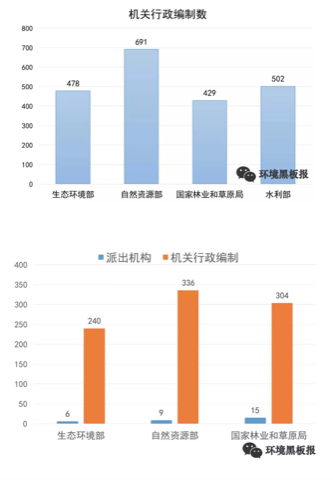
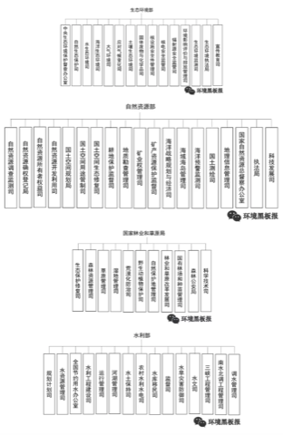

第2章 前沿资讯
十一月
研究动态
本栏目旨在介绍环境科学、环境工程与生态学及相关学科近期发表的有意思的研究
- 海洋微塑料正在成为研究热点，但密歇根大学的 Allen Burton 却在ES&T上发了篇 Viewpoint 泼冷水，在他眼里，这类研究缺少风险评价，可能毫无意义
推荐人：田振宇
文献链接 http://pubs.acs.org/doi/10.1021/acs.est.7b05463
- 谷歌正在用车载传感器检测街道级别的空气质量
推荐人：于淼
- 城市热岛效应所引发的温度跟相对湿度变化会影响半挥发化合物的溶解度进而影响pH值，研究人员发现巴尔的摩市跟芝加哥城市跟郊区上空的pH差异在0.8与0.65，当我们讨论区域尺度的大气污染时，城乡差异的来源可能比想象的要复杂
推荐人：于淼
文献链接 http://pubs.acs.org/doi/10.1021/acs.est.7b02786
- 科研作图是很多研究生痛苦的一个根源，然而并不是越炫酷越好，下面这个例子可以说是一个反面教材，过多的立体化、文字化与阴影化处理丢失了图片传达信息的意图，不如直接用表格 （编自 Andrew Gelman的博客）
推荐人：于淼
805研究简报
本栏目旨在介绍805班同学发表的论文
菌根耐铬机理获新进展 - 伍松林
做为陆地上最为广泛的微生物之一，丛枝菌根（arbuscular mycorrhiza, AM）真菌能与绝大多数的陆地高等植物形成共生体系，帮助植物适应养分贫瘠、干旱、重金属污染等各种逆境胁迫。AM真菌在植物耐受铬污染胁迫中具有重要作用，因而在铬污染土壤生态恢复中具有极大潜在应用价值。然而AM如何促进植物耐受铬污染尚不得而知。
最近一项研究表明AM真菌在六价铬污染情况下能够上调植物根系高亲和硫酸根转运蛋白基因的表达，促进植物根系对硫的吸收。AM真菌同时系统调控了硫在植物体内的转运和代谢以抵御铬污染胁迫。硫代谢产物如半胱氨酸（cysteine, Cys), 谷胱甘肽（glutathione, GSH), 植物络合素（phytochelatins, PCs)等往往能够通过巯基与金属阳离子相结合，进而降低金属毒性。基于此，研究人员推断，AM根系中应有更多的铬与巯基相结合。
然而，事实并非如此，基于同步辐射光源的XAFS分析技术发现，相比较未接种根系，接种AM真菌的根系中有较少的铬与巯基相结合，相反，磷酸结合态铬在AM根系中占主导。这似乎说明，硫代谢产物在菌根耐铬中的作用并不在于络合金属铬。有趣的是，研究人员通过相关分析初步发现，这些主要硫代谢产物（Cys, GSH, PCs）可能在缓解铬引起的植物氧化胁迫中起着重要作用。
相关文章参见：https://www.sciencedirect.com/science/article/pii/S0098847217302939
十二月
研究动态
- 辣木籽被国内保健行业广为吹捧，但它其实是水处理界的明星，将其混合沙子作为滤水器可以去除99%的颗粒物与细菌
推荐人：于淼
链接：http://pubs.acs.org/doi/10.1021/acs.estlett.7b00490
- 这篇等了很久了，USEPA对家用净水器滤芯做的嫌疑物筛选分析和非目标分析。所采用的Brita Filter是美国最常见的家用简易净水器，滤芯里是活性炭和阳离子交换树脂（他们应该给我广告费啊）。饮用水里有哪些污染物？看看这篇文章吧！
非常不错的一个暴露组学范例研究，用非目的分析配合数据库筛选环境水样中的毒性化合物，目测重复难度不大，不过完成这个实验需要多领域专家协作，这篇是EPA外带橡树岭国家实验室配合出来的，国内有同等战力的单位屈指可数
推荐人：田振宇、于淼
链接：https://www.sciencedirect.com/science/article/pii/S026974911732691X
- 把汽车型号，费用，和减排目标联系起来做分析，看看什么车既便宜又环保（可是一般电动车不好修而且开起来太肉啊，well,作者是不是收了Tesla钱了 (●′ω`●)）
推荐人：田振宇
链接：http://pubs.acs.org/doi/10.1021/acs.est.6b00177
- 毒理学研究往往考察单一污染物对单一毒性的影响，EHP上的评论文章引用了一篇双酚类污染物复合暴露的研究指出，针对多污染物与多毒性终点的研究可能给出更多毒理学信息，也需要新的方法学创新
推荐人：于淼
链接：https://ehp.niehs.nih.gov/ehp2341/ https://ehp.niehs.nih.gov/ehp2325
- Environmental DNA (eDNA) 是近些年提出的新概念，指环境样品中可直接测定的非生物来源DNA，可定量分析环境多样性变化，我很好奇这是不是那些搞基因组的发现自己技术过时了就包装下输送到考古跟环境研究领域抢经费了，不过确实是个不错的指标，有希望成为研究热点
推荐人：于淼
链接：http://pubs.acs.org/doi/10.1021/acs.est.7b05199 http://www.sciencedirect.com/science/article/pii/S0006320714004443
- Scripps研究所一直是化学类研究的前沿阵地，脑洞也比较大，在近期提出的一套暴露组学研究流程中研究人员使用了IBM的Watson AI系统来学习文献中的分子并评价暴露组学筛选出的分子，这是要让多少人丢饭碗啊
推荐人：于淼
链接：http://pubs.acs.org/doi/full/10.1021/acs.analchem.7b02759
- “赏金科学家”召集令！！！美国农垦总局出价十万美金征集根除水体中斑马贻贝的方案，欢迎物种入侵相关研究组来美捞金，毕竟一个方案就是两个面上的钱，截止日期二月底
推荐人：于淼
链接：https://www.innocentive.com/ar/workspace/challengeDetail?challenge=9933880
- 来自中国的研究组测了下海盐、湖盐和井盐中的塑料纤维，发现海盐里微塑料明显多于井盐，这个视角比较独特，直接跟食品挂钩了，不过依然缺少风险评价
推荐人：于淼
链接：http://pubs.acs.org/doi/10.1021/acs.est.5b03163
- 这个有点像淼哥之前推荐的 Environmental DNA (eDNA) 那个，不同的是研究者着眼于抗生素抗性基因（antibiotic resistance genes, ARG, 也就是耐药超级细菌所需要的基因）。在污水处理过程中细胞相关的ARG能被较为高效地清除，但是游离的胞外ARG去除效率较低，可能是耐药基因的一个重要来源
推荐人：田振宇
链接：http://pubs.acs.org/doi/10.1021/acs.est.7b04283
- 原来以为原生动物除了难杀灭和能引起奇怪的病之外就没啥意义。然而最近EAWAG的一项研究发现，活性污泥中的原生动物能够通过电荷吸附的作用去除污水中的胺类。
推荐人：田振宇
链接：http://pubs.acs.org/doi/10.1021/acs.est.7b03556
- 五大湖的藻华会影响类似海盐气溶胶的淡水湖气溶胶，单颗粒质谱技术或气溶胶质谱技术有助于我们研究这一特定环境过程，这类概念很不错，但落地还是需要未知物鉴定的数据分析技术，不然还是pca游戏
推荐人：于淼
链接：http://pubs.acs.org/doi/10.1021/acs.est.7b03609
- 拿NHANES数据集发ES&T不新鲜，但搞个10年前的ANN算法来溯源就有点过分了，这种题目放到数据类MOOCs上当作业可能都是送分题，而且数据质量也太差了，0.3%到0.5%的灵敏度还不如随机噪音，没有验证集结果根本就是瞎猜
推荐人：于淼
805研究简报
本栏目旨在介绍805班同学发表的论文
氮杂环芳烃环境过程研究新进展 - 田振宇
氮杂环芳烃（azaarenes）是多环芳烃（PAHs）的氮取代类似物。这类污染物常伴随多环芳烃同时出现在污染场地中，但是由于分析方法的限制，目前对于它们的浓度和环境行为了解十分有限。特别是已知具有较强毒性的高分子量（4-5环）氮杂环芳烃，在各种环境介质的信息都比较缺乏。现有研究大多集中于低分子量（2-3环）的少数几个同类物。换句话说，这类污染物中最危险的东西，我们了解的最少，需要填补这一信息上的空白。
基于高分辨质谱（HRMS）和质量亏损过滤（mass defect filtering），本研究将一种非目标分析方法应用于四个不同污染场地的土壤样品，检测出8个系列共232个同类物。其中四环和五环的氮杂环芳烃被大量检出，种类和浓度都较高。对比污染场地中污染物的分布，可见风化程度高的土壤中四环和五环氮杂环芳烃比例更高。已知有毒且有致癌性的的benzo[c]acridine和dibenzo[a,h]acridine被检出，并且发现它们具有较多的同分异构体。 从本研究可以得出的主要结论是：
由于以往的研究忽略了氮杂环芳烃的多样性，它们在污染土壤的毒性中起到的作用很可能被低估；
对于土壤中氮杂环芳烃的研究，应更多集中于以往较少关注的高分子量同类物，因为它们的浓度较高且具有持久性。
链接：http://pubs.acs.org/doi/abs/10.1021/acs.est.7b03319 （其实窝是810班的）
一月
研究动态
- ES&T Letter 的执行主编是一个特别喜欢写 editorial 的教授，哪怕一期就三四篇，在 Letter 的 IF 没有超过正刊后，主编大人自己定义了一个 Author Impact Factor（AIF），用过去两年发表数除以2，然后又定义了 L 因子（用 AIF 除以发表期刊的平均 IF ），不得不说这个指标就比较难刷了，有一点他说的非常在理，期刊要以发表的工作为荣，而不是反过来。
推荐人：于淼
链接：http://pubs.acs.org/doi/10.1021/acs.estlett.7b00546
- 用高通量metagenomics 测室内空气中的病毒核酸，采样的地方是12个大学宿舍。宿主多样性很高，而且病毒群落组成可能反映与房间居住者的关联。
推荐人：田振宇
链接：http://pubs.acs.org/doi/10.1021/acs.est.7b04203
- 考虑停留时间，室内空气污染其实比室外影响要大，清华大学的一个研究组考察了中式烹饪过程中室内污染的影响因素，结果发现烹饪方式对大多数污染物影响最严重，基本趋势是炒菜>油炸>蒸煮，如果开了排气扇，大多数污染物浓度都能下降一半。
推荐人：于淼
链接：http://pubs.acs.org/doi/10.1021/acs.est.7b05600
- 左旋葡聚糖经常被用来作为生物质燃烧的标志污染物进行溯源，然而最近的研究发现燃煤也可以生成左旋葡聚糖，这导致我们可能高估了北京的细颗粒物中生物质燃烧的贡献，特别是有燃煤行为的地区
推荐人：于淼
链接：http://pubs.acs.org/doi/10.1021/acs.est.7b05858
- 关于精子质量和大气颗粒物之间关联的流行病学研究。结论比较有意思，说 PM10 (以及与 PM2.5的差) 与精子质量有负相关性，而不是PM2.5。但是大气颗粒物的数据来自区域性的监测和调查问卷，感觉不是很靠谱。
推荐人：田振宇
链接：http://pubs.acs.org/doi/10.1021/acs.est.7b05206
- 光化学反应能在道路尘土中产生单线态氧。大气气相反应和水体光化学反应中的单线态氧并不稀奇，考虑到颗粒物本身就带有各种污染物，这个发现还是有点意思。和持久自由基有无关联？是否会影响stormwater 中的污染物？可以问出一系列的问题了。
推荐人：田振宇
链接：http://pubs.acs.org/doi/10.1021/acs.estlett.7b00533
- 欧盟在2018年又加入了7种严控污染物，有三种含镉物质，另外得克隆也进入名单了，阻燃剂从 PBDEs 开始，几乎就是沿着替代品路线一路禁下去，核心问题在于卤代物天然具有遇热释放卤原子猝灭火焰的特性，替代物都是沿着这个常温稳定，高温分解的思路开发，而这个思路几乎对应持久性有机污染物的特性，这个猫捉老鼠的游戏需要新技术作为搅局者来打破循环。
推荐人：于淼
链接：https://echa.europa.eu/candidate-list-table
- 数据分析方法是长久以来被忽视的研究方向，伴随数据时代的崛起，越来越多的数据人才正在流入传统科研领域掘金，环境学科更是价值洼地，这篇 EHP 的文章是基于 stan 构建的一个贝叶斯在线分析工具，从 stan 角度看就是一个本科生课后作业水平，但 EHP 在环境领域什么份量相信大家都心里有数。总之，不学习新知就会被抛弃，这是学术圈的铁律。
推荐人：于淼
二月
研究动态
- 人为设计过的 DNA 被纳米材料包裹后释放到流域中进行溯源是一项非常新的技术，确实 DNA 片段是环境友好的而纳米材料是稳定的，但一个有意思的情况是如果搞 eDNA 研究的跟 DNA-tracer 的都用了一条河… 呃，估计要出大新闻了
推荐人：于淼
链接：http://pubs.acs.org/doi/10.1021/acs.est.7b02928
- 我在逻辑上等这篇文章很久了，就知道微塑料上这个“微”字一定会被“纳”字来入侵，现在果然有人跑出来炒“纳塑料”概念了，一个尺度转换就是一个学科啊
推荐人：于淼
链接：http://pubs.acs.org/doi/10.1021/acs.est.7b05559
- 经济发展对于污染物的迁移等环境过程有着重要影响，这篇研究发现发达地区对周边欠发达地区输送了汞污染或者说优先使用了脱汞技术，这类按经济区域尺度研究的污染不平衡很有意思，如果跟自然地理条件相结合可能会有很有意思的发现
推荐人：于淼
链接：http://pubs.acs.org/doi/10.1021/acs.est.7b04607
也是关于微塑料的，用 micro-Raman 检测瓶装水里的微塑料，发现瓶体会向水中直接释放塑料微粒。听起来是有点吓人，浓度呢？真正的风险呢？ 推荐人：田振宇 链接：https://www.sciencedirect.com/science/article/pii/S0043135417309272
《地球物理学研究快报》发现大约 79.3 ± 46.1 万吨的汞被冻结在永久冻土层中，而 2010 年全球人类活动排放到大气中的汞约为 1960 吨，也就是说，人类直接活动产生的汞也许不算什么，但要是北极的永久冻土层化个30%，现有海洋生态基本要重写了
推荐人：于淼
链接：http://onlinelibrary.wiley.com/doi/10.1002/2017GL075571/full
- 新烟碱类农药是近年来的一个小热点，因为被怀疑导致蜂群崩溃。EST新文章分析了中美的蔬菜水果样品中的7种新烟碱，并和美国农业部农药项目(USDA/PDP)的数据进行了对比，发现中美样品的检出频率都高于USDA的数据。（似乎西红柿的残留更厉害一些?）
推荐人：田振宇
链接：https://pubs.acs.org/doi/10.1021/acs.est.7b05596
- Science上的新研究显示，从挥发性日用化工产品（如杀虫剂、涂料、油墨、清洁剂、个人护理用品等，特别是从室内溢出）排放的VOC已经达到了化石燃料排放量的近一半，逐渐接过了交通运输的份额，并且颇具生成SOA的潜能。（估计以后的法规也会侧重这一块儿）
推荐人：崔天去
链接：http://science.sciencemag.org/content/359/6377/760.full
- Hites 老爷子是为数不多一个人发论文的环境化学科学家，最近他又关注了下 PCB-11，跟传统被禁用的 PCBs 的来源不同，PCB-11 是一种染料生产的副产品，五大湖地区大气中常见 PCBs 的半衰期大概12年，而 PCB-11 在大气中浓度多年来一直稳定，几乎没有半衰期
推荐人：于淼
链接：https://pubs.acs.org/doi/10.1021/acs.estlett.8b00019
- DNA 促进 PAH 在进蒙脱石上的吸附。我们知道一些 PAH 致癌的作用是与DNA 碱基发生不可逆的结合，致使复制出错而突变。反其道而行的话，也可以利用这个机制对PAH 进行吸附。主意不错，但是这么多DNA 哪来？（窝记得窝上中学的实验，DNA 用的是。。。鱼白？）
推荐人：田振宇
链接：https://pubs.acs.org/doi/10.1021/acs.est.7b05174
- Acesulfame K, 中文俗称安赛蜜，是一种难降解的代糖甜味剂，以其稳定性常被用作废水的标志物（去年有人用它计算游泳池里尿的含量）。然额，德国科学家发现它们的废水处理厂中有一些能够较高效地去除这种物质，时间仅用了几年。原因是活性污泥中的某些微生物产生了能够吃掉安赛蜜的能力，真是一种可以观察到的进化。（另一个脑洞，如果肠道微生物也有了这种能力。。。）
推荐人：田振宇
链接：https://pubs.acs.org/doi/10.1021/acs.est.7b05619
- 单萜[Monoterpene]是VOC里的一大自然源，高分辨质谱测到它们贡献了美国东南部（如森林覆盖的阿拉巴马）夏日PM2.5的一半（相当可观），人为排放的NOx也促进了Monoterpene-SOA的生成。（VOC除甲烷外的自然源大概是人为源的10倍，所以其实在很多地方，树是主要问题，而不是车、煤）
推荐人：崔天去
三月
研究动态
- 世界范围内只有7%的塑料被循环利用，而亚洲特别是中国基本没有良好的管控，全球90%的海洋微塑料是来自于10条主要河流的输入，其中8条来自亚洲，长江尤为严重
推荐人：于淼
链接：https://www.economist.com/blogs/graphicdetail/2018/03/daily-chart-2
- 三氯生是一种牙膏中常见的杀菌剂，其结构与持久性有机污染物多溴联苯醚及二恶英近似，最近研究发现其在污水处理厂内可转化为甲基三氯生，而甲基三氯生有可以在植物体内转化为三氯生，这类环境转化行为无疑提高了研究其环境过程与环境半衰期的复杂度。
推荐人：于淼
链接：https://pubs.acs.org/doi/10.1021/acs.estlett.8b00071
- 刚看到 Hites 老爷子这篇对 GC-MS 发展历程的前瞻性文章，什么叫老派科学家，老派科学家就是这种看电视上演员把 mass spectrometry 说成 mass spec 后就要跑到 AC 上发文章吐槽的风格，如果你用 GC-MS ，一定看看这篇里对技术发展的梳理，可能很多仪器故障就有思路解决了，不要总是打 800 。
推荐人：于淼
链接：https://pubs.acs.org/doi/abs/10.1021/acs.analchem.6b01628
- 一般认为微生物生物降解处理后的水毒性会降低，但这份研究表明这些代谢产物的毒性并没降低，这个研究比较初步，如果用代谢组学方法研究，可能会揭示更多的毒性细节
推荐人：于淼
链接：https://pubs.acs.org/doi/10.1021/acs.est.7b06408
- 典型外来入侵文章，随机森林算法放在统计学习或机器学习里可能都过时很久了（现在流行各种深度学习、卷积神经网络还有强化学习），但结合环境数据就可以造出一个精度很高的细颗粒物浓度预测模型，以后问题解决型专家可能会比知识型专家更受欢迎，因为有些任督二脉需要合作或通才才能打通
推荐人：于淼
链接：https://pubs.acs.org/doi/10.1021/acs.est.7b05381
- 很有意思的小设备，有点类似温度计，用固相萃取富集，然后用眼睛看颜色扩散长度来决定样品中铜的浓度，原理非常简单，但能组出个能用的产品也是本事，这也是很少有的 ES&T 分析方法类文章
推荐人：于淼
链接：https://pubs.acs.org/doi/10.1021/acs.est.7b05436
- 还记得去年十一月研究速递里说的那个关于海洋微塑料的吐槽吗？现在又有了下文，德国科学家认为，虽然毒性数据短缺，但也不能等着出了问题再亡羊补牢，而合理的解决方法似乎就一个：模型
推荐人：于淼
链接：https://pubs.acs.org/doi/10.1021/acs.est.8b00961
- FT-ICR-MS 研究酒已经是经典案例了，这篇文章更引入了代谢组学的一些方法来研究酒，很难得把故事讲圆了，以后如果再看到品酒专家，可以试探性让他解释下 FT-ICR-MS 是什么。要说跟环境化学的关系，其实酿酒就是个复杂的环境过程，自然界或污水厂都存在类似的场景，同构互换是最简单的发现新研究策略
推荐人：于淼
链接：https://www.frontiersin.org/articles/10.3389/fchem.2018.00029/full
- 石墨烯产品也许还没上市，但环境定量分析已经如火如荼的搞起来了，跟阻燃剂有类似的矛盾，在危害产生前就保持警惕是没问题的，但权衡危害与效益是需要时间来见证的
推荐人：于淼
四月
研究动态
- 怎么讲，手里有锤子的时候看什么都是钉子。non-target 玩多了之后，看什么都可以non-target 一下，塑料也不放过。不过整体来说还算是有趣的研究。
推荐人：田振宇
链接：https://pubs.acs.org/doi/pdfplus/10.1021/acs.estlett.8b00119
- 通过分子描述符构建保留时间预测模型是合理的，但是我个人对于预测非目的分析的研究是有疑问的，也许像这篇用了改进的ANN预测后模型效能提高了，但实际应用时还是比较尴尬，你手头只有未知物的保留时间而不是分子描述符，怎么推结构？多变量推单变量是没问题的，反过来基本没有模型可以做到，除非你把目标物限制到特定种类，但如果限定了，模型就不通用了。如果结合二级质谱倒还好说，不过眼下看路还很长。
推荐人：于淼
链接：https://pubs.acs.org/doi/10.1021/acs.jcim.7b00496
- 这个思路也很有意思：从消费量最大的产品来反推什么可能是新的重要污染物。液晶屏的单体有可能具有毒性，生物蓄积能力，以及持久性。不过在还没有实际数据的时候，这么着急发viewpoint 是什么套路?
推荐人：田振宇
链接：https://pubs.acs.org/doi/10.1021/acs.est.8b01636
- 现在已经有人用机器学习预测新型合金玻璃了，据说比实验筛选快100倍，如果材料科学逐渐变成AI子学科，其他实验学科也不远了，有时间都去学点新技术吧，可能以后实验就仅仅是个验证部分了，而发现则由模型来主导
推荐人：于淼
链接：http://advances.sciencemag.org/content/4/4/eaaq1566
- 气溶胶质谱常用来检测烹饪气溶胶，但一个新研究显示烹饪气溶胶的离子化效率显著高于正常值，也就是之前的测定可能高估了烹饪气溶胶浓度，这对溯源研究可能有重要影响
推荐人：于淼
链接：https://pubs.acs.org/doi/10.1021/acs.est.7b06278
- 从废旧电子产品中回收贵金属已经变的越来越便宜，能够比开采原生矿的性价比更高。我一开始还在想是否回收过程的污染成本会很高，然而其实采矿也好不到哪里去吧
推荐人：田振宇
链接：https://pubs.acs.org/doi/10.1021/acs.est.7b04909
- 有人在印度乡村做了个随机对照实验，找了三组人进行家庭用水相关培训，之后一组人会收到信息提醒，一组人会收到提醒+水中大肠杆菌的测试结果，一组人收到提醒+水中大肠杆菌的测试试剂盒，追踪一个月后去测定他们家饮水中大肠杆菌，结果发现后面两组水质都有改善，然后结论认为提供足量信息会改善习惯与水质。其实我感觉这文章从设计到结论问题一大堆，不过最关键的是，这种拿人做实验真的没伦理问题吗？
推荐人：于淼
链接：https://pubs.acs.org/doi/10.1021/acs.est.8b00035
- 分散剂经常被用于清除海洋中泄漏的石油，这个研究发现分散剂对于石油的光化学氧化产物效果很差，因此最好不要在阳光强烈的天气使用。
推荐人：田振宇
链接：https://pubs.acs.org/doi/10.1021/acs.estlett.8b00084
- 非目的分析目前主要有三大分支，一个是石油组学，一个是代谢组学，另一个就是环境筛查，其实方法大同小异，这篇侧重多级质谱的特征离子来筛选未知全氟化合物，虽然不是真正意义上的非目的，但这个流程还是具备很强可移植性的，喜欢排列组合的朋友可以关注下。
推荐人：于淼
政策速递
重大政策资讯
2018年3月，十三届全国人大一次会议表决通过《中华人民共和国宪法修正案》，首次将“生态文明”写入宪法，使党的主张成为国家意志的体现，为生态环境保护工作提供了有力保障。生态文明建设进入了新时代。
2018年3月，国务院机构改革，组建自然资源部，统一行使全民所有自然资源资产所有者职责，统一行使所有国土空间用途管制和生态保护修复职责；组建生态环境部，整合分散的生态环境保护职责，统一行使生态和城乡各类污染排放监管与行政执法职责。
链接
中央&国务院政策资讯
- 4月1日
环境保护税起征 全国首张环保税税票在沪开出
链接
http://www.gov.cn/xinwen/2018-04/02/content_5279187.htm
中华人民共和国环境保护税法
http://www.zhb.gov.cn/gzfw_13107/zcfg/fl/201704/t20170417_411610.shtml
中华人民共和国环境保护税法实施条例
http://www.gov.cn/zhengce/content/2017-12/30/content_5251797.htm
- 4月12日
国务院公布《关于落实〈政府工作报告〉重点工作部门分工的意见》，打好污染防治攻坚战（2018年《政府工作报告》中的三大攻坚战之一）涉及15个部门。具体包括生态环境部、国家发展改革委、国家能源局、科技部、工业和信息化部、公安部、财政部、自然资源部、住房城乡建设部、交通运输部、水利部、农业农村部、商务部、海关总署、国家林业和草原局等。
链接
http://www.gov.cn/zhengce/content/2018-04/12/content_5281920.htm
- 4月14日
《中共中央 国务院关于支持海南全面深化改革开放的指导意见》。海南成为继福建、贵州、江西之后的第4个国家级生态文明试验区，继三江源、祁连山、大熊猫、东北虎豹、武夷山、钱江源、普达措、神农架、北京长城、湖南南山之后的第11个国家公园体制试点。
链接
http://www.gov.cn/xinwen/2018-04/14/content_5282456.htm
- 4月20日
中共中央国务院批复《河北雄安新区规划纲要》，雄安新区发展定位之一“绿色生态宜居新城区”，规划“打造优美自然生态环境”。
链接：
http://www.xinhuanet.com/2018-04/21/c_1122720132.htm
- 4月26日
习近平主持召开深入推动长江经济带发展座谈会并发表重要讲话，强调新形势下推动长江经济带发展，关键是要正确把握整体推进和重点突破、生态环境保护和经济发展、总体谋划和久久为功、破除旧动能和培育新动能、自我发展和协同发展的关系，坚持新发展理念，坚持稳中求进工作总基调，坚持共抓大保护、不搞大开发，加强改革创新、战略统筹、规划引导，以长江经济带发展推动经济高质量发展。
生态环境部政策资讯
- 4月10日
生态环境部通报关于2017年度全国环评机构和环评工程师查处情况
链接
http://www.zhb.gov.cn/gkml/sthjbgw/bgtwj/201804/t20180410_434168.htm
生态环境部《国家地表水水质自动监测站文化建设方案》征集公众意见，进一步强化国家地表水水质自动监测站的公共服务功能，赋予水站人文内涵，丰富和拓展水站文化属性。
链接
http://www.zhb.gov.cn/hdjl/yjzj/zjyj/201804/t20180411_434321.shtml
- 4月12日
生态环境部部长李干杰在京主持召开部务会议，审议并原则通过《关于废止有关排污收费规章和规范性文件的决定（草案）》《工矿用地土壤环境管理办法（试行）（草案）》
链接
http://www.mep.gov.cn/gkml/sthjbgw/qt/201804/t20180413_434430.htm
生态环境部部长李干杰在京主持召开生态环境部常务会议，审议并原则通过《土壤环境质量 农用地土壤污染风险管控标准（试行）》《土壤环境质量 建设用地土壤污染风险管控标准（试行）》。
链接
http://www.mep.gov.cn/gkml/sthjbgw/qt/201804/t20180413_434432.htm
- 4月13日
生态环境部办公厅发函（环办科技函[2018]117号），征集先进大气污染防治技术。
- 4月17日
生态环境部发布《2018年生态环境监测工作要点》，明确2018年生态环境监测重点任务和工作要求。
链接
http://env.people.com.cn/n1/2018/0417/c1010-29931839.html
- 4月18日
生态环境部印发《关于加强固定污染源氮磷污染防治的通知》，推动解决日益突出的氮磷污染问题
链接
http://www.zhb.gov.cn/gkml/sthjbgw/qt/201804/t20180418_434875.htm
生态环境部联合住房城乡建设部将于5月初启动2018年黑臭水体整治环境保护专项行动，范围涉及36个重点城市（直辖市、省会城市、计划单列市）及全国其他部分地级市。
链接
http://www.zhb.gov.cn/xxgk/hjyw/201804/t20180418_434739.shtml
- 4月20日
生态环境部召开会议推进生态保护红线划定工作。今年2月，国务院批准了京津冀3省（市）、长江经济带11省（市）和宁夏回族自治区共15省份生态保护红线划定方案，山西等其余16省区将于今年年底前完成生态保护红线划定，最终汇总形成生态保护红线全国“一张图”。
- 4月23日
生态环境部三天通报六起典型案件 涉及中央环保督察整改不力、污染反弹等问题，一批责任主体受到严肃处理
链接
http://www.zhb.gov.cn/xxgk/hjyw/201804/t20180423_435128.shtml
- 联合发布
生态环境部、农业农村部、水利部联合印发《重点流域水生生物多样性保护方案》
链接
http://www.mep.gov.cn/gkml/sthjbgw/sthjbwj/201804/t20180410_434172.htm
商务部、生态环境部等8部门联合印发《关于开展供应链创新与应用试点的通知》，将构建绿色供应链列为重点任务，引导地方和企业践行绿色发展理念，促进生态环境质量改善。
链接
http://www.mep.gov.cn/gkml/sthjbgw/qt/201804/t20180425_435354.htm?COLLCC=2822344264&
生态环境部办公厅、国家发改委印发《清洁生产审核评估与验收指南》
链接
http://www.mep.gov.cn/gkml/sthjbgw/bgtwj/201804/t20180424_435213.htm?COLLCC=2822314204&
五月
研究动态
- 算是一个有意思的知识迁移，把质谱数据上搜索多肽的方法（和引擎）用于识别PEG之类的清洁剂，毕竟其实都算是高分子了。
推荐人：田振宇
链接：https://pubs.acs.org/doi/10.1021/acs.analchem.8b00365
- 感觉很有意义的一个研究，作者发现磺胺类抗生素在活性污泥中的主要转化途径是与蝶呤生成共轭加合物，并且这类产物依然有抗菌活性。这一发现凸显了转化产物（TP）检测的重要性，并有助于解释之前对于磺胺类去除条件的争议。
推荐人：田振宇
链接：https://pubs.acs.org/doi/10.1021/acs.est.7b06716
- 元素水平的研究特别是重金属元素比例研究是我本科毕设时做过的且感觉比较有意思的方向，最近一篇研究关注了货轮发动机的煤烟与排放气溶胶中细颗粒物里的元素组成，发现重金属 V 被细颗粒物富集了，毒性也相应加大了。
推荐人：于淼
链接：https://pubs.acs.org/doi/10.1021/acs.est.8b01764
- MFC 这个东西我一直不知道靠不靠谱，感觉其中一个疑虑就是能不能大规模投入实用。这不就有人搞了一吨容量的 MFC 跑了一年，COD去除70-90%，能量密度达到 7–60 W m−3 （懂行的人来说说这属于什么水平？）
推荐人：田振宇
链接：https://www.sciencedirect.com/science/article/pii/S0043135418303609
- 有人担心不同长度的 eDNA 水环境降解速率不同导致检查出得丰度不同，这项研究发现长度的影响并不大，而来源的影响更大，这样就有可能用不同长度 eDNA 来进行环境过程溯源了
推荐人：于淼
链接：https://pubs.acs.org/doi/10.1021/acs.est.8b01071
- 现在更多人去讨论全球变暖，但臭氧洞、酸雨曾与之并称新世纪三大环境灾难，后面两个其实只是少了关注但不代表不存在了，一项研究发现如果中国未来对废旧冰箱空调的处理不当将造成氟利昂等制冷剂的大量排放进而同时加剧全球变暖与臭氧空洞的形成
推荐人：于淼
链接：https://pubs.acs.org/doi/10.1021/acs.est.7b05987
- 细颗粒物源解析的基本原理是先采集不同来源的细颗粒物并分析成分，然后根据成分构建多元模型反推样品中细颗粒物的成分组成，举个例子，A源有10单位的铁，B源有20单位的铁，测C源发现12单位的铁，那么C源的主要成分就可能来自A，通过质量平衡与因子分析就可以从概率上得到一个来源组成，这篇文章把这种源解析模型做成了个excel表格，唯一的问题在于我没找到下载链接…
推荐人：于淼
链接：https://pubs.acs.org/doi/10.1021/acs.est.8b00131
- 环境分析与临床生物标记物分析的思路互补性比较强，临床上喜欢用特异性很高的单标记物来进行诊断，基于质谱的环境分析则更擅长高通量痕量定性定量，结合起来就可以是基于质谱高通量同时分析多个特异性很高的生物标记物，这篇文章就用这个思路来同时分析尿液中的七种氧化应激生物标记物，虽说环境分析更喜欢测定外源污染物，但如果同时测定内源标记物就会是个很不错的故事。
推荐人：于淼
链接：https://pubs.acs.org/doi/10.1021/acs.est.8b00883
- 质谱与光源是现在环境分析技术的两极，其中微型质谱或便携式质谱一直是离子阱质谱的天下，但最近杜克大学的研究人员又把磁谱这个老古董翻了出来并用离子同步进样方式进行了改进，新仪器可以小型化并可以测到m/z 10 到 120而离子阱一般低于50就测不到了，这个质量段对于地质与食品的同位素分析非常有用
推荐人：于淼
链接：https://link.springer.com/article/10.1007/s13361-017-1820-y
政策速递
重大政策资讯
- 全国生态环境保护大会
5月18日至19日，全国生态环境保护大会在北京召开。习近平在全国生态环境保护大会上强调坚决打好污染防治攻坚战、推动生态文明建设迈上新台阶。李克强韩正讲话汪洋王沪宁赵乐际出席。
习近平讲话强调，要自觉把经济社会发展同生态文明建设统筹起来，充分发挥党的领导和我国社会主义制度能够集中力量办大事的政治优势，充分利用改革开放40年来积累的坚实物质基础，加大力度推进生态文明建设、解决生态环境问题，坚决打好污染防治攻坚战，推动我国生态文明建设迈上新台阶。
此次大会规格很高，除了出访的栗战书，习近平和其他常委悉数出席，可见中央对生态环境保护问题的重视程度之高。
中央&国务院政策资讯
- 5月7日
韩正在国务院机构改革第二次推进会上强调，坚持优化协同高效做细做实“三定”工作、构建起职责明确依法行政的政府治理体系。要求抓紧研究起草相关综合执法队伍整合组建的指导意见，积极支持地方因地制宜推进机构改革。
链接：http://www.gov.cn/xinwen/2018-05/07/content_5288865.htm
- 5月7日
栗战书在全国人大常委会大气污染防治法执法检查组第一次全体会议上指出：以法律的武器治理污染、用法治的力量保卫蓝天。
链接：http://www.gov.cn/xinwen/2018-05/07/content_5288861.htm
- 5月25日
李克强主持召开国务院全体会议，强调推进改革开放促经济转型升级，高质量发展保障基本民生，不断改善人民生活。要坚持新发展理念，加快新旧动能转换，增强发展内生动力。坚定淘汰落后产能，大力发展环保产业，走出生态保护和经济发展的双赢之路。
要强化风险防控。完善预案，加强预警，突出抓好金融、城市治理、安全生产、污染防治、自然灾害等方面风险以及国际重大风险应对，做好应急管理，确保经济社会大局稳定。
链接：http://www.gov.cn/premier/2018-05/25/content_5293703.htm
- 5月28日：
中国科学院第十九次院士大会、中国工程院第十四次院士大会召开。习近平出席会议并发表重要讲话，强调要瞄准世界科技前沿引领科技发展方向、抢占先机迎难而上建设世界科技强国。
生态环境部政策资讯
- 5月7日
生态环境部部长李干杰在京主持召开生态环境部部务会议，审议并原则通过《环境污染强制责任保险管理办法（草案）》
链接：http://www.zhb.gov.cn/gkml/sthjbgw/qt/201805/t20180507_437465.htm
- 5月10日
生态环境部办公厅印发《关于坚决遏制固体废物非法转移和倾倒进一步加强危险废物全过程监管的通知》（环办土壤函〔2018〕266号），旨在严厉打击固体废物非法转移倾倒违法犯罪行为，坚决遏制固体废物非法转移高发态势，加强危险废物全过程监管，有效防控环境风险。
链接：http://www.mee.gov.cn/gkml/sthjbgw/stbgth/201805/t20180522_440867.htm?COLLCC=2493837362&
- 5月18日
农业农村部会同生态环境部联合印发《2017年度畜禽养殖废弃物资源化利用工作考核实施方案》的通知。
链接：http://www.moa.gov.cn/govpublic/XMYS/201805/t20180522_6142748.htm
- 5月20日
生态环境部启动水源地专项督查，组织开展全国集中式饮用水水源地环境保护专项第一轮督查，进一步推动水源地保护攻坚战向纵深发展。
链接：http://www.mee.gov.cn/gkml/sthjbgw/qt/201805/t20180520_440699.htm?COLLCC=2493903990&
- 5月21日
《乏燃料管理安全与放射性废物管理安全联合公约》缔约方第六次审议会议在奥地利维也纳国际原子能机构总部开幕，来自64个缔约方共计600多名代表出席了本次会议。会议将持续两周，第一周审议各缔约方国家履约报告，第二周对审议情况进行总结并发布大会报告和主席报告。中国七项实践被认定为良好业绩。
链接：http://www.mee.gov.cn/xxgk/hjyw/201805/t20180525_441444.shtml?COLLCC=2494299366&
背景材料：乏燃料又称辐照核燃料，是经受过辐射照射、使用过的核燃料，通常由核电站的核反应堆产生。
- 5月22日
第25个“国际生物多样性日”，生态环境部和中国科学院联合发布中国生物多样性红色名录，为全面掌握我国生物多样性受威胁状况，提高生物多样性保护的科学性和有效性提供一手材料。
链接：http://www.mee.gov.cn/gkml/sthjbgw/qt/201805/t20180522_441028.htm?COLLCC=2494263839&
- 5月22日：
生态环境部在重庆召开全国环境执法工作会议，认真学习贯彻习近平生态文明思想和全国生态环境保护大会精神，持续深入推进生态环境执法工作，进一步总结经验、加大力度，为坚决打好污染防治攻坚战，推动生态文明建设迈上新台阶做出应有贡献。
链接：http://www.mee.gov.cn/gkml/sthjbgw/qt/201805/t20180523_441053.htm?COLLCC=2493806167&
- 5月25日
第一批中央环境保护督察“回头看”近日将全面启动。“回头看”督察始终坚持问题导向，重点督察经党中央、国务院审核的中央环境保护督察整改方案总体落实情况；督察整改方案中重点环境问题具体整改进展情况；生态环境保护长效机制建设和推进情况。重点盯住督察整改不力，甚至“表面整改”“假装整改”“敷衍整改”等生态环保领域形式主义、官僚主义问题；重点检查列入督察整改方案的重大生态环境问题及其查处、整治情况；重点督办人民群众身边生态环境问题立行立改情况；重点督察地方落实生态环境保护党政同责、一岗双责、严肃责任追究情况。
链接：http://www.mee.gov.cn/gkml/sthjbgw/qt/201805/t20180525_441461.htm?COLLCC=2494232722&
- 5月28日
生态环境部研究制定《禁止环保“一刀切”工作意见》。中央环境保护督察组将陆续进驻10省（区），对第一轮中央环境保护督察整改情况开展“回头看”。为防止一些地方在督察进驻期间不分青红皂白地实施集中停工停业停产行为，影响人民群众正常生产生活，生态环境部明确禁止环保“一刀切”行为。
链接：http://www.zhb.gov.cn/gkml/sthjbgw/qt/201805/t20180528_441554.htm
- 5月29日
2018年全国生态环境宣传工作会议今日在京开幕，生态环境部部长李干杰出席会议并讲话。他强调，必须坚决贯彻习近平新时代中国特色社会主义思想和党的十九大精神，以习近平生态文明思想为指导，全面落实全国生态环境保护大会的部署和要求，进一步强化生态环境宣传工作，为坚决打好污染防治攻坚战营造良好舆论氛围，加快形成全社会共同关心、支持和参与生态环境保护的强大合力。
其他部委政策资讯
- 工业和信息化部办公厅财政部办公厅
关于发布2018年工业转型升级资金工作指南的通知【工信厅联规〔2018〕36号】：5月24日，为加快制造强国和网络强国建设，促进工业转型升级，工业和信息化部、财政部联合组织开展2018年工业强基工程实施方案、绿色制造系统集成、工业互联网创新发展工程及智能制造综合标准化与新模式应用等申报工作。
链接：http://www.miit.gov.cn/n1146295/n1652858/n1652930/n3757016/c6193268/content.html
- 国家发展改革委
永定河综合治理与生态修复部省协调领导小组2018年全体会议：国家发展改革委组织召开永定河综合治理与生态修复部省协调领导小组2018年全体会议,研究部署永定河综合治理与生态修复2018年重点工作。
链接：http://www.ndrc.gov.cn/xwzx/xwfb/201805/t20180529_887475.html
会议背景：永定河是流经京津冀晋等省区的一条重要河流和生态廊道，是北京的母亲河。针对永定河治理的现状和问题，2016年12月以来，国家发展改革委、水利部、国家林业局制定印发了《永定河综合治理与生态修复总体方案》（以下简称《总体方案》），并会同有关地方和单位共同成立永定河综合治理与生态修复部省协调领导小组，部署启动实施了永定河综合治理与生态修复工作。
- 工信部
5月17日，为加强新能源汽车动力蓄电池回收利用溯源管理，规范和指导各相关方履行溯源管理责任，工信部编制了《新能源汽车动力蓄电池回收利用溯源管理暂行规定》（征求意见稿）。现向社会公开征求意见。
链接：http://www.miit.gov.cn/n1146285/n1146352/n3054355/n3057542/n3057548/c6175519/content.html
- 海关总署
5月28日，根据《进口可用作原料的固体废物检验检疫监督管理办法》，海关总署制定了《进口可用作原料的固体废物装运前检验监督管理实施细则》（海关总署公告2018年第48号），自2018年6月1日起执行。
链接：http://www.customs.gov.cn/customs/302249/302266/302269/1863885/index.html
- 自然环境部（原国土资源部）
地下水质量标准(GBT14848-2017)，于2018年5月1日起实施。
链接：http://www.gb688.cn/bzgk/gb/std_list?p.p1=0&p.p90=circulation_date&p.p91=desc&p.p2=GB/T%2014848-2017
地方政府资讯
5月16日上午，河北雄安新区生态环境局在容城县举行揭牌仪式。雄安新区生态环境局成为生态环境部组建后全国第一个地方“生态环境局”。
链接：http://www.xinhuanet.com/energy/2018-05/17/c_1122845095.htm
六月
研究动态
- 今年的第十一届中国R语言会议亮点不少，更难能可贵的是每次会议后报告幻灯片都可以在网上看到，严格意义上R语言会议越来越像数据科学会议了，因为主题涉及金融、计算机、统计、公共卫生、人工智能、地理信息系统、软件开发等诸多热门数据行业。我大概看了下幻灯片，Tensorflow 框架、深度学习、区块链、气候变化、量化投资、商业分析平台等主题出现次数较多，也学习到很多有机会与环境研究结合的新概念与工具，非常适合开拓眼界。
推荐人：于淼
链接：https://pan.baidu.com/s/10XcJiydC2KFRtuQ5RU7myw （密码d4aa）
- 我能明显感觉到环境非目的分析正在快速迭代到代谢组学的研究水平，这篇研究20年人血中污染物变化的研究思路就是代谢组学的流程，作者很聪明地增加了与市售化学品数据库的标注，眼下代谢组与暴露组的区别基本就在检测物是内源还是外源了，当然测定之前你不可能知道，所以其实技术是可共享的。
推荐人：于淼
链接：https://pubs.acs.org/doi/10.1021/acs.estlett.8b00196
- 这个是生态中心的工作，讨论的冷冻-解冻循环中纳米银离子的形态转化问题，现在真的挺少见这类纯环境过程的研究了，很多环境化学的研究其实已经严重偏离真实环境条件了，对真实环境条件中过程的研究其实是环境化学的学科核心竞争力，不然就成了其他学科的追随跟风者了。
推荐人：于淼
链接：https://pubs.acs.org/doi/10.1021/acs.est.8b00694
- 页岩气开发一直以来都挺热的，不过这篇研究算是页岩气开发的副产品。通过对勘探水样的分析与比对90年的数据，研究人员意外发现这组水样数据展示了酸雨影响的减弱，这可能归功于清洁空气法案或铁矿石开采工业的减弱。
推荐人：于淼
链接：https://pubs.acs.org/doi/10.1021/acs.est.8b01123
- 做过环境样品前处理的同学可能都有体会，污水厂的活性污泥样品是最难处理的，气味可以让你怀疑人生，这篇综述讨论的却是如何将污泥商品化。颇有点大象装冰箱的意味，一共三步：捕集-发酵-产品升级。这里商品化的主要是挥发性有机酸，如果你能从中盈利，那就真是赚“脏钱”了。
推荐人：于淼
链接：https://pubs.acs.org/doi/10.1021/acs.est.7b05712
- 我记得七八年前学水处理时微滤膜也就刚刚流行，结果现在纳滤膜都过时了，而处理物也从传统污染物变成了全氟化合物。有点排列组合的意思，他们是用了孔径大一些的纳滤膜，不过我关心的其实是全氟化合物可能不是特异性被处理的，那就真有点找噱头了。就算活性污泥法，其实也能处理很多所谓新型污染物的，只是之前没人想关注而已。
推荐人：于淼
链接：https://pubs.acs.org/doi/10.1021/acs.est.8b01040
- 环境污染也是不平等的，出了污染源导致的，还有可能是经济活动导致。这份研究通过国内供应链数据发现，有些发达省份不但维持了自己的经济价值是流入状态还对外输出了污染，而西南部省份则不但输入了污染，经济价值也是外流的。区域污染不平等可能也会是以后的重要议题。
推荐人：于淼
链接：https://pubs.acs.org/doi/10.1021/acs.est.8b00009
- 游泳池说实话成分比较复杂，这篇研究追踪了一些与粪便相关的人源化合物与肠道疾病的关系，结果发现双酚A和胆固醇可能跟这类疾病有关，不过只提高了1～2%的风险。我感觉这个结果很可能是假阳性，需要更严格的统计检验。
推荐人：于淼
链接：https://pubs.acs.org/doi/10.1021/acs.est.8b00639
- 离子淌度高分辨质谱这两年开始流行了，仪器厂商正在大力推广，多出来的离子淌度这一维对于定性可能非常有用。这篇工作已经开始给离子淌度构建环境分析的数据库了，估计过不了多久我们就能看到商品了。
推荐人：于淼
政策速递
重大政策资讯
- 2018年6月24日，新华社播发《中共中央、国务院关于全面加强生态环境保护 坚决打好污染防治攻坚战的意见》。这是中共十九大将污染防治攻坚战列入全面建成小康社会的三大攻坚战后，首份详细的“作战”部署图。意见阐述习近平生态文明思想的八个坚持，单独章节提出“全面加强党对生态环境保护的领导”，并以2020年为时间节点，兼顾2035年和本世纪中叶，从质量、总量、风险三个层面确定攻坚战的目标。
链接 《中共中央、国务院关于全面加强生态环境保护 坚决打好污染防治攻坚战的意见》
中央&国务院政策资讯
- 6月7日
国务院办公厅公布5处新建国家级自然保护区名单：
山西省 太宽河国家级自然保护区；
吉林省 头道松花江上游国家级自然保护区、甑峰岭国家级自然保护区；
黑龙江省 细鳞河国家级自然保护区；
贵州省 大沙河国家级自然保护区
链接 http://www.gov.cn/zhengce/content/2018-06/07/content_5296756.htm
- 6月19日
在第十三届全国人民代表大会常务委员会第三次会议上，受国务院委托，生态环境部部长李干杰，就全国人大常委会固体废物污染环境防治法执法检查报告及审议意见研究处理情况进行报告。
链接 《国务院关于研究处理固体废物污染环境防治法执法检查报告及审议意见情况的报告》
http://www.npc.gov.cn/npc/xinwen/2018-06/19/content_2056153.htm
- 6月20日
国新办举行《打赢蓝天保卫战三年行动计划》吹风会。会上，生态环境部副部长赵英民说，《打赢蓝天保卫战三年行动计划》将于近期印发实施，总体目标是，经过3年努力，大幅减少主要大气污染物排放总量，协同减少温室气体排放，进一步明显降低PM2.5浓度，明显减少重污染天数，明显改善环境空气质量，明显增强人民的蓝天幸福感。
链接 http://www.scio.gov.cn/32344/32345/37799/38461/tw38463/Document/1631614/1631614.htm
- 5月23日
中央纪委通报曝光了6起生态环境损害责任追究典型问题，涉及天津、河北、江苏、安徽、重庆和甘肃六省市，被通报人数达40多人。值得注意的是，这是中央纪委首次就该领域的责任追究典型问题进行通报。
链接 http://www.ccdi.gov.cn/yaowen/201805/t20180524_172496.html
生态环境部政策资讯
- 生态环境部主要的新闻就是环保督查“回头看”了。这一看，结果可谓精彩纷呈，令人目不暇接。很多生态环保工作人员，都在感慨，生态环境部门终于装上了牙齿！大家感受下~
云南昭通市敷衍整改垃圾污染问题久拖不决
http://www.mep.gov.cn/gkml/sthjbgw/qt/201806/t20180613_443094.htm
敷衍整改 非法掩埋 南通如皋市危险废物威胁长江水质安全
http://www.mep.gov.cn/gkml/sthjbgw/qt/201806/t20180615_443273.htm
佛山市三水区走捷径“河上治污”应对断面考核
http://www.mep.gov.cn/gkml/sthjbgw/qt/201806/t20180616_443298.htm
33张罚单难阻新义煤矿违法排污
http://www.mep.gov.cn/gkml/sthjbgw/qt/201806/t20180617_443308.htm
虚假整改甚至包庇纵容 江西一些地市污染反弹问题突出
http://www.mep.gov.cn/gkml/sthjbgw/qt/201806/t20180618_443318.htm
濮阳市执法犯法纵容偷排行为编造虚假文件应对督察组
http://www.mep.gov.cn/gkml/sthjbgw/qt/201806/t20180619_443330.htm
面对污染无动于衷，面对督察百般隐瞒 泰州市数万吨化工废料非法填埋长江岸边
http://www.mep.gov.cn/gkml/sthjbgw/qt/201806/t20180620_443430.htm
边督边改弄虚作假 江西崇仁县一批干部被问责
http://www.mep.gov.cn/gkml/sthjbgw/qt/201806/t20180620_443450.htm
宁夏宇光能源屡罚不改 地方监管软弱无力
http://www.mep.gov.cn/gkml/sthjbgw/qt/201806/t20180620_443451.htm
曲靖市委市政府官僚主义 上市公司环境污染触目惊心
http://www.mep.gov.cn/gkml/sthjbgw/qt/201806/t20180621_443500.htm
治污光说不练，问题依然如故 汕头市对督察整改的漠视程度令人震惊
http://www.mep.gov.cn/gkml/sthjbgw/qt/201806/t20180621_443561.htm
新乡、三门峡两市矿山环境治理进展缓慢
http://www.mep.gov.cn/gkml/sthjbgw/qt/201806/t20180622_443615.htm
假整改 真变通 宁夏灵武再生资源循环经济示范区侵占国家级自然保护区问题依然如故
http://www.mep.gov.cn/gkml/sthjbgw/qt/201806/t20180623_443631.htm
梧州市十年不作为 饮用水水源保护区环境风险十分突出
http://www.mep.gov.cn/gkml/sthjbgw/qt/201806/t20180625_443659.htm
黄河湿地自然保护区惊现大型养殖场 河南三门峡市敷衍整改问题突出
http://www.mep.gov.cn/gkml/sthjbgw/qt/201806/t20180625_443670.htm
江苏徐州、宿迁部分群众举报问题整改不力 酸洗废水渗坑被督察组发现后就地掩埋
http://www.mep.gov.cn/gkml/sthjbgw/qt/201806/t20180626_443760.htm
呼伦湖生态环境治理成效不明显 重点治理项目被人为搁置
http://www.mep.gov.cn/gkml/sthjbgw/qt/201806/t20180626_443796.htm
污水处理厂逾期七年未建成 杞麓湖生态环境受威胁
http://www.mep.gov.cn/gkml/sthjbgw/qt/201806/t20180627_443924.htm
以停代治 敷衍整改 邯郸市露天矿山整治工作不力
http://www.mep.gov.cn/gkml/sthjbgw/qt/201806/t20180627_445682.htm
南宁市环保督察发现表面整改问题突出 黑臭水体污染反弹严重
http://www.mep.gov.cn/gkml/sthjbgw/qt/201806/t20180628_445776.htm
沙钢集团百万吨钢渣弃置江边 威胁长江水生态环境安全
http://www.mep.gov.cn/gkml/sthjbgw/qt/201806/t20180628_445704.htm
- 5月30日
为贯彻《中华人民共和国环境保护法》《中华人民共和国固体废物污染环境防治法》，防治危险废物造成的环境污染，加强对危险废物的管理，保护环境，保障公众健康，生态环境部修订形成了国家环境保护标准《危险废物鉴别标准 通则（征求意见稿）》（GB 5085.7）、《危险废物鉴别技术规范（征求意见稿）》（HJ/T 298）。
- 6月7日
为贯彻落实习总书记在全国生态环境保护大会上的重要讲话精神，坚决打赢蓝天保卫战，进一步推动地方各级党委政府及相关部门落实大气污染防治责任，持续改善京津冀及周边地区、汾渭平原、长三角地区等重点区域环境空气质量，巩固大气污染防治成效，生态环境部决定继续开展大气污染防治强化督查，并制定了《2018-2019年蓝天保卫战重点区域强化督查方案》。
链接 http://www.mep.gov.cn/gkml/sthjbgw/sthjbwj/201806/t20180612_442954.htm
- 6月17日
生态环境部通报2018-2019年蓝天保卫战重点区域强化督查工作进展。200个督查组按照工作方案要求，对京津冀及周边地区224个县（市、区）进行督查，发现涉气环境问题185个。
链接 http://www.mep.gov.cn/gkml/sthjbgw/qt/201806/t20180618_443323.htm
- 6月23日
生态环境部环境监测司负责人就山西临汾监测数据造假案答记者问。5月30日，山西省晋中市榆次区人民法院以“破坏计算机信息系统罪”对涉案16人作出判决：主犯临汾市环保局原局长张文清被判处有期徒刑两年，主犯临汾市环保局办公室原负责人张烨、环境监测站原聘用人员张永鹏分别被判处有期徒刑一年。其他13名从犯被判处有期徒刑八个月至拘役四个月不等。
链接 http://www.mep.gov.cn/gkml/sthjbgw/qt/201806/t20180623_443636.htm
- 6月23日
第二十次中日韩环境部长会议在苏州举行。中国生态环境部部长李干杰、日本环境省大臣中川雅治、韩国环境部部长金恩京分别率团出席会议，对中日韩环境合作的发展前景和未来方向进行了展望和探讨，通过并签署了《第二十次中日韩环境部长会议联合公报》
链接 http://www.xinhuanet.com/world/2018-06/24/c_129899767.htm
- 联合发布
住房城乡建设部、生态环境部、水利部、农业农村部联合发布《关于做好非正规垃圾堆放点排查和整治工作的通知》，总体目标是到2020年底，基本遏制城镇垃圾、工业固体废物违法违规向农村地区转移问题，基本完成农村地区非正规垃圾堆放点整治。
链接 http://www.mohurd.gov.cn/wjfb/201806/t20180606_236320.html
生态环境部、中央文明办、教育部、共青团中央、全国妇联等五部门在2018年六五环境日国家主场活动现场联合发布《公民生态环境行为规范（试行）》，倡导简约适度、绿色低碳的生活方式，引领公民践行生态环境责任，携手共建天蓝、地绿、水清的美丽中国。
链接 http://www.mep.gov.cn/gkml/sthjbgw/qt/201806/t20180605_442476.htm
农业农村部、财政部出台《关于实施绿色循环优质高效特色农业促进项目的通知》。根据中央农村工作会议、中央1号文件有关部署要求，为推动质量兴农、绿色兴农，深化农业供给侧结构性改革，提高农业创新力、竞争力和全要素生产率，助力实施乡村振兴战略，农业农村部、财政部决定实施绿色循环优质高效特色农业促进项目，出台此项通知。
链接 http://www.moa.gov.cn/gk/cwgk_1/nybt/201806/t20180615_6152200.htm
海关总署、生态环境部为进一步规范固体废物进口管理，防治环境污染，根据《中华人民共和国固体废物污染环境防治法》《固体废物进口管理办法》《国务院办公厅关于印发禁止洋垃圾入境推进固体废物进口管理制度改革实施方案的通知》及有关法律法规，发布《关于发布限定固体废物进口口岸的公告》。
链接 http://www.moa.gov.cn/gk/cwgk_1/nybt/201806/t20180615_6152200.htm
其他部委政策资讯
- 6月1日
国家审计署发布《2018年第3号公告：长江经济带生态环境保护审计结果》：2017年12月至2018年3月，审计署对长江经济带11省市2016年至2017年生态环境保护相关政策措施落实和资金管理使用情况进行了审计，重点抽查了59个地级市（区）。这是审计署第一次对长江经济带进行生态环境保护审计，并发布专门的审计报告。审计的重点，也从单纯的经济角度 更多地转向从生态保护、生态修复的角度看问题。
链接 http://www.audit.gov.cn/n4/n19/c123511/content.html
- 6月7日
国家标准委为深入贯彻党中央、国务院关于加快推进生态文明建设的总体部署，坚决打好污染防治攻坚战，建立和完善生态文明建设标准体系，组织编制了《生态文明建设标准体系发展行动指南（2018-2020年）》。
链接 http://www.sac.gov.cn/sgybzyb/gzdt/bmxw/201806/t20180607_342464.htm
- 6月15日
海关总署根据《进口可用作原料的固体废物检验检疫监督管理办法》，制定了《进口可用作原料的固体废物国内收货人注册登记管理实施细则》，现予以公告，自2018年8月1日起执行。《进口可用作原料的固体废物国内收货人注册登记管理实施细则（试行）》（原质检总局公告2009年第91号公布）同时废止。
链接 http://www.customs.gov.cn/customs/302249/302266/302269/1891984/index.html
- 6月20日
商务部流通业发展司发布《中国再生资源回收行业发展报告（2018）》。报告指出，2017年，国家高度重视再生资源行业的发展，不断推出重要利好政策；社会资本对行业的关注度趋高，企业兼并重组活动频繁；新型回收模式层出不穷，整个行业呈现稳中有进、稳中向好趋势。
链接 http://ltfzs.mofcom.gov.cn/article/ztzzn/an/201806/20180602757116.shtml
- 6月22日
自然资源部召开新闻发布会公开通报16起违法案件查处结果，包括土地案件6起，海洋案件2起，矿产案件4起，林业案件4起。处理方式有行政处分、罚款、免职、判刑等。
链接 http://gi.mlr.gov.cn/201806/t20180622_1871240.html
- 6月26日
工业和信息化部办公厅发布关于开展2018年度国家工业节能技术装备推荐及“能效之星”产品评价工作的通知（工信厅节函〔2018〕212号），继续组织推荐一批国家鼓励发展的工业节能技术装备，以加快推动高效节能技术产品的推广应用。
链接 http://www.miit.gov.cn/newweb/n1146285/n1146352/n3054355/n3057542/n3057544/c6232879/content.html
七月
研究动态
- 环境研究的难点在于其复杂的过程很难简化，在生命周期评价中，不同的家庭会有不同的消费模式，这篇研究使用了自组织映射（SOM）这种非监督方法来识别模式并提取特征，虽然有点炫技的成分，但是这种用法确实很有启发性。
推荐人：于淼
链接：https://pubs.acs.org/doi/10.1021/acs.est.8b01452
- 将海洋微塑料与疏水有机污染物结合起来评价风险是个靠谱的思路，毕竟微塑料也只是载体，窃以为可以套用些土壤污染研究方法来试试。
推荐人：于淼
链接：https://pubs.acs.org/doi/10.1021/acs.est.8b02515
- 入海口开在北极圈的河并不多，这篇研究发现这些河里的碳酸根与碳酸氢根在最近40年直线上升，看样子海洋酸化也有河流输入的重要影响。
推荐人：于淼
链接：https://pubs.acs.org/doi/10.1021/acs.est.8b01051
- 高氯酸也是一种常见的环境化学研究对象，研究人员分析了来自格陵兰岛覆盖300年的冰芯发现，高氯酸的浓度似乎并没有受到人类影响比较稳定，反而历史上几次火山喷发造成了大气中高氯酸的高浓度，不过最近20年浓度的上升则可能与有机氯化合物的生产转化有关。
推荐人：于淼
链接：https://pubs.acs.org/doi/10.1021/acs.est.8b01890
- 这是篇viewpoint，作者均为国内环境化学领域的专家（三位来自生态中心），概述了最近几年国内空气质量的改善与进一步改进的空间。虽然细颗粒物浓度一直在下降，但距离世卫组织标准还有距离，而且下一步可能需要重点关注其中的毒性物质。
推荐人：于淼
链接：https://pubs.acs.org/doi/10.1021/acs.est.8b03137
- 很多人初上手非目的分析会被成千上万的峰搞得无从下手，这篇研究虽然流程上没有什么特殊的，但其将峰数从60000降到了1500，其峰过滤方法值得关注。
推荐人：于淼
链接：https://pubs.acs.org/doi/10.1021/acs.est.8b01126
- 《经济学人》援引一项基于污染与居民消费数据经济学研究发现，中国的大气污染治理的花费不仅仅是政府投资，个人消费行为模式也受影响，人们在高污染地区的健康与医药花费更高而生活必需品开支相对减少，不过我更怀疑生活必需品消费的下降可能来自于房价所带来的负债压力
推荐人：于淼
链接：https://www.economist.com/graphic-detail/2018/06/28/how-smog-affects-spending-in-china?fsrc=rss
- 抗生素滥用的一个直接体现在于抗性基因的出现，这篇研究调查了全球19个城市里总悬浮颗粒物中抗性基因的相对丰度并以西安为例研究了10年内的变化，不同城市不同抗生素的差异比较大，或许未来空气质量预报就要多一个抗性指标了
推荐人：于淼
链接：https://pubs.acs.org/doi/10.1021/acs.est.8b02204
- 近年来西藏的市政污泥中发现了高浓度的汞污染，研究人员通过质量流分析与药代动力学分析发现，传统藏药中的汞可能贡献了环境中45%的汞污染，同时作为世界第三极西藏本身就对汞有冷捕集作用，如果结论可靠那么西藏的未来的汞污染将会是现象级的。
推荐人：于淼
政策速递
重大政策资讯
- 2018年7月3日
国务院公开发布《打赢蓝天保卫战三年行动计划》，主要包括调整优化产业结构，推进产业绿色发展；加快调整能源结构，构建清洁低碳高效能源体系；积极调整运输结构，发展绿色交通体系；优化调整用地结构，推进面源污染治理；实施重大专项行动，大幅降低污染排放；强化区域联防联控，有效应对重污染天气等内容。
链接 《国务院关于印发打赢蓝天保卫战三年行动计划的通知【国发〔2018〕22号】》
http://www.gov.cn/zhengce/content/2018-07/03/content_5303158.htm
- 2018年7月10日
第十三届全国人民代表大会常务委员会第四次会议听取和审议了栗战书委员长所作的全国人大常委会执法检查组关于检查大气污染防治法实施情况的报告。会议充分肯定和高度评价执法检查组的工作，一致赞成执法检查报告，同意报告对贯彻实施大气污染防治法、打赢蓝天保卫战提出的意见和建议。
链接 《关于全面加强生态环境保护 依法推动打好污染防治攻坚战的决议》
中央&国务院政策资讯
- 7月3日
国务院办公厅发布关于成立京津冀及周边地区大气污染防治领导小组的通知，以推动完善京津冀及周边地区大气污染联防联控协作机制。经党中央、国务院同意，将京津冀及周边地区大气污染防治协作小组调整为京津冀及周边地区大气污染防治领导小组，并在《通知》中明确了领导小组的主要职责、组成人员、工作机构和工作规则。
链接 http://www.gov.cn/zhengce/content/2018-07/11/content_5305678.htm
- 7月5日
国务院发出通知，部署开展2018年国务院大督查，以深入贯彻落实党的十九大精神和《政府工作报告》要求，确保完成全年经济社会发展主要目标任务。
链接 《国务院关于开展2018年国务院大督查的通知【国发明电〔2018〕3号】》http://www.npc.gov.cn/npc/xinwen/2018-06/19/content_2056153.htm
- 7月14日
国务院印发《关于加强滨海湿地保护严格管控围填海的通知》，重点明确了严控新增围填海造地、加快处理围填海历史遗留问题、加强海洋生态保护修复、建立滨海湿地保护和围填海管控长效机制四个方面的政策要求。
链接 http://www.gov.cn/zhengce/content/2018-07/25/content_5309058.htm
- 7月18日
国新办发表《青藏高原生态文明建设状况》白皮书，白皮书指出青藏高原地区生态文明制度逐步健全、生态保育成效显著、环境质量持续稳定、绿色产业稳步发展、科技支撑体系基本建立、生态文化逐渐形成。
链接 http://www.scio.gov.cn/zfbps/32832/Document/1633895/1633895.htm
生态环境部政策资讯
- 7月
为深入推进我国固体废物污染环境防治工作，有效防范固体废物污染环境风险，根据全国人大立法工作计划，在认真调查研究的基础上，生态环境部研究起草了《中华人民共和国固体废物污染环境防治法（修订草案）（征求意见稿）》。征集意见截止时间为2018年8月18日。
链接 关于公开征求《中华人民共和国固体废物污染环境防治法（修订草案）（征求意见稿）》意见的通知【环办土壤函[2018]644号】http://www.mep.gov.cn/gkml/sthjbgw/stbgth/201807/t20180717_446712.htm
- 7月20日
生态环境部部长李干杰主持召开生态环境部常务会议，审议并原则通过《柴油货车污染治理攻坚战行动计划》《长江保护修复攻坚战行动计划》《城市空气质量排名方案》，听取2018年上半年全国空气和地表水环境质量状况的汇报。
链接 http://www.mep.gov.cn/gkml/sthjbgw/qt/201807/t20180721_447063.htm
- 7月23日
生态环境部部长李干杰主持召开生态环境部常务会议，审议并原则通过《农业农村污染治理攻坚战行动计划》《渤海综合治理攻坚战行动计划》。
链接 http://www.mep.gov.cn/gkml/sthjbgw/qt/201807/t20180724_447149.htm
- 7月24日
生态环境部部长李干杰主持召开生态环境部常务会议，审议并原则通过《生态环境部贯彻落实<全国人大常委会关于全面加强生态环境保护 依法推动打好污染防治攻坚战的决议>实施方案》《京津冀及周边地区2018—2019年秋冬季大气污染综合治理攻坚行动方案》及《区域空间生态环境评价工作实施方案》
链接 http://www.mep.gov.cn/gkml/sthjbgw/qt/201807/t20180725_447187.htm
- 7月25日
生态环境部向媒体通报2018年上半年（1—6月）全国地表水环境质量状况。通报指出，2018年上半年，2050个国家考核断面（1940个为国家地表水评价断面，110个为入海河流断面）全部采用采测分离模式开展监测，其中，1940个国家地表水评价断面中，实际开展监测的断面1925个，其余15个断面因断流、交通阻断等原因未开展监测。
链接 http://www.mep.gov.cn/gkml/sthjbgw/qt/201807/t20180725_447229.htm
- 联合发布
财政部、自然资源部、生态环境部决定2018年开展第三批山水林田湖草生态保护修复工程试点，以贯彻落实党的十九大报告“实施重要生态系统保护和修复重大工程”和2018年政府工作报告“加强生态系统保护和修复”要求。
链接 无
工业和信息化部、科技部、生态环境部、交通运输部、商务部、市场监管总局、能源局联合发布关于做好新能源汽车动力蓄电池回收利用试点工作的通知【工信部联节〔2018〕134号】。根据《关于组织开展新能源汽车动力蓄电池回收利用试点工作的通知》（工信部联节函〔2018〕68号）要求，七部门组织对有关地区及企业申报的新能源汽车动力蓄电池回收利用试点实施方案进行了评议。经研究，确定京津冀地区、山西省、上海市、江苏省、浙江省、安徽省、江西省、河南省、湖北省、湖南省、广东省、广西壮族自治区、四川省、甘肃省、青海省、宁波市、厦门市及中国铁塔股份有限公司为试点地区和企业。
其他部委政策资讯
- 7月26日
自然资源部发布《2017年海岛统计调查公报》，对海岛基本情况、海岛资源、海岛保护与修复、海岛经济发展、海岛周边海域水质、海岛人居环境、海岛管理与执法等方面进行了统计分析。
链接 http://gi.mlr.gov.cn/201807/t20180727_2156215.html
- 7月2日
为贯彻落实中共中央办公厅、国务院办公厅《关于创新体制机制推进农业绿色发展的意见》，大力推进生态文明建设，有力支撑农业绿色发展和农业农村现代化，农业农村部组织编写了《农业绿色发展技术导则（2018—2030年）》，设定了研制绿色投入品、研发绿色生产技术、发展绿色产后增值技术、创新绿色低碳种养结构与技术模式、绿色乡村综合发展技术与模式、加强农业绿色发展基础研究、完善绿色标准体系等七个方向的重点任务。
链接 《农业绿色发展技术导则》http://www.moa.gov.cn/govpublic/KJJYS/201807/t20180706_6153629.htm
- 7月13日
为深入学习贯彻习近平总书记在全国生态环境保护大会重要讲话和会议精神，落实《中共中央、国务院关于全面加强生态环境保护坚决打好污染防治攻坚战的意见》，进一步做好农业农村生态环境保护工作，打好农业面源污染防治攻坚战，全面推进农业绿色发展，推动农业农村生态文明建设迈上新台阶，农业农村部提出深入推进生态环境保护工作的意见
链接 http://www.moa.gov.cn/gk/ghjh_1/201807/t20180725_6154722.htm
- 7月2日
为贯彻落实《生产者责任延伸制度推行方案》（国办发〔2016〕99号）和《新能源汽车动力蓄电池回收利用管理暂行办法》（工信部联节〔2018〕43号）要求，推进动力蓄电池回收利用，工业和信息化部制定了《新能源汽车动力蓄电池回收利用溯源管理暂行规定》，自2018年8月1日起施行。
链接 http://www.miit.gov.cn/n1146295/n1146592/n3917132/n4061768/c6245200/content.html
- 7月23日
工业和信息化部发布关于印发坚决打好工业和通信业污染防治攻坚战三年行动计划的通知【工信部节〔2018〕136号】，从调整优化产业结构和布局、加快推进绿色智能改造提升、培育壮大绿色制造产业等几方面做了计划安排。
链接 http://www.miit.gov.cn/n1146295/n1652858/n1652930/n3757016/c6274238/content.html
- 7月6日
海关总署公告2018年第91号（关于公布《进口可用作原料的固体废物国外供货商注册登记管理实施细则》的公告），从受理、审查和批准，变更、重新申请和延续，监督管理等方面做了规定。
链接 http://www.customs.gov.cn/customs/302249/302266/302269/1930360/index.html
八月
研究动态
- 除生物剂及其转化产物能在地下水里检测出来，应该说不稀奇。这篇的可贵之处就在于靠合理布设采样点，证明这些污染物是来自于雨水径流。
推荐人：田振宇
链接：https://www.sciencedirect.com/science/article/pii/S004313541830589X
- 虽然还没有文章但是这个poster足够有意思：欧洲赛鸽子比赛的获胜鸽子被别的参赛者举报可能用了吗啡作为兴奋剂，而因为poppy seed（罂粟籽）是常见的鸽子饲料和人类食物（你的bagel上就会有），这事儿说不清楚。获胜鸽子的主人不服，找科学家帮忙检测。从鸽子粪便里的确能检测到吗啡和其他阿片类药物，但是高浓度仅仅会维持较短的时间（不到两天，而在比赛前还有一天的时间离开鸽子主人），不足以作为有效的兴奋剂。当然模拟的条件和实际飞行也有区别。
推荐人：田振宇
- 近年来空气污染一直都特别关注细颗粒物，但这项工作认为，相比发达国家，我国的地表臭氧污染也很严重
推荐人：于淼
链接：https://pubs.acs.org/doi/10.1021/acs.estlett.8b00366
- 溶解性有机质存在荧光效应，这篇研究发现这种荧光效应与温度有关，不过我感觉这个荧光效应应该还可以指示更复杂的环境过程，剩下的就留给大家去想象吧
推荐人：于淼
链接：https://pubs.acs.org/doi/10.1021/acs.est.8b00643
- 不同学科对同一分析方法还是存在不同命名的，这篇文章中寻找同系物的方法在脂质组学中被认为半目的分析，不过我推荐这篇文章的原因在于其耦合了暴露评价的流程，现在其实不缺技术，缺的是组合技术的工作流
推荐人：于淼
链接：https://pubs.acs.org/doi/10.1021/acs.est.8b02492
- 这是个很物理的研究，全球变暖后，自来水厂的消毒副产物、用电量等指标都会增长，显然最初设计时并未考虑过这些，备不住以后的机器也要空调房了
推荐人：于淼
链接：https://pubs.acs.org/doi/10.1021/acs.est.7b01591
- 环境分析的准确性一直备受质疑，很多时候都是只看数量级的，这份工作总结了对新兴阻燃剂的多实验室比对，发现仪器分析并不是低准确度的原因，基质效应与前处理可能是低准确度的主要原因
推荐人：于淼
链接：https://pubs.acs.org/doi/10.1021/acs.est.8b02715
- 北美这边中小城市的居住格局基本是区块为单位，几个区块间会有个商区，一般餐馆、商店都分布在这里，这篇研究关注了餐馆本身产生的有机气溶胶，发现餐馆下风向200m内的细颗粒物会有明显上升，又因为20%的匹斯堡人口居住在这样的区域内，所以餐馆可能比工厂对人健康产生影响更大
推荐人：于淼
链接：https://pubs.acs.org/doi/10.1021/acs.est.8b02654
- DNA适配体在环境分析化学中是一个研究热点，修饰过的DNA分子适配特定污染物后在特定传感平台上会产生荧光，这篇综述却指出，虽然应用前景比较明朗，但目前灵敏度还测不到环境相关浓度，另外环境样品中的DNA片段也会对测定产生干扰
推荐人：于淼
链接：https://pubs.acs.org/doi/10.1021/acs.est.8b00558
- 猎奇向样品研究之一，丝袜里的内分泌干扰物研究。继多年前的摆一圈多国纸币 的BPA研究之后，Kannan大佬又玩起了多国丝袜（误），脑洞也是非常厉害了。本研究发现丝袜里面的各种已知内分泌干扰物浓度不低，尤其是一些含莱卡（Spandex）的丝袜中的BPS和BPA浓度达到了mg/g 级，贴身暴露的浓度可能会相当可观，广大女性朋友们要注意了。
推荐人：田振宇
链接：https://pubs.acs.org/doi/10.1021/acs.est.8b03129
- 猎奇向样品研究之二，non-target 方法测定木乃伊（及其内脏罐）的成分。蜂蜡的成分在多个样品中有检出，并且检测到一些文献未曾提及的防腐成分，如水杨酸等。抛开口味重不谈，很多现在能检测到的东西，其实无法确定是原来加进去的还是漫长岁月改变的结果，毕竟这是几千年的东西了。
推荐人：田振宇
链接：https://pubs.rsc.org/en/content/articlelanding/2018/an/c8an01288a
- 很有意思的一个关于阻燃剂的职业暴露研究，作者研究了三组不同的职业人群（办公室白领，出租司机，保安），采集了三种不同的样品 hand wipe, surface wipe, 和 dust (不知道前两个怎么翻译好) 并且研究了他们之间的相关性。他们根据目标阻燃剂的结果得出的职业暴露的规律是 出租司机>办公室白领>保安（车内 和 室内？）。另外发现hand wipe和surface wipe结果相关性很好，而hand wipe 和dust并不太相关。其实我觉得可以更进一步，看一下哪种样品和体内浓度更相关，这才是最终目的。
推荐人：田振宇
政策速递
重大政策资讯
- 2018年8月
8月份，国务院各大部委三定方案（定机构、定职能、定编制）先后出台。三定方案出台后各部门的职能、权责等基本尘埃落定。定机构，是确定行使职责的部门，包括名称、性质（行政或事业）、经费（全供、差供、自收自支）等；定编制，是定人员数额，包含部门领导职数和内设机构的领导职数；定职能，是确定部门职责以及部门内设的处（科或股）、室的具体职责。
链接
生态环境部“三定”方案
http://fgw.wulanchabu.gov.cn/Article/HTML/2133.html
自然资源部“三定”方案
https://wenku.baidu.com/view/1ba88740ba68a98271fe910ef12d2af90242a8ce.html
国家林业和草原局“三定”方案
http://blog.sina.com.cn/s/blog_598139890102xmm4.html
水利部“三定”方案
http://bj.huatu.com/2018/0816/837560.html
- 插播解读
对于自然资源管理相关的部委，网络上有资源对最新“生态-资源-林草-水利”部局三定方案进行了对比
链接 http://www.cenews.com.cn/pollution_ctr/xxfb/201808/t20180823_883410.html?from=groupmessage
我们对一些具体的内容进行了摘抄编写，便于大家一览。


中央&国务院政策资讯
- 8月
土壤污染防治法草案进入三审 全国人大常委会同日启动海洋环境保护法执法检查。
链接 http://www.mep.gov.cn/xxgk/hjyw/201808/t20180828_454296.shtml
生态环境部政策资讯
- 8月8日
生态环境部通报全国集中式饮用水水源地环境保护专项行动进展。目前，各地认真贯彻落实党中央、国务院决策部署，扎实推进饮用水水源地环境问题清理整治工作，取得阶段性成效。按照《方案》要求，各地排查县级及以上饮用水水源地2466个，发现环境问题6426个。水源保护区内存在的环境问题，主要包括：生活面源污染、工业企业排污、农业面源污染、旅游餐饮污染、交通穿越等项目，分别占问题总数的27%、16%、16%、14%、13%。各地按照“一个水源地、一套方案、一抓到底”的要求，均已建立问题清单管理制度，对排查出来的问题建档立案，为下一步清理整治奠定了较好的基础。
链接 http://www.mep.gov.cn/gkml/sthjbgw/qt/201808/t20180808_451049.htm
- 8月15日
按照《大气污染防治法》相关规定和国务院印发的《打赢蓝天保卫战三年行动计划》要求，近日生态环境部会同市场监管总局发布了《环境空气质量标准》（GB 3095-2012）修改单，修改了标准中关于监测状态的规定，并修改完善了相应的配套监测方法标准，实现了与国际接轨。。
链接 http://www.mep.gov.cn/gkml/sthjbgw/qt/201808/t20180815_451395.htm
- 8月21日
“绿盾2018”自然保护区监督检查专项行动巡查拉开帷幕。由生态环境部、自然资源部、水利部、农业农村部和中国科学院等5部门联合组成组成12个组；进行为期1个月的专项巡查。首批3个巡查组分赴天津、甘肃和广东。
链接 http://www.mep.gov.cn/xxgk/hjyw/201808/t20180823_452432.shtml
相关回馈
湖北自然保护区问题整改取得积极进展
https://www.huanbao-world.com/a/quanguo/hubei/37896.html
甘肃祁连山国家级自然保护区神树水电站生态破坏问题整改不到位
http://www.cenews.com.cn/news/201808/t20180829_883783.html
甘肃小陇山国家级自然保护区未执行生态流量保障要求
https://baijiahao.baidu.com/s?id=1609951111027544705&wfr=spider&for=pc
福建漳江口红树林国家级自然保护区核心区存在大量养殖设施
https://baijiahao.baidu.com/s?id=1609951180324037719&wfr=spider&for=pc
- 8月27日
中央电视台报道国务院第十八督查组在湖南株洲核查污水直排时，发现株洲市醴陵王坊水质自动监测站的水质监测探头插入矿泉水瓶，涉嫌数据造假。对此，生态环境部连夜调度，立即组建由环境管理、环境执法、地方环保人员以及监测专家组成的调查组，于8月28日赶赴现场进行调查。
链接 http://www.mep.gov.cn/gkml/sthjbgw/qt/201808/t20180828_454324.htm
- 8月28日
生态环境部常务会议，审议并原则通过《关于生态环境领域进一步深化“放管服”改革 推动经济高质量发展的指导意见》和《柴油车污染物排放限值及测量方法（自由加速法和加载减速法）》《汽油车污染物排放限值及测量方法（双怠速法及简易工况法）》两项污染物排放标准。
链接 http://www.mep.gov.cn/gkml/sthjbgw/qt/201808/t20180829_454356.htm
- 联合发布
自然资源部、中国工商银行近日联合印发《关于促进海洋经济高质量发展的实施意见》（以下简称《实施意见》）。《实施意见》明确了双方下一步推动海洋经济高质量发展的工作目标、重点领域、重点区域、服务方式、合作机制等内容，以深入贯彻党的十九大关于“加快建设海洋强国”“增强金融服务实体经济能力”“加强生态保护修复”和中央经济工作会关于“推动高质量发展”的战略部署。《实施意见》落实了《全国海洋经济发展“十三五”规划》和《关于改进和加强海洋经济发展金融服务的指导意见》要求，将推动海洋经济的高质量发展。
链接 http://www.mlr.gov.cn/xwdt/jrxw/201808/t20180828_2183527.htm
九月
研究动态
- 用类似于代谢组学的方法测定生牛奶，巴士杀菌奶，和UHT灭菌奶中的化学成分特征。此研究发现氧化脂类可以作为区分不同奶产品的标志物（marker）。
推荐人：田振宇
链接：https://www.journalofdairyscience.org/article/S0022-0302(18)30787-2/fulltext
- 如果把城市看作一个整体，那么农产品在城市与农田间的传输也可以看成一种进出口，有人据此绘制了美国都会区的农产品进出口分布图，近八成都会区是需要进口农产品的，这种城乡输血关系在国内也客观存在，经济上的等价交换不一定反映了资源空间上的合理配置，这为可持续城市规划设计提供了基础数据
推荐人：于淼
链接：https://pubs.acs.org/doi/10.1021/acs.est.7b06462
- 一般认为DNA比RNA稳定，这篇研究测试了单链/双链+DNA/RNA的光解速率常数，发现双链比单链稳定，RNA比DNA稳定，这个结果我觉得对进化研究比较有启发，可能用来解释RNA病毒的环境过程
推荐人：于淼
链接：https://pubs.acs.org/doi/10.1021/acs.est.8b02308
- 看题目非常有意思，PFAS和猫的甲亢相关，窝就点进去看数据了。但是看了数据发现甲亢组和非甲亢组其实区别不是很大，诶。。。（王老师你不要怪我）。以及选取的猫都是十岁以上，大概过了这个年龄就可以算老猫了？
推荐人：田振宇
链接：https://setac.onlinelibrary.wiley.com/doi/abs/10.1002/etc.4239
- 城市化水平原来都是各自国家报，尺度都比较大，这篇研究通过城市夜晚灯光对公里尺度上的人工物质流例如钢铁、水泥、铝制品进行回归，发现可以用来对地表物质流进行研究。这个现象其实可以深挖下，例如光谱分析
推荐人：于淼
链接：https://pubs.acs.org/doi/10.1021/acs.est.8b02838
- 年轮不仅仅可以用来记录树的年龄，也可以用来反推当时重金属污染的情况，这篇研究就用年轮很好的追溯了使用汞齐的欧洲掘金时代。年轮、冰柱、泥芯都属于环境化学中常见的反映时间尺度上物质变化的样品且相对独立，只不过采样难度不是一般的高。
推荐人：于淼
链接：https://pubs.acs.org/doi/10.1021/acs.est.8b02117
- 现代人越来越宅，因此其实室内污染比室外污染可能更应引起关注，一个常见的说法就是开窗通气晒一下或者刷光敏油漆来除臭，不过这篇研究发现有些用来室内除臭的光敏油漆也会释放高浓度的挥发性有机污染物。
推荐人：于淼
链接：https://pubs.acs.org/doi/10.1021/acs.est.8b03865
- 这是一篇标准的跨学科灌水文，很多地方概念都是错的，而且要是让真正做机器学习的看到估计还以为是个课后习题。
推荐人：于淼
链接：https://pubs.acs.org/doi/10.1021/acs.est.8b03328
- 现在做非目的分析的同学越来越多，这篇来自EPA的文章对使用工具进行了很好的综述，推荐阅读
推荐人：于淼
政策速递
重大政策资讯
- 2018年9月
中共中央、国务院印发《乡村振兴战略规划（2018—2022年）》，对实施乡村振兴战略第一个五年工作做出具体部署，是指导各地区各部门分类有序推进乡村振兴的重要依据。
链接 《乡村振兴战略规划（2018－2022年）》
http://www.xinhuanet.com/politics/2018-09/26/c_1123487123.htm
中央&国务院政策资讯
- 9月18日
国务院办公厅下发关于开展生态环境保护法规、规章、规范性文件清理工作的通知【国办发〔2018〕87号】。此次清理的范围是生态环境保护相关行政法规，省、自治区、直辖市、设区的市、自治州人民政府和国务院部门制定的规章，以及县级以上地方人民政府及其所属部门、国务院部门制定的规范性文件。清理的重点是，与习近平生态文明思想和党的十八大以来党中央、国务院有关生态环境保护文件精神，以及生态环境保护方面的法律不符合不衔接不适应的规定。
链接 http://www.gov.cn/zhengce/content/2018-09/18/content_5322978.htm
- 9月27日
中共中央办公厅、国务院办公厅印发《海南省机构改革方案》。这是全国首个获得党中央、国务院批准的地方机构改革方案。改革后，海南省将设置党政机构55个，其中省委机构18个、政府机构37个，同中央和国家机关保持总体一致，也体现了海南特色。同日，海南省机构改革动员大会在省人大会堂召开，省委书记、省人大常委会主任作动员讲话。
生态环境部政策资讯
- 9月2日
在国家主席与南非总统见证下，生态环境部部长和南非环境部部长分别代表各自政府，在人民大会堂共同签署了《中华人民共和国政府与南非共和国政府关于气候变化领域合作的谅解备忘录》（简称《备忘录》）。根据《备忘录》，双方将在碳排放交易，绿色低碳城镇化，碳捕集、利用和封存技术，温室气体信息汇编与温室气体数据库管理等优先领域开展合作，并将共同加强气候变化领域能力建设。
链接 http://www.mee.gov.cn/gkml/sthjbgw/qt/201809/t20180905_549331.htm
- 9月21日
生态环境部批准《环境影响评价技术导则 土壤环境（试行）》为国家环境保护标准，并予发布，以贯彻《中华人民共和国环境保护法》和《中华人民共和国环境影响评价法》，保护土壤环境质量，管控土壤污染风险。该标准自2019年7月1日起实施。
链接 http://www.mee.gov.cn/gkml/sthjbgw/sthjbgg/201809/t20180921_626417.htm
- 9月21日
生态环境部发布“关于进一步强化生态环境保护监管执法的意见”，以贯彻落实党中央、国务院决策部署，坚决纠正违法排污乱象，压实企业及其主要负责人生态环境保护责任，推动守法成为常态。意见包括：落实企业主要负责人第一责任、全面推行“双随机、一公开”、 利用科技手段精准发现违法问题、实施群众关切问题预警督办制度、集中力量查处大案要案、制定发布权力清单和责任清单、严格禁止“一刀切”。
链接 http://www.mee.gov.cn/gkml/sthjbgw/bgtwj/201809/t20180927_630564.htm
- 9月26日
生态环境部就侵占破坏自然保护区问题约谈辽宁锦州、吉林延边、江苏镇江、安徽宣城、重庆沙坪坝区和北碚区、云南丽江和西双版纳等8市（州、区）政府和有关部门，要求严格自然保护区管理，推进中央环保督察和“绿盾2017”整改落实，禁止以损害自然保护区为代价谋求一时一地经济增长。
链接 http://www.mee.gov.cn/gkml/sthjbgw/qt/201809/t20180926_629613.htm
- 9月27日
7省（市）公开中央环境保护督察整改落实情况。
经党中央、国务院批准，中央环境保护督察组于2017年4月至5月组织对天津、山西、辽宁、安徽、福建、湖南、贵州等7省（市）开展环境保护督察，并于2017年8月完成督察反馈。督察反馈后，7省（市）党委、政府高度重视，将环境保护督察整改作为政治责任来担当，作为推进生态文明建设和环境保护的重要抓手，建立机制，强化措施，狠抓落实，取得明显的整改成效。截至2018年9月中旬，7省（市）督察整改方案明确的531项整改任务已完成313项，其余正在推进中。通过督察整改，一批长期难以解决的环境问题得到了解决，一批长期想办的事情得到了落实
链接
天津市对外公开中央环境保护督察整改情况
http://www.mee.gov.cn/gkml/sthjbgw/qt/201809/t20180928_632821.htm
山西省对外公开中央环境保护督察整改情况
http://www.mee.gov.cn/gkml/sthjbgw/qt/201809/t20180928_632822.htm
辽宁省对外公开中央环境保护督察整改情况
http://www.mee.gov.cn/gkml/sthjbgw/qt/201809/t20180928_632823.htm
安徽省对外公开中央环境保护督察整改情况
http://www.mee.gov.cn/gkml/sthjbgw/qt/201809/t20180928_632824.htm
福建省对外公开中央环境保护督察整改情况
http://www.mee.gov.cn/gkml/sthjbgw/qt/201809/t20180928_632825.htm
湖南省对外公开中央环境保护督察整改情况
http://www.mee.gov.cn/gkml/sthjbgw/qt/201809/t20180928_632826.htm
贵州省对外公开中央环境保护督察整改情况
http://www.mee.gov.cn/gkml/sthjbgw/qt/201809/t20180928_632827.htm
十月
研究动态
- 2017 年销售美国的奶粉和牛奶中依然能检出微量的三聚氰胺，虽然浓度比 2008 年的毒奶粉要低很多。另外液体配方奶比奶粉中三聚氰胺浓度更高。持续的低浓度污染可能是来自养奶牛的饲料。
推荐人：田振宇
链接：https://pubs.acs.org/doi/10.1021/acs.estlett.8b00515
- 虽然媒体报道富营养化是少了，但现状其实一直在恶化，这篇研究关注了墨西哥湾海洋低溶解氧区的时空分布特征，我国近海也存在这个问题且对渔业影响很大。
推荐人：于淼
链接：https://pubs.acs.org/doi/10.1021/acs.est.8b03474
- 很多人可能没意识到美国经过页岩气革命已经是能源出口国了，天然气替代煤炭石油作为燃料本身是可以降低二氧化碳排放的，但是这篇研究发现天然气开采点附近的甲烷泄露却是区域内的峰值，而甲烷也是温室气体。
推荐人：于淼
链接：https://pubs.acs.org/doi/10.1021/acs.est.8b03535
- 美国儿童肥胖问题已经是根深蒂固了，这篇研究探索了三百来个可能造成儿童肥胖的有关因素，用随机森林法发现大部分高危险因素都是社会性因素（比如这个学区的犯罪率之类的），而不是通常认为的环境因素（比如周围有多少免费的运动场）。机器学习的方法夺人眼球，加州的杰瑞特教授从来都不拒绝把眩酷科技带入传统的流行病学方法里。
推荐人：张雪莹
链接：https://www.sciencedirect.com/science/article/pii/S0013935118302226
- Hites 老爷子对 non-target screening 的一些问题和建议，主要集中在可重复性问题。有很多非常中肯的观点，虽然也有一些值得商榷。
推荐人：田振宇
链接：https://pubs.acs.org/doi/10.1021/acs.est.8b05671
- 近年来越来越多的流行病学研究登上曾经被自然科学占领的 Nature 期刊。俗话说”3 岁看小，7 岁看老 “，通过检查小时候的肠道菌群能看出长大后患一型糖尿病的概率。母乳喂养依然是建立肠道菌落多样性的最重要因素。此外，家里有兄弟姐妹和毛绒宠物也很重要。这一期 Nature 还同时接收了同一项目的另一篇有关儿童建立肠道菌群的文章。推荐理由是幼儿的肠道菌群还在建立的过程中，相关地代谢组酶组也不是太稳定，这两篇文章提供了不少日后研究幼儿组学的参考。
推荐人：张雪莹
链接: https://www.nature.com/articles/s41586-018-0620-2
- 又一篇 view point, 关于机器学习（machine learning）在环境毒理方面的应用，作者认为 ML 在这个领域应该有更好的应用，但目前接受度以及实际工作的水平还不够。尤其是作者提出的 “ML-literate scientists” 这个概念很有意思。
推荐人：田振宇
链接：https://pubs.acs.org/doi/10.1021/acs.est.8b05382
- 远洋货轮为了控制首要污染物会采用低硫燃料，然而这篇研究发现低硫燃料却导致了更多中等挥发性有机污染物的释放，污染控制中针对性的控制手段往往按下葫芦瓢起来，需要综合考量，不过这又绕到了 unknown unknown 的困境中了，还是先摸着石头过河吧。
推荐人：于淼
链接：https://pubs.acs.org/doi/10.1021/acs.est.8b04418
- 也是 viewpoint，很多污染物的环境行为是跟政治经济技术有直接关系的，中国修改了钢铁标准中钒的量，然后 2017 年钒矿石价格直接翻倍，增多的钒矿会导致更多的钒释放到环境中，然后有人发现钒的污染自上世纪七十年代减少后又重新升高了。正是因为这些错综复杂的关系，才让环境研究既有意思也很难进行控制实验。
推荐人：于淼
805研究简报
本栏目旨在介绍805班同学发表的论文
非目的检测中的结构 / 反应引导分析 - 于淼
质谱非目的分析的一个难点在于冗余峰比较多，单一化合物在高分辨全扫描模式下会存在同位素、加合物、粒子碎片、中性丢失等多种峰，这些峰的响应往往高度相关，后续的统计分析如果不考虑这种内在的均质性，分析结果是有偏的，能在离子化过程出现更多峰的化合物会有更高的权重。针对这一问题，我开发了 GlobalStd 算法，通过同一保留时间聚类中高频出现的质量差来推测属于同一物质的离子峰并选择出可能的分子离子峰，这里我没有使用相关性来判断是因为物质间可能存在天然的相关性。实验结果显示 20% 的峰即可保留原有数据中的异质性。
在不进行注释的情况下，我提出了结构 / 反应引导分析，原理就是基于 GlobalStd 算法得出的代表性峰间的质量差异来推测其可能涉及的生化反应，例如羟基化过程可能伴随 16 的质量差。如果该质量差高频出现，那么这就说明这类反应可能比较重要，实验数据也很好地支持了这个假设。这样，我们可以直接用所有涉及该反应的峰来定量特定的反应过程，从而跳过具体的注释过程来探索生物样品中的已知 / 未知生化反应。
GlobalStd 算法与结构 / 反应引导分析被我打包成 pmd 软件包且通过 shiny 提供了图形化界面，可以很好地耦合进基于 xcms 的数据分析流程。实验原始数据也封装进了 pmd 软件包。
链接：https://www.sciencedirect.com/science/article/pii/S0003267018313047
pmd 包网站：https://yufree.github.io/pmd/
政策速递
重大政策资讯
- 2018年10月9日
中共中央办公厅印发《关于统筹规范督查检查考核工作的通知》，以更好推动党的十九大精神和党中央决策部署贯彻落实，深入推进全面从严治党，进一步改进工作作风，坚决克服形式主义、官僚主义。就是说，以后各级督查检查（包括环保督查）也要按章办事、考虑实际、控制总量了。
中央&国务院政策资讯
- 9月24日
国务院办公厅印发关于完善促进消费体制机制实施方案（2018—2020年）的通知，生态环境部所分到的工作包括促进汽车消费优化升级、发展壮大绿色消费、加强消费产品和服务标准制定、加强消费领域统计监测、认真做好消费宣传引导等，主旨在于推进绿色消费、绿色产品标准体系。
链接: http://www.gov.cn/zhengce/content/2018-10/11/content_5329516.htm
- 10月9日
国务院办公厅印发关于推进运输结构调整三年行动计划（2018—2020年）的通知，提及城市绿色配送行动，积极落实财政等支持政策中，指出要贯彻落实《国务院关于印发打赢蓝天保卫战三年行动计划的通知》（国发〔2018〕22号）有关要求，对大力淘汰老旧车辆、推广应用新能源汽车的有关企业和人员依照有关政策及时给予经济补偿。
链接 http://www.gov.cn/zhengce/content/2018-10/09/content_5328817.htm
- 10月15日
国务院办公厅印发《关于加强长江水生生物保护工作的意见》。长江是中华民族的母亲河，是中华民族发展的重要支撑。多年来，受拦河筑坝、水域污染、过度捕捞、航道整治、岸坡硬化、挖砂采石等人类活动影响，长江生物多样性持续下降，水生生物保护形势严峻，水域生态修复任务艰巨。国务院为加强长江水生生物保护工作，提出此意见文件。主要包括总体要求、开展生态修复、拯救濒危物种、加强生境保护、完善生态补偿、加强执法监管、强化支撑保障、加强组织领导等方面。
链接: http://www.gov.cn/zhengce/content/2018-10/15/content_5330882.htm
- 10月24日
为更好实现国有资产综合报告“全口径”、“全覆盖”的目标，实现各类国有资产管理、报告、监督的全流程闭环，10月24日上午，国务院就2017年度国有资产管理情况向十三届全国人大常委会第六次会议作《国务院关于2017年度国有资产管理情况的综合报告》。这在国内尚属首次。其中叙述我国2017年国有自然资源资产情况包括：国有土地面积5.05亿公顷，内水和领海面积38万平方公里，天然气剩余技术可采储量5.5万亿立方米，等。同时，国有自然资源资产管理情况和下一步工作安排也有阐述。
链接: http://www.npc.gov.cn/npc/xinwen/2018-10/25/content_2063928.htm
- 10月26日
第十三届全国人民代表大会常务委员会第六次会议通过15部法律修改的决定，主要修改内容多是国家机构改革之后各主管部门的调整。其中与生态环境相关的有7部：《中华人民共和国野生动物保护法》、《中华人民共和国大气污染防治法》、《中华人民共和国节约能源法》、《中华人民共和国防沙治沙法》、《中华人民共和国农产品质量安全法》、《中华人民共和国循环经济促进法》、《中华人民共和国环境保护税法》。
链接: http://www.gov.cn/xinwen/2018-10/27/content_5334907.htm
- 10月29日
国务院印发《关于严格管制犀牛和虎及其制品经营利用活动的通知》，犀牛和虎是国内外广泛关注的珍稀濒危野生动物。根据《中华人民共和国野生动物保护法》等法律法规和《濒危野生动植物种国际贸易公约》等国际公约的规定，为加强对犀牛和虎的保护，有力打击犀牛和虎及其制品非法贸易，严格管制犀牛和虎及其制品经营和利用等活动，印发《通知》。
链接: http://www.gov.cn/zhengce/content/2018-10/29/content_5335423.htm
生态环境部政策资讯
- 10月15日
《打好污染防治攻坚战宣传工作方案（2018—2020年）》为进一步推动生态环境宣传工作上台阶上水平，营造打好污染防治攻坚战良好舆论氛围，形成人人关心、支持、参与生态环境保护工作的局面，生态环境部日前印发此方案。
链接: http://www.mee.gov.cn/xxgk2018/xxgk/xxgk15/201810/t20181015_662363.html
- 10月24日
为履行《保护臭氧层维也纳公约》和《关于消耗臭氧层物质的蒙特利尔议定书》（以下简称议定书），生态环境部近日印发《关于禁止生产以一氟二氯乙烷（HCFC-141b）为发泡剂的冰箱冷柜产品、冷藏集装箱产品、电热水器产品的公告》
链接: http://www.mee.gov.cn/xxgk2018/xxgk/xxgk15/201810/t20181024_665324.html
有关该公告的专家解读：
链接: http://www.mee.gov.cn/xxgk2018/xxgk/xxgk15/201810/t20181024_665325.html
- 10月25日
为贯彻党中央、国务院关于打赢蓝天保卫战决策部署，落实《打赢蓝天保卫战三年行动计划》，全力做好2018-2019年秋冬季大气污染防治工作，汾渭平原大气污染防治协作小组第一次全体会议审议通过了《汾渭平原2018-2019年秋冬季大气污染综合治理攻坚行动方案》。
链接: http://www.mee.gov.cn/xxgk2018/xxgk/xxgk03/201810/t20181029_667650.html
- 10月30日
生态环境部通报表扬安徽、福建、广西3地环境违法犯罪案件办理工作，三省分别针对严重的工业固废、危险废物跨省非法转移、倾倒污染环境案件进行处理。三省环保部门在案件查办过程中，充分发扬特别能吃苦、特别能战斗、特别能奉献的生态环境保护铁军精神，省、市、县三级环保部门通力合作，监察执法、环境监测、固体废物管理、应急管理等部门密切配合，部署周密、措施果断、行动迅速，通过运用“两法衔接”机制，强化刑事打击手段，切实发挥刑责治污的惩戒和警示作用。
链接: http://www.mee.gov.cn/xxgk2018/xxgk/xxgk15/201810/t20181030_670129.html
- 10月15日
住房城乡建设部、生态环境部联合发布《城市黑臭水体治理攻坚战实施方案》，重在进一步落实2015年国务院印发的《水污染防治行动计划》，扎实推进城市黑臭水体治理工作。涉及部门包括：住建部、发改委、财政部、生态环境部、自然资源部、水利部、工信部、农业农村部、组织部、人民银行、银保监会、证监会、科技部等，各城市人民政府负责落实。好奇各部门做什么？看文件吧~
链接: http://www.mohurd.gov.cn/wjfb/201810/t20181015_237912.html
十一月
研究动态
- 当前环境研究细分领域越来越多，我们越来越倾向于回答那些特定污染物在特定区域的问题，然而，对大尺度区域里污染物的整体考量也很重要，这份研究探索了细颗粒物在全球尺度上的日浓度分布，给了一个整体估计，这种全球尺度的基线数据值得关注。
推荐人：于淼
链接：https://pubs.acs.org/doi/10.1021/acs.estlett.8b00573
- 国内关于室内污染的研究多借鉴国外的方法与思路，不过我想提醒的是生活习惯差异是需要考虑的，例如国内室内一般不用地毯，用地毯也会另配拖鞋，但国外地毯经常是光着脚踩，这种习惯差异本身就会导致暴露量估计的差异。同样，国内建筑的通风设计与采暖标准跟海外也有较大差异，模型应该对此进行相应的调整。
推荐人：于淼
链接：https://pubs.acs.org/doi/10.1021/acs.est.8b03580
- 也是关于室内污染的，二手烟指的是别人抽你吸，三手烟则指别人抽完了，房间吸收了，然后缓慢释放出来，这篇研究发现不同的污染物会分布到不同的气溶胶中，可以考虑与生物有效性结合下理解。
推荐人：于淼
链接：https://pubs.acs.org/doi/10.1021/acs.est.8b03580
- 粮食需求要求农业的集约化生产，这篇文章详细讨论了全球尺度农业集约化可能带来的环境影响，主要是对氮排放的讨论，这是一篇基线数据报告，不过如果能结合全球气候变化进行讨论就更好了。
推荐人：于淼
链接：https://pubs.acs.org/doi/10.1021/acs.est.8b03610
- 轮胎磨损会产生橡胶颗粒，这篇文章用底栖动物考察了生态毒理影响，结果发现影响有限，作者进一步讨论了不同淋洗所可能造成的毒性，认为过高的毒性报道可能来自于过激的采样萃取过程，颗粒中污染物的生物有效性可能并不高。环境分析化学的一个特性就是真实环境条件下的浓度分析，生物有效性问题值得结合调查数据进行深入讨论。
推荐人：于淼
链接：https://pubs.acs.org/doi/10.1021/acs.est.8b05035
- 短链氯化石蜡是一类同分异构体与同系物接近天文数字的污染物，而中链与长链氯化石蜡在这方面问题更大，面对这种滚刀肉，学术界需要就分析方法与标准达成一致，这篇文章就针对这个问题进行了详细讨论，相信对进行系列污染物例如双酚类、全氟类与eDNA分析方法研究的同学也会有启发性。
推荐人：于淼
链接：https://pubs.acs.org/doi/10.1021/acs.estlett.8b00537
- Bruce E. Logan 的日常吐槽，川普喜欢建边境隔离墙而不喜欢气候变化，但事实上全球变暖引发的海平面上升也需要构建防波堤来减少影响，这方面花的也不比边境隔离墙少多少，而且边境墙不一定有必要但防波堤对沿海地区几乎是唯一选择，哪怕他们不信气候变化也不能防止海水倒灌。减少化石燃料使用与开发新能源可能是唯一的道路。
推荐人：于淼
链接：https://pubs.acs.org/doi/10.1021/acs.estlett.8b00572
- 同位素在环境化学里是神器般的存在，放射性同位素可以示踪，稳定同位素如果十分稳定可以溯源，如果不稳定可以指示环境过程，这篇研究就发现锶的稳定同位素可以用来指示燃烧源，在水环境与鱼中都比较稳定。
推荐人：于淼
链接：https://pubs.acs.org/doi/10.1021/acs.estlett.8b00477
- 美国这边道路畅通的一个重要原因是遇上下雪后撒盐跟不要钱一样，均下来一人一年撒盐62.1kg，这个量已经足够产生环境影响了，这篇文章发现撒盐已经实质上影响了私人井的水质并对建筑结构产生了腐蚀，可以算是一种公地悲剧吧
推荐人：于淼
十一月环境新闻新政
中央国家层面
中华人民共和国国务院总理李克强与加拿大总理贾斯廷·特鲁多于新加坡举行第三次中加总理年度对话。双方认识到，当前人类活动造成的塑料污染给海洋健康、生物多样性及可持续发展带来负面影响，对人体健康构成潜在风险。双方认为，采取可持续的全生命周期法管理塑料，对减轻塑料对环境的威胁，尤其是对减少海洋垃圾具有重要意义。
延伸阅读
美国明尼苏达大学等研究团队发现，在全球13个国家的自来水、欧美和亚洲产食盐以及美国产的啤酒中，广泛存在引发全球性污染问题的“微塑料”。研究团队分析了在美国、英国、古巴和印度等14个国家采集的159份自来水样本。除意大利之外的13个国家的样本中都发现了微塑料。
2018年11月20日，印度尼西亚瓦卡托比国家公园发现一头抹香鲸的尸体。研究人员解剖后发现将近6千克的塑料垃圾，包括115个塑料杯、25个塑料袋、4个塑料瓶、2只拖鞋、一个尼龙袋和超过1000块塑料制品残余。
教育部
延伸阅读
短评：这一标准看似和生态环境没有太大关系，实则是“毒跑道”环境公益诉讼案所推动的成果。
2016年3月底，北京刘诗昆万象新天幼儿园（“刘诗昆幼儿园”）铺设塑胶跑道并投入使用，很快家长发现，塑胶跑道散发出刺激性气味，多名幼儿出现眼睛疼、流泪、咳嗽、流鼻血等身体不适症状，家长认为这是新铺设的塑胶跑道“有毒”所导致，于是开始向有关部门反映问题。
热点新闻
延伸阅读
- 泉州泄漏事故恶意瞒报，企业7人被批捕，政府官员8人被问责！
短评：事件处理过程中，出现未及时组织居民防护、通报信息草率、干扰新闻工作人员等问题，导致政府公信力受到影响。但是在最新的通报中，对相关人员的处理、认错的态度等，算是适度的挽回吧。
十二月
研究动态
- PFASs 由于种类太多，算mass balance 一直是个问题。之前就有一种用γ射线测纸制品表面总F 的方法，这篇是X射线光电子能谱测日用品表面的F。然而如何测大坨环境样品里面的总PFAS，而不是表面，似乎还是个待解决的问题。
推荐人：田振宇
链接：https://pubs.acs.org/doi/10.1021/acs.estlett.8b00600
- 北京的PM2.5颗粒里面啥都有，发现点抗生素耐药基因似乎也不稀奇？
推荐人：田振宇
链接：https://pubs.acs.org/doi/10.1021/acs.est.8b04630
- 微塑料本身的危害并不是很大，但是它们释放/吸附的有机污染物有可能对水生生物造成影响。这篇文章指出邻苯二甲酸酯会从塑料碎片中释放到海水。
推荐人：田振宇
链接：https://pubs.acs.org/doi/10.1021/acs.est.8b05083
- 终于有把硅胶手环和nontarget一起做的了，用于检测个人的污染物暴露。这篇看起来更多的是一个短期的（五天）不太有针对性的试验，侧重于pattern的分析。
推荐人：田振宇
链接：https://pubs.acs.org/doi/10.1021/acs.est.8b06220
- 近几年电子烟非常流行，同时也造成了一些问题，因为口味众多，口感柔和，且不受监管，很多青少年开始“vaping”。这篇文章从化学的角度分析电子烟所用的“e-liquid”中尼古丁的存在形式，发现某品牌（被称为电子烟中的iphone）的尼古丁碱性形态（freebase）与酸性形态（monoprotonated）之比非常低，而碱性形式是造成刺激不适感的主要原因。换言之，某些品牌电子烟的“口感柔和”是因为调节pH使得尼古丁较少以碱性形态存在，因而更受欢迎。
推荐人：田振宇
链接：https://pubs.acs.org/doi/abs/10.1021/acs.chemrestox.8b00097
- 环境调查类文章的一个通病或者说制约因素就是浓度与后果的断链，这篇文章报道了车载儿童座椅的阻燃剂含量，但仔细读会发现作者并不知道毒性或暴露究竟产生什么后果，单纯套用毒性预测模型或暴露模型只是让文章逻辑完整，但不解决问题。类似车载儿童座椅的东西只要你去测阻燃剂都应该测到，如果测不到才是大问题，因为这意味着车着火了座椅也很容易着。所谓新兴污染物其实更多是原有禁用产品的替代品，这像是一个循环，业界推出新产品，学术界测到就说有害，但核心矛盾在于提供产品相应特性（例如阻燃剂）的物质的那个特性所需的理化性质本身可能就对人有害，无论哪种新产品都不能逃脱，而这是个压不下去的风险。
推荐人：于淼
链接：https://pubs.acs.org/doi/10.1021/acs.estlett.8b00568
- 采样属于环境分析的脏活，但可能最大的分析不确定度就来自于此，因此新兴采样萃取一体技术从来都不会过时。这篇文章的设计图有点蒸汽朋克的意思，其实就是拿弹簧、注射器与SPE小柱联动做了个长效不加电主动采样器，虽然原理不新，但组合起来还是很有想象空间的。
推荐人：于淼
链接：https://pubs.acs.org/doi/10.1021/acs.est.8b02966
- 蘑菇在中西方菜谱中都有自己的一席之地，不过这篇文章分析了不同品种的市售蘑菇中砷的浓度与分布，发现在日常暴露量下，蘑菇中的无机砷可能提高膀胱癌与肺癌的风险。不过这篇文章的统计分析是不及格的，所以结论看看就好。
推荐人：于淼
链接：https://pubs.acs.org/doi/10.1021/acs.est.8b05206
- 工具进步一直是环境研究的直接推动力，各类组学的发展导致结果阐释越来越复杂，各类接口软件或者工作流文章也越来越受欢迎，这篇文章旨在将剂量效应组学数据与生态风险通过一套模型选择流程整合起来。不得不说学术界目前有两股力量，一股在学科间通过术语体系造墙，一股在拆墙打通不同领域，我个人更认可后一种，前一种其实是在浪费资源自娱自乐。
推荐人：于淼
十二月环境新闻新政
中央国家层面
延伸阅读
短评：党的十九大报告提出，“改革生态环境监管体制。加强对生态文明建设的总体设计和组织领导，设立国有自然资源资产管理和自然生态监管机构，完善生态环境管理制度，统一行使全民所有自然资源资产所有者职责，统一行使所有国土空间用途管制和生态保护修复职责，统一行使监管城乡各类污染排放和行政执法职责。”这一《指导意见》的具体落实，可以为自然生态监管机构（新组建的生态环境部）统一行使行政执法职责提供有力的制度基础。
专题新闻
11月份，生态环境部出台关于统筹推进省以下生态环境机构监测监察执法垂直管理制度改革工作的通知，要求2019年3月前全面完成省级环保垂改实施工作。《通知》提出，要将环保垂改与地方机构改革、综合执法改革“三位一体”。未来县级环保局将调整为市级环保局的派出分局。
监察——建立省级“督政”体系。省级监察机构+市级派驻监察机构，监察专员制度
监测——理顺监测体系。省级+驻市监测机构，市级环境监测机构主要负责生态环境质量监测工作，县级环境监测机构主要职能调整为执法监测。
执法——理顺执法事权关系。整合组建综合执法队伍，不断增强生态环境执法能力。市级环保局统一管理、统一指挥，县级侧重执法监测。
- 生态环境保护工作责任规定
多省市出台生态环境保护工作责任规定，细化负有生态环境保护监管职能的政府相关部门的责任，推动“各司其职、权责明确”。各省市《生态环境保护工作责任规定》的几项基本原则，主要包括“分级管理、属地为主”和“管发展必须管环保，管生产必须管环保”“谁主管、谁负责”、“谁决策、谁负责”、“谁审批、谁负责”、“谁污染、谁治理”、“谁损害、谁赔偿”等。
举例如下：
一月
研究动态
- 很多人喜欢在室内养植物，其中一些还把“植物能够吸收污染物”当作理由。这回真的来了：UW的研究人员把哺乳动物的 CYP450 酶的基因转接在绿萝身上，造出的转基因绿萝就真能够降解（而不只是吸收）室内的 VOC 了。
推荐人：田振宇
链接：https://pubs.acs.org/doi/10.1021/acs.est.8b04811
- 小分子代谢通路的预测此前一直是 EAWAG BBD/PPS 一家独大，不过一直没有友好的接口，现在终于有别的选择了，BioTransformer 可以实现类似的功能而且支持 REST 接口，代码也完全开源，各位环境码农可以动手了。
推荐人：于淼
链接：https://jcheminf.biomedcentral.com/articles/10.1186/s13321-018-0324-5
- 这篇研究关注了全球铁铜镍的使用情况，95年到13年矿石开采量都翻了倍，但就日本而言，需求量却没有增加。这里面背后的问题就在于，矿石中金属未提取的部分也伴随开采量提高了，实质上造成更多的资源浪费。
推荐人：于淼
链接：https://pubs.acs.org/doi/10.1021/acs.est.8b04575
- 效应引导分析是一种通过直接分离样品中污染物并同时测定毒性的分析手段，这篇研究研究了这里面的生物有效性问题，用树脂模拟分离出的有效污染物毒性要显著低于使用完全萃取得到的毒性，也就是说，如果我们用完全萃取方法得到的毒性去评价暴露状况，会高估风险。
推荐人：于淼
链接：https://pubs.acs.org/doi/10.1021/acs.est.8b05633
- 前沿研究一般是先提出一个问题，然后因为一波热炒过后就会有人出来统一术语体系，对于塑料纤维所代表的一大类污染物，终于有人坐不住出来统一划分标准了，这有点顺昌逆亡的意思。
推荐人：于淼
链接：https://pubs.acs.org/doi/10.1021/acs.est.8b05297
- 迄今为止史上最大的一次双胞胎研究显示，在560种疾病中，约40%受基因影响而受环境影响的占25%，社会经济地位或空气质量影响的比例较少。这是很有意义的基线数据，这提示我们在考虑疾病治疗方法时可以下手的方向。如果跟环境影响大却搞了基因疗法，基本就是浪费经费了。
推荐人：于淼
链接：https://www.nature.com/articles/s41588-018-0313-7
- 环境黑板报曾经科普过新烟碱农药，这篇研究发现了新烟碱及其代谢产物的氯代产物，思路是做消毒副产物的那一套，不过发现只是第一步，后续毒性与风险测试还是空白。
推荐人：于淼
链接：https://pubs.acs.org/doi/10.1021/acs.estlett.8b00706
- 化学信息学预测代谢产物可以有很多种算法，但多不代表好，因为都会各说各的好，因此综合比对就显得很重要了，这篇文章比对了预测多环芳烃代谢产物的四种密度泛函分析方法并对比了实验数据，是篇不错的样板文章。
推荐人：于淼
链接：https://pubs.acs.org/doi/10.1021/acs.est.8b05198
- 这篇文章我觉得走的有点远了，为了富集水中微塑料而使用了疏水磁性纳米铁颗粒，但这玩意本身可能就会对环境产生影响，如果仅是分析样品还好，不过如果水处理工程上用就需要评价很多东西。
推荐人：于淼
一月环境新闻新政
中央国家层面
《意见》就全面推行行政执法公示制度、执法全过程记录制度、重大执法决定法制审核制度（以下统称“三项制度”）工作有关事项提出明确要求。
延伸阅读
短评：明确提出了生态环境保护综合行政执法相关要求
《方案》指出，“无废城市”并不是没有固体废物产生，也不意味着固体废物能完全资源化利用，而是一种先进的城市管理理念，旨在最终实现整个城市固体废物产生量最小、资源化利用充分、处置安全的目标，需要长期探索与实践。要在全国范围内选择10个左右有条件、有基础、规模适当的城市，在全市域范围内开展“无废城市”建设试点。
延伸阅读
微评：我国是个人口大国，所排放的固体废弃物数量很大，由于还没有完全做到科学分类和回收利用，再加上人们的环保意识不强，固体废弃物已经给社会造成了较大的污染。水、土、气有了系统治理行动之后，终于开始了固体废弃物的处理行动。生态环境保护，除了对污染企业的管理之外，更重要的是全社会形成绿色生产方式和生活方式。
财政部
提出坚持保护优先、陆海统筹原则，对海洋环境保护、入海污染物治理、修复整治、能力建设等提供资金支持，规范海岛及海域保护资金使用管理，促进海洋生态文明建设和海域的合理开发、可持续利用。
延伸阅读
微评：一言以蔽之，各项工作离了钱是万万不能的。
部门联合发布
《意见》提出，“厕所革命”的重点在农村，难点也在农村。各地要顺应农民群众对美好生活的向往，把农村“厕所革命”作为改善农村人居环境、促进民生事业发展的重要举措，进一步增强使命感、责任感和紧迫感，坚持不懈、持续推进，以小厕所促进社会文明大进步。
延伸阅读
微评：这项意见中，“因地制宜、分类施策”的基本原则十分务实，指出要“立足本地经济发展水平和基础条件，合理制定改厕目标任务和推进方案。选择适宜的改厕模式，宜水则水、宜旱则旱、宜分户则分户、宜集中则集中，不搞一刀切，不搞层层加码，杜绝‘形象工程’”。期待意见落地时能够如此，不走样。
《通知》提出，积极推进大宗固体废弃物综合利用产业集聚发展，进一步提高资源综合利用水平，推动资源综合利用产业高质量发展。到2020年，我国将建设50个大宗固体废弃物综合利用基地、50个工业资源综合利用基地，基地废弃物综合利用率达到75%以上，形成多途径、高附加值的综合利用发展新格局。
二月
研究动态
- POPs的生物有效性一直属于很难判断的部分，这篇文章通过同位素技术考察了直接加标与原生污染物的BSAFs，实现了对生物有效性的定量考察，结果确认了历史污染的POPs确实比新污染的同款生物有效性低。
推荐人：于淼
链接：https://pubs.acs.org/doi/10.1021/acs.estlett.8b00661
- 基于元素的总量测定对目的性分析的打击总是毁灭性的，这篇文章考察了食品包装中总氟的含量，然后对比了下我们比较关心的全氟化合物，发现目的性分析只测到不到1%的全氟化合物。这个思路是可以推广到所有卤素化合物的分析中的，我一直以来的怀疑就是，目的性分析关注的化合物毒理代表性太低，不足以揭示其环境意义。
推荐人：于淼
链接：https://pubs.acs.org/doi/10.1021/acs.estlett.8b00700
- 基质加标实验是环境分析常用的手段，不过这项工作发现，基质加标实验严重影响了样品中某些污染物的生物降解过程，因此实验结果并不可信。
推荐人：于淼
链接：https://pubs.acs.org/doi/10.1021/acs.est.8b05191
- 这是一项很有味道的研究，孟加拉研究人员研究了土厕所对周边地下水中细菌的影响，发现通过在土厕所周边填一圈沙子可以减少厕所对周边地下水的生化攻击，而且这还是个控制实验。
推荐人：于淼
链接：https://pubs.acs.org/doi/10.1021/acs.est.8b04950
- 全球变暖会造成一个副作用，那就是持久性有机污染物的二次挥发，这比较讽刺，因为监测数据表示多环芳烃总量实际已经减少了，但平均温度的上升会重新释放环境中的多环芳烃。
推荐人：于淼
链接：https://pubs.acs.org/doi/10.1021/acs.est.8b05353
- 暗食物链指的是以微生物蛋白质或单细胞蛋白为基础形成的食物链，因为全程可以遮光，所以得名。这篇综述估计了下暗食物链的可行性，认为暗食物链对于节省耕地降低碳排放可能是很好的选项，而且也不影响人类摄取通过食物链摄取动物蛋白。
推荐人：于淼
链接：https://pubs.acs.org/doi/10.1021/acs.est.8b04038
- ENTACT是美国环保署设立的环境样品非目的分析合作项目，这个项目旨在标准化非目的分析流程与实验室间的相互验证，通过对1269种物质混标的GC/LC-MS分析，结果发现45.3%的化合物可以被单一分析方法检测到，但也有15.4%的化合物无法被检测到。关注环境非目的分析的同学可以关注下这个项目的进展。
推荐人：于淼
链接：https://link.springer.com/article/10.1007/s00216-018-1435-6
- 全氟化合物暴露的荟萃分析显示高收入人群似乎暴露量更大，这个结果是违背环境公平假设的（越穷污染越重），很有可能是高收入人群更容易暴露在全氟化合物含量高的产品环境或饮食习惯里，例如喜欢吃肉就有可能富集POPs，穷人可能没这个机会。
推荐人：于淼
链接：https://www.mdpi.com/1660-4601/15/12/2818
- 双链RNA杀虫剂是一种RNA干扰型农药，这篇文章用同位素标记的方法评估了这种农药在进入土壤后的潜在生态毒理影响，似乎主要是结合在土壤颗粒表面，然后在溶液中降解，最后可能进入了微生物体内。道理上RNA在体外环境应该不会太稳定，不过相应地评价倒也应该提前进行。
推荐人：于淼
二月环境新闻新政
生态环境部
通知指出：近日，中共中央办公厅、国务院办公厅印发《关于深化生态环境保护综合行政执法改革的指导意见》（中办发〔2018〕64号，以下简称《指导意见》）。全国生态环境系统要认真学习、贯彻落实《指导意见》精神，扎实推进生态环境保护综合执法改革各项任务落实。
部门联合发布
为落实“放管服”改革要求，完善政府绿色采购政策，简化节能（节水）产品、环境标志产品政府采购执行机制，优化供应商参与政府采购活动的市场环境，《通知》就节能产品、环境标志产品政府采购有关事项做了规定。
新闻发布会上，最高人民检察院公布《中国生态环境检察工作情况》，指出2015年至2017年，全国检察机关共批准逮捕破坏环境资源保护罪18398件26527人，起诉58498件91131人。
《纪要》旨在解决办理环境污染刑事案件遇到的新情况新问题，统一法律适用，指导司法办案，推进行政执法与刑事司法有效衔接。
地方发布
2月20日，《北京市污染防治攻坚战2019年行动计划》（京政办发〔2019〕5号）（以下简称“行动计划”）正式发布。
“行动计划”对蓝天、碧水、净土三大保卫战的2019年任务措施进行了总体布局，旨在统筹生态环境系统保护，全面推进生态环境精治、法治、共治。“行动计划”设定2019年空气质量目标任务为本市细颗粒物（PM2.5）年均浓度、三年滑动平均浓度力争继续下降；水环境目标任务为全市地表水水体断面优良比例达24%以上，劣Ⅴ类水体断面比例控制在28%以内，力争提前一年完成国家《水污染防治行动计划》考核目标；土壤环境目标任务为力争提前一年完成国家《土壤污染防治行动计划》规定的受污染耕地和污染地块安全利用目标，安全利用率均达到90%以上。
延伸阅读
今年的空气质量年度治理目标中首次纳入“细颗粒物(PM2.5)三年滑动平均浓度”，这一指标最先由发达国家用于空气质量评价。“PM2.5三年滑动平均浓度”指标是指连续三个自然年PM2.5年均浓度的算术平均值。考虑到气象条件的变化对当年的空气质量存在一定的影响，该指标能在一定程度上弱化气象条件年际间的波动影响问题，更好反映污染治理带来的环境效益，更为符合当下空气质量评价需求。
三月
研究动态
- 厌氧膜反应器是水处理方向的一个热点，这篇研究关注了抗生素抗性基因在厌氧膜上的影响，思路还是挺有意思的，生活污水内的抗生素波动很有可能影响水处理效果，同时集中的污水处理也可能成为抗性基因释放的源头，感觉又回到 John Snow 的时代了。
推荐人：于淼
链接：https://pubs.acs.org/doi/10.1021/acs.est.9b00798
- 如果土壤砷污染水稻产量低怎么办？孟加拉国的经验是：把底层土翻到表层来个原位垂直搬运，结果产量果然上去了。
推荐人：于淼
链接：https://pubs.acs.org/doi/10.1021/acs.est.8b06064
- 垃圾填埋的建筑标准是很高的，然而美国搞过深海污水排放，最近的沉积物分析显示这种排放措施实际污染了海洋底层沉积物，而且比地表污染还要重。
推荐人：于淼
链接：https://pubs.acs.org/doi/10.1021/acs.est.8b05859
- 现在阻燃剂研究一般考虑的是单体或代谢产物，然而这份研究显示卤代污染物直接存在卤原子互换的情况，这就使得传统毒性估计发生了很大偏差。
推荐人：于淼
链接：https://pubs.acs.org/doi/10.1021/acs.est.8b06929
- 且不论气候变化是否人为，极端天气的增加在经济上实际已经增加了生存成本，各行各业都会受影响，一项估计显示，石油天然气行业可能受损最大，这不是替代能源导致的，而是极端气候所提高的运输与生产成本。
推荐人：于淼
链接：https://www.economist.com/graphic-detail/2019/02/25/how-global-warming-is-disrupting-business
- 这篇研究的视角很有意思，地表径流中的氮可能来自生物固氮，也可能来自大气中氮的直接冲刷，这篇文章用同位素技术考察了美国加拿大几条河中的氮的来源，发现只有少量河水的氮素来自大气。我感觉这套技术还不算成熟，模型很简陋，不过也足以说明一些问题。有意思的是这篇文章投稿到接收就用了2天，一路绿灯。
推荐人：于淼
链接：https://pubs.acs.org/doi/10.1021/acs.est.9b01276
- 海洋酸化是个伴随大气二氧化碳浓度提升的长期趋势，这篇文章考察了海岸线的酸化情况并认为海岸线的酸化是一个可人为管理控制的场景。
推荐人：于淼
链接：https://pubs.acs.org/doi/10.1021/acs.est.8b03655
- 通常计算生物富集因子时我们会认为环境浓度是稳定的，然而真实情况特别是摄食暴露时，摄食频率与方式也会影响，这篇文章发现这类模式影响很大，甚至会逆转富集效果。
推荐人：于淼
链接：https://pubs.acs.org/doi/10.1021/acs.est.9b00106
- 传统大气监测是依赖固定站点的，然而这项工作搞了辆自行车进行移动监测黑炭与颗粒物并对比了传统方法，结果还是可以接受的，不过实际操作起来感觉需要标准化的地方还有很多。
推荐人：于淼
三月环境新闻新政
中央国务院层面
通知明确：要坚持用习近平新时代中国特色社会主义思想武装头脑。严格控制层层发文、层层开会，着力解决文山会海反弹回潮的问题。着力解决督查检查考核过多过频、过度留痕的问题。对巡视巡察、环保督察、脱贫攻坚督查考核、政府大督查、党建考核等，牵头部门也要倾听基层意见进行完善，提出优化改进措施。调查研究、执法检查等要轻车简从、务求实效，不干扰基层正常工作。
通知明确要求各级政府部门在制定与企业生产经营活动密切相关的行政法规、规章和行政规范性文件过程中，应当充分听取企业和行业协会商会的意见。
生态环境部
《简况》主要包括以下七个方面的质量状况：①大气（环境空气质量、酸雨）；②淡水（全国地表水、地级及以上城市集中式生活饮用水水源地、重点水利工程水体）；③海洋（管辖海域、近岸海域）；④自然生态（生态环境质量、生物多样性）；⑤声环境（区域声环境、道路交通声环境、城市功能区声环境）；⑥辐射（环境电离辐射、环境电磁辐射）；⑦气候变化。
此次年度环境质量简况首次将海洋环境纳入其中，这也是机构改革之后生态环境部首次发布海洋环境质量。
部门联合发布
名单共包括全国31个省（区、市）和新疆生产建设兵团的511家设施单位。其中，共有159家环境监测设施、162家城市污水处理设施、116家城市生活垃圾处理设施及74家危险废物和废弃电器电子产品处理设施单位。
《通知》提出：为贯彻落实中央一号文件精神，培育壮大乡村特色产业，助力产业兴旺，助推乡村振兴战略实施，2019年农业农村部、财政部继续支持部分省份实施绿色循环优质高效特色农业促进项目。深入推进农业绿色化、优质化、特色化、品牌化发展，加快推进农业由增产导向转向提质导向。
突发“环境”新闻
剧烈的爆炸在当地留下了一个直径约120米，深度约1.7米的大坑，其中积满了污水。核心区大坑废水为高酸、高有机物废水。3月25日监测数据显示，其pH值很低，COD、氨氮、苯、硝基苯均超标。
生态环境部指出,此次环境应急处置的重中之重,就是处理爆炸产生的废水,同时密切监控周边河流、水系,保障未经达标处理的废水一滴都不能排到外环境中。
据生态环境部应急中心工作人员介绍,按照处置方案,生态环境部工作组将目前废水主要分为厂区积水、爆炸大坑废水、污染较轻河水和污染较重河水四类。根据应急方案,将首先处理厂区积水和爆炸大坑废水,考虑到未来几天可能出现降雨,工作组同步着手准备处理受污染河道(新丰河)的水体,避免污染外溢。
延伸阅读
事故发生后，为科学妥善的处置受污染河水，来自中国环境科学院、生态环境部华南环境科学研究所、南京环境科学研究所、清华苏州环境创新研究院、北控水务的专家组成攻关小组对处置方案进行了论证。目前，受污染较重的新丰河水已开始抽往陈家港污水处理厂，通过投加粉末活性炭吸附等强化措施进行处理，而爆炸坑废水的处置方案还在紧急论证中。
四月
研究动态
- 微塑料的一个潜在危害是其本身含有或者吸附的化学物质对生物产生毒害。这篇文章就是从这个角度考虑，模拟研究了鱼类和鸟类消化道对微塑料上内分泌干扰物的脱附效果。研究者发现消化道条件下生物效应（雌激素）提高了10倍以上，几种主要污染物脱附浓度提高2倍左右。
推荐人：田振宇
链接：https://pubs.acs.org/doi/10.1021/acs.est.8b07140
- 少有研究把污染物和浮游植物生态多样性结合在一起，从这个角度来说这篇文章相当有新意，只是结论并不是非常明确。类似的细菌研究应该比浮游植物更有意义一些，不知道有没有？（搜了一下还真有而且挺新，就是化学没有这篇做的好了。。。）
推荐人：田振宇
链接：https://pubs.acs.org/doi/10.1021/acs.est.8b07018
- 新型阻燃剂都玩的不够新之后，大家又开始玩更新的。聚合物形式的溴代阻燃剂据说比单体的毒性小更安全，然而在光和热的作用下还是会产生可能有毒的小分子（然而还得阻燃不是）。
推荐人：田振宇
链接：https://pubs.acs.org/doi/10.1021/acs.est.8b03872
- 之前好像国内一直有争议的“淡水三文鱼”问题，如今可以用脂类组学的方法解答 。利用脂类特征的不同，作者可以通过原位实时监测的方法区分虹鳟（rainbow trout）和三文鱼（salmon）。这也算是紧跟时代潮流了（吃个鱼的事儿还上质谱。。。）
推荐人：田振宇
链接：https://pubs.acs.org/doi/10.1021/acs.jafc.9b00751
- 按理讲多氯联苯（PCB）已经被禁止生产多年，剩下的问题应该是处理残余。但实际上很多日用化工产品中仍然有作为杂质存在的PCB，最突出的就是墙面漆的颜料。这个研究发现新刷漆的表面会释放PCB，其中低氯代PCB释放较快，水的存在会加速释放。另外PCB的释放和颜色有一定关联，绿漆的释放量较大。
推荐人：田振宇
链接：https://pubs.acs.org/doi/10.1021/acs.est.9b01087
- 科研有一个很重要的方向就是建立可对比量化且稳定的指标体系，对于区域特色很重的环境研究这类体系通常是需求高但认可度不高，这其实是经济问题，A家门前的臭水沟与B家门前的噪声污染都需要解决，但资源有限就需要做对比，这篇文章就尝试构建了全球灭绝可能性指数，用来衡量全球尺度下不同物种被灭绝的可能性。
推荐人：于淼
链接：https://pubs.acs.org/doi/10.1021/acs.est.8b06173
- 这是一篇比较典型的暴露组学研究，通过测定多个环境污染物与多个环境暴露标记物的关系来研究对暴露人群的影响。里面用到了一种叫做 WQS 分析的暴露风险评价方法，简单说就是把多个污染物的数据压成一个加权指数来指示暴露影响，特别是那些共相关的。这个方法其实我司目前重点推广的，对于高通量数据比较友好，解释起来也容易，不过这篇文章还用了一些其他分析方法，可以当成暴露组学文章的一个模版来参考。
推荐人：于淼
链接：https://pubs.acs.org/doi/10.1021/acs.est.9b00392
- 卤代污染物的环境脱卤过程一般认为是跟卤原子数量有关的，这篇文章发现跟具体结构有更精细的关系，例如溴代联苯醚的脱卤过程会跟卤原子多的那个环上卤原子数目更相关，证明上也使用了前线轨道理论，我觉得各类研究都可以加这么一节，非常通用的反应活性测量指标。
推荐人：于淼
链接：https://pubs.acs.org/doi/10.1021/acs.est.8b07050
- 通污染中一直有一个模糊地带，那就是制动状态与巡航状态下污染物的排放量化，一般来说燃烧源细颗粒物多为不充分燃烧的后果，而制动状态下多会造成不充分燃烧。这篇文章就提供了一种测量刹车时污染物的方法，经测量刹车过程可能贡献了大气颗粒物的三分之一，所以堵车也是个一脚油门一脚刹车的环境问题。
推荐人：于淼
链接：https://pubs.acs.org/doi/10.1021/acs.est.8b07142
- 中学我们都学过锌锰电池，但这两种元素都存在于现在的给排水系统中，当锰元素更多时，锌元素会因为原电池效应析出，这篇研究发现了这个潜在问题的同时还测到了锰氧化细菌，也就是说，给排水管道周围微生物的种群变化有可能通过原电池污染我们的水源。
推荐人：于淼
链接：https://pubs.acs.org/doi/10.1021/acs.est.9b00317
- 传感技术进步一直是数据化的重要动力，树莓派降低了电脑成本，成品传感器降低了研发成本，配合开源的软件系统我们可以用很低的成本拥有一个自己的空气质量检测平台。
推荐人：于淼
链接：https://www.balena.io/blog/build-an-environment-and-air-quality-monitor-with-raspberry-pi/
四月环境新闻新政
中央国务院层面
《指导意见》在环境影响评价和环保、安监执法等方面也明确提出“推进环评制度改革，落实环境影响登记表备案制，将项目环评审批时限压缩至法定时限的一半；避免在安监、环保等领域微观执法和金融机构去杠杆中对中小企业采取简单粗暴的处置措施。”
《意见》提出要加快构建系统完备、科学规范、运行高效的中国特色自然资源资产产权制度体系，包括完善自然资源资产产权体系、落实产权主体、加强自然资源调查监测和统一确权登记、着力促进自然资源集约开发利用和生态保护修复等重要内容。其根本目标，在于为生态文明建设构建有力的制度保障。
生态环境部
《条例》明确了其立法目的、适用范围、基本原则和职责分工等内容，并对包括重点排放单位、配额分配、监测报告核查等在内的碳排放权交易市场建设相关内容进行了全方位的规范。该《条例》是我国碳排放权交易市场运行的法律基础，出台后将加快我国全国碳市场建设的相关工作。
这是生态环境部依据《生态环境信息基本数据集编制规范》（HJ 966-2018）组织制定的第一个生态环境信息基本数据集，共包括62个数据元，根据表示类型分为日期型、代码型和计量型。
截至2019年3月底，530项整改任务，已完成或基本完成274项，其余整改任务正在按有关要求推进实施。其中包括吉林省长白山违规高尔夫球场政治问题、浙江省垃圾及渗滤液污染违规倾倒问题、山东省排查整治“散乱污”企业、海南省全面停止违法一般性填海活动、青海省自然保护区问题整改等。
农业农村部
通知指出：开展秸秆综合利用工作，是提升耕地质量、改善农业农村环境、实现农业高质量发展、绿色发展的重要举措。2016年以来，部分省（区）开展了秸秆综合利用试点工作，取得了一定成效。经研究，决定开始全面推进秸秆综合利用工作。
五月
研究动态
- 继去年Ron Hites 老爷子对NTS的可重复性提出怀疑之后，欧洲的同行Saer Samanipour发了一篇以“乐观”为主题的回应，然后老爷子又以迅雷不及掩耳盗铃之势“怼”了回去。其实是非常有建设性的讨论，双方谈不拢的部分原因是侧重点不同。Saer的观点在于整体大方向是在发展的，基于仪器技术机器学习开放数据等的进步，NTS的自动化大范围使用是可行的。但是Hites 的点在于未知物的鉴定是否可重复，是否可定量，以及如果你在找unknown unknown的话机器学习还不靠谱。
推荐人：田振宇
链接： https://pubs.acs.org/doi/10.1021/acs.est.8b05671 https://pubs.acs.org/doi/10.1021/acs.est.9b01476 https://pubs.acs.org/doi/10.1021/acs.est.9b02473
- 从生成消毒副产物（DBP） 种类，浓度，以及毒性的角度分析了颗粒活性炭加氯气的处理是否能够让饮用水更安全。尽管有些DBP会增加，总的来说还是降低了出水的细胞毒性和基因毒性。
推荐人：田振宇
链接：https://pubs.acs.org/doi/10.1021/acs.est.9b00023
- 在丝袜之后，其他衣物中也检出了大量BPA和BPS，浓度不低且不限于新衣服。作者发现洗衣服过程中存在”交叉污染”的情况，不含BP的衣物也会吸附其他衣物上的BP。棉质衣物本身含BP较少，但吸附的更多。
推荐人：田振宇
链接：https://pubs.acs.org/doi/10.1021/acs.est.9b02090
- 高效薄层色谱相比色谱的一个优势是分离本身就可以进行定性定量分析，这篇文章将其应用在了污水厂出水的在线细胞毒性检测上，应该是个相对低成本的筛选方案。
推荐人：于淼
链接：https://pubs.acs.org/doi/10.1021/acs.est.9b00921
- 公民科学家是近期兴起的一个潮流，通常公民科学家的仪器设备比较简单，专业水平也没有要求，被认为是科研体系的一个有效补充。然而这项工作对比了公民科学家与实验室分析的结果，发现公民科学家会有些系统性偏差，例如高估显色反应浓度，这意味着公民科学家也需要一定的背景知识与经验。
推荐人：于淼
链接：https://pubs.acs.org/doi/10.1021/acs.est.8b06707
- 衣食住行里穿衣是第一位的，通过衣物暴露给环境污染物也是每时每刻都存在的，这篇综述讨论了衣物暴露的过程，是个挺不错的研究出发点，进可以研究生活习惯相关的环境流行病，退可以研究衣料磨损释放的污染物。
推荐人：于淼
链接：https://pubs.acs.org/doi/10.1021/acs.est.9b00272
- 环境DNA方面的一篇综述，总结的很到位，可作为入门读物。
推荐人：于淼
链接：https://pubs.acs.org/doi/10.1021/acs.est.8b06631
- 投资上有句话叫做不要把鸡蛋放到一个篮子里，对环境污染物的暴露也类似，这篇研究讨论了饮食多样性对鼠类重金属污染的影响，镉富集的食材会增加重金属暴露风险，然而当吃的多样化后，相对影响减少了。
推荐人：于淼
链接：https://pubs.acs.org/doi/10.1021/acs.est.8b07194
- 这项工作研究了中国男性精子质量与细颗粒物的关系，发现细颗粒物暴露会影响精子质量，不过这也是一种多对一的研究，细颗粒物内污染物非常多总会有与精子质量相关的，而且文中除了有降低质量的重金属也有提高的，这说明污染物有可能不是直接影响因子，存在其他可能性。
推荐人：于淼
六月
研究动态
- 传统的荟萃分析正在接纳自然语言处理的技术，这篇文章就使用了Rayyan QCRI技术来进行综述分析，且不论主题如何，效率是提高了不少。
推荐人：于淼
链接：https://pubs.acs.org/doi/10.1021/acs.est.9b00570
- 海洋微塑料这个概念已经进化了，这篇观点类文章提出了一个环境地球化学循环的新概念：全球尺度的塑料循环，这意味着之前碳氮循环的研究范式有可能平移过来进行更系统的研究。
推荐人：于淼
链接：https://pubs.acs.org/doi/10.1021/acs.est.9b02942
- 环境污染属于长期影响，DDT作为环境科学的启蒙污染物早就被禁用了，然而之前排放的DDT还存在湖泊沉积物之中，来自加拿大的一项湖泊沉积物显示这些50年前的遗产到今天还在影响并改变着底层生态系统结构。
推荐人：于淼
链接：https://pubs.acs.org/doi/10.1021/acs.est.9b01396
- 这篇研究视角比较独特，是从暴露角度估计微塑料的摄入，里面有个发现很有意思，饮用瓶装水的暴露量要远高于自来水，然而自来水又存在消毒副产物暴露，说白了就是个两害相权取其轻，或者玻璃瓶？
推荐人：于淼
链接：https://pubs.acs.org/doi/10.1021/acs.est.9b01517
- 非目标筛选抗菌药、抗癌药的研究见得不少了，筛壮阳药的这个是头一回见。使用高分辨质谱和人工神经网络（ANN）对获得的二级质谱进行分类打分，找出与已有治疗ED (erectile dysfunction) 药物相似度较高的物质。方法是好的，目的嘛。。。俗话说的好，东亚三国手牵手，谁先XXXXX
推荐人：田振宇
链接：https://pubs.acs.org/doi/10.1021/acs.analchem.9b01643
- 分子式的组成是遵守化学、数学规律的，所以投射在质量、元素比例的空间中会形成一些pattern。这个文章描绘了卤代持久性有机污染物占据的化学空间和形状。美中不足的是，POPs的定义范围是一篇文章而化学式的范围是PubChem, 可能无法覆盖未知物和转化产物（TP）。
推荐人：田振宇
链接：https://doi.org/10.1016/j.envint.2019.05.002
- 在检测技术和数据分析大发展的今天，研究者们有时会忽略“wet chemistry”的重要性。这篇文章就是从这个角度研究了水样提取方法和毒性测试结果的关联，如果提取方法不靠谱，后面的毒性和化学分析都会受影响。一些结论对于效应导向分析(EDA)和代谢组学也有借鉴意义。
推荐人：田振宇
链接：https://www.sciencedirect.com/science/article/abs/pii/S0043135418310674
- 今年R语言会议的公开幻灯片，强烈推荐吴喜之教授的报告，金句不断。
推荐人：于淼
链接：https://pan.baidu.com/s/159zjBLst3Zki9woOdyvp8A 提取码 b2u9
- 现代饮品包装，特别是高端饮品都喜欢玻璃瓶上用釉质来进行装饰，来自英国的研究发现里面的重金属含量非常高，虽然含量不代表暴露量，但潜在风险是不能忽视的，毕竟铅中毒就被认为是古罗马衰亡的原因之一。
推荐人：于淼
五、六月环境新闻新政
中央国务院层面
国土空间规划是国家空间发展的指南、可持续发展的空间蓝图，是各类开发保护建设活动的基本依据。建立国土空间规划体系并监督实施，将主体功能区规划、土地利用规划、城乡规划等空间规划融合为统一的国土空间规划，实现“多规合一”，强化国土空间规划对各专项规划的指导约束作用，是党中央、国务院作出的重大部署。
其主要职责是：在党中央、国务院领导下，深入贯彻落实《大运河文化保护传承利用规划纲要》，加强对大运河文化保护传承利用各项工作的统筹协调，研究审议相关重要政策、年度计划、工作总结和其他重要事项，指导做好重大任务、重大工程、重大措施的组织实施，协调解决跨地区、跨部门的重大问题，完成党中央、国务院交办的其他事项，着力将大运河打造成为宣传中国形象、展示中华文明、彰显文化自信的亮丽名片。
首次以党内法规的形式确立了督察基本制度的框架、程序规范、权限责任等。在第二轮中央生态环保督察即将启动之前印发实施该《规定》，进一步彰显了党中央、国务院加强生态文明建设和生态环境保护工作的坚强意志和坚定决心，将为依法推动生态环保督察向纵深发展发挥重要作用。
生态环境部
用于指导大型活动实施碳中和。2010年以来，国内的一些大型活动相继开展了或准备开展碳中和相关工作，如2010年上海世博会、2014年APEC北京峰会、2017年G20杭州峰会等大型国际会议开展了碳中和活动，正在筹备的2022年北京冬奥会等大型活动也在申报文件中提出了低碳办会的目标。国内已开展的碳中和通常参照国际上相对成熟的标准化文件实施，国家层面还没有相关标准指南，本次《大型活动碳中和实施指南》的发布填补了我们国家这方面的空白。
以完善排污许可技术支撑体系，指导和规范畜禽养殖行业和酒、饮料制造工业排污单位排污许可证申请与核发工作，全面推进这两个行业排污许可制度改革。
部门联合发布
意见提出，我国将强化企业的绿色技术创新主体地位，研究制定绿色技术创新企业认定标准规范，开展绿色技术创新企业认定。绿色技术创新“十百千”行动，将在2019年到2022年期间，培育10个年产值超过500亿元的绿色技术创新龙头企业，支持100家企业创建国家绿色企业技术中心，认定1000家绿色技术创新企业。
《规定》中将污染物性质鉴定、空气污染、地表水与沉积物、土壤与地下水、近海海洋与海岸带、生态系统和其他环境损害鉴定七大类事项细化为47个执业类别，进一步明确鉴定机构和鉴定人执业范围，规范执业活动，为规范管理环境损害司法鉴定机构和鉴定人提供政策支持，着力提升环境损害司法鉴定管理的规范化、科学化水平。
《计划》要求到2022年，初步建成布局合理、生态友好、清洁低碳、集约高效的绿色出行服务体系，绿色出行环境明显改善，公共交通服务品质显著提高、在公众出行中的主体地位基本确立，绿色出行装备水平明显提升，人民群众对选择绿色出行的认同感、获得感和幸福感持续加强。
《办法》以贯彻落实习近平生态文明思想，提升全民生态环境意识和科学素质，规范国家特色科普基地建设和运行管理，提高科普基地设施服务能力。生态环境科普基地主要包括场馆、自然保护地、企业、产业园区、科研院所、教育培训等类别。
最高人民法院
《若干规定》是探索完善生态环境损害赔偿制度的一部重要司法解释，将对推动我国建立生态环境损害赔偿法律制度，进一步健全完善涵盖环境民事公益诉讼、生态环境损害赔偿诉讼和普通环境侵权责任诉讼在内的生态环境保护法律体系，全面加强国家利益、社会公共利益和人民群众环境权益的司法保障，产生积极而深远的影响。
七月
研究动态
- 上了岁数的猫容易得甲亢。研究者使用硅胶猫牌（对，又是做腕带的那个组）和流行病学方法研究了78只老猫（>7 yr，一半甲亢一半正常）的暴露与健康关联，发现阻燃剂TDCIPP 和猫甲亢显著相关。其他有关的风险因素包括空气清新剂，房子老，以及（猫）喜欢在家具上打盹。
推荐人：田振宇
链接：https://pubs.acs.org/doi/abs/10.1021/acs.est.9b02226
- 持久性有机污染物在全球尺度上存在伴随大气循环的蚱蜢跳效益、高山冷凝与森林过滤效应，然而，这篇研究提出了冰雪放大效应来描述极地因冰川融化而集中释放多年累积持久性有机污染物的现象。
推荐人：于淼
链接：https://pubs.acs.org/doi/10.1021/acs.est.9b03006
- 消毒副产物一直是环境化学的一个研究热点，这篇工作提出了一类新的污染物，并研究了哪种水处理方式可以有效去除。其实污染物来源与代谢问题上可以更多依赖计算化学，像这样提出新污染物的方法实在是有点盲人摸象撞大运。
推荐人：于淼
链接：https://pubs.acs.org/doi/10.1021/acs.est.9b03016
- 巴黎圣母院的大火不仅是艺术上的损失，由于中世纪建筑材料（塔尖与天花板）大量用了铅，古建筑的灭火过程通常伴随严重的铅污染，这篇文章关注并讨论了古建筑火灾对当今环境的影响，不过可能欧洲这个问题会更严重些。
推荐人：于淼
链接：https://pubs.acs.org/doi/10.1021/acs.est.9b03869
- 16s RNA 常用来进行微生物鉴定，这篇研究取样考察了肯尼亚家庭中的粪便污染问题，结果发现室内污染一般是来源于孩子粪便而室外环境样品污染主要来自成人粪便，这事不能细想。
推荐人：于淼
链接：https://pubs.acs.org/doi/10.1021/acs.est.8b06583
- 海水表面微层是环境界面研究的一个热点方向，这篇研究发现其中葡萄糖的含量可以用来指示冰层的成核活动，冰层表面微层会有很高的葡萄糖含量。这很有可能是来自微生物的代谢过程，即产生了葡萄糖，也提供了成核作用的内核。
推荐人：于淼
链接：https://pubs.acs.org/doi/10.1021/acs.est.9b01469
- 这篇非目的分析的工作是使用体外肝微粒体代谢模型来进行产物预测的，研究体系具备一定的可重复性，值得借鉴。
推荐人：ACS Editors’ Choice
链接：https://pubs.acs.org/doi/10.1021/acs.est.9b02429
- 通过工程手段控制高聚物的官能团修饰可以直接改变脱盐膜的渗透性能，这项基础研究对修饰过程与渗透性能的关系进行了量化讨论，这对于淡化水或相关水处理技术的开发都有重要意义。
推荐人：ACS Editors’ Choice
链接：https://pubs.acs.org/doi/10.1021/acs.estlett.9b00351
- 河北磁县食道癌发病率比较高，这篇研究通过DNA修饰组的研究手段发现 N-nitrosopiperidine 的暴露可能是造成食道癌流行的原因，不过很明显感觉这篇文章作者的流行病学功底有欠缺，否则证据与数据分析可以更充分些。
推荐人：ACS Editors’ Choice
七月环境新闻新政
中央国务院层面
- 7月23日，中办国办印发《天然林保护修复制度方案》，成为指导天然林保护修复工作的纲领性文件。
《方案》提出要建立全面保护、系统恢复、用途管控、权责明确的天然林保护修复制度体系的总体要求。
生态环境部
6月26日，生态环境部印发《重点行业挥发性有机物综合治理方案》，以加强对各地工作指导，提高挥发性有机物（VOCs）治理的科学性、针对性和有效性，协同控制温室气体排放。
7月15日，生态环境部官方总结环境保护大事记（截至2019年6月）。
部门联合发布
7月1日，生态环境部、国家发展改革委、工业和信息化部、财政部联合印发《工业炉窑大气污染综合治理方案》，以指导各地加强工业炉窑大气污染综合治理，协同控制温室气体排放，促进产业高质量发展。
7月3日，国家能源局综合司发布征求《关于解决“煤改气”“煤改电”等清洁供暖推进过程中有关问题的通知》意见的函，主要是针对“煤改气”、“煤改电”等清洁供暖推进过程中出现的典型共性问题提出解决应对办法。
7月3日，中央农办、农业农村部、生态环境部、住房城乡建设部、水利部、科技部、国家发展改革委、财政部、银保监会等九部门联合印发了《关于推进农村生活污水治理的指导意见》。
《意见》提出：到2020年东部地区、中西部城市近郊区等有基础、有条件的地区，农村生活污水治理率明显提高，村庄内污水横流、乱排乱放情况基本消除，运维管护机制基本建立；中西部有较好基础、基本具备条件的地区，农村生活污水乱排乱放得到有效管控，治理初见成效；地处偏远、经济欠发达等地区，农村生活污水乱排乱放现象明显减少。
- 7月8日，生态环境部、水利部、农业农村部联合印发《关于推进农村黑臭水体治理工作的指导意见》。
《意见》提出要统筹考虑当地经济发展水平、污水规模和农民需求等，合理选择适用的农村黑臭水体治理技术和设施设备，注重实效，不搞一刀切，不搞形式主义。
- 7月11日，自然资源部 财政部 生态环境部 水利部 国家林业和草原局联合印发《自然资源统一确权登记暂行办法》
《办法》旨在建立和实施自然资源统一确权登记制度，推进自然资源确权登记法治化，推动建立归属清晰、权责明确、保护严格、流转顺畅、监管有效的自然资源资产产权制度，实现山水林田湖草整体保护、系统修复、综合治理。
7月11日，国家发展改革委办公厅 生态环境部办公厅印发《关于深入推进园区环境污染第三方治理的通知》，主要实施范围是服务国家重大战略，在京津冀及周边地区、长江经济带、粤港澳大湾区范围内的园区推行第三方治理，并明确各园区的重点方向。
7月13日，国家发改委、财政部、生态环境部、住建部联合印发《关于进一步加快推进中西部地区城镇污水垃圾处理有关工作的通知》。
《通知》提出要创新工作机制、加快统筹推进，积极推动建立有利于提高城镇污水垃圾处理设施投资和运营效率的长效机制，逐步提高中西部地区城镇污水垃圾处理水平，补齐城镇污水垃圾处理短板。
八月
研究动态
- 碳捕集技术的一种就是直接将大气中的二氧化碳压倒深海里去，这项研究利用意大利近海一个天然二氧化碳释放源考察了这种技术捕集后的再释放问题。我觉得可以顺道考察下二氧化碳对深海生态系统的影响。
推荐人：于淼
链接：https://pubs.acs.org/doi/10.1021/acs.est.9b02131
- 关于可降解塑料，很多研究报道经常忽略对于降解环境条件及微生物的细节，从而出现报道中过于乐观或悲观的观点，这篇观点指出了其中的评价细节与存在的问题，有助于更系统评价可降解塑料。
推荐人：于淼
链接：https://pubs.acs.org/doi/10.1021/acs.est.9b04513
- 防晒霜正成为近海生物的重金属与营养源，可能对生态系统产生比对人类自己更大的风险。
推荐人：于淼
链接：https://pubs.acs.org/doi/10.1021/acs.est.9b02739
- 作为大气颗粒物的主要来源，生物质燃烧的野外研究与实验室经常得到不一致的结论，这篇综述仔细讨论了这里面可能存在的问题。
推荐人：于淼
链接：https://pubs.acs.org/doi/10.1021/acs.est.9b02588
- 福岛事件已经过去8年了，研究人员通过对海草中的银与铯含量的测定展示了不同物种对放射污染的敏感性，红纤维虾海藻似乎展示了对银的富集偏好。
推荐人：于淼
链接：https://pubs.acs.org/doi/10.1021/acs.est.9b01987
- 效应引导分析是一种通过先分离测定毒性后进行结构鉴定的环境分析手段，这篇研究基于芳烃受体毒性在工业区底泥中发现了一些新的活性物质，其实类似的思路也用在新药开发之中。
推荐人：于淼
链接：https://pubs.acs.org/doi/10.1021/acs.est.9b02166
- 尺度效应对于纳米材料而言非常关键，这篇研究则关注了环境DNA的尺度效应，结果发现不同鱼的环境DNA会因为大小产生不同的环境行为。
推荐人：于淼
链接：https://pubs.acs.org/doi/10.1021/acs.est.9b02833
- 根际微生物与植物相互作用经常出现有意思的现象，这篇文章通过对铁的氧化还原过程讨论提出了铁肺的概念来描述大米根对根际微生物生态位的调控。
推荐人：ACS Editors’ Choice
链接：https://pubs.acs.org/doi/10.1021/acs.estlett.9b00403
- 大气中抗生素抗性基因可能成为未来公共卫生的新议题，这篇文章对全球19个城市进行了大气采样与30个抗性基因位点的分析调查，给出了大气环境的微生物抗性基因基线数据。
推荐人：于淼
九月
研究动态
- PFAS的脱氟降解是近年来的一个技术难题，生物降解尤其困难。目前有人做出来了，100天对 PFOS 和 PFOA 去除率可达60%。不过似乎这种铁氨氧化（Feammox）需要的条件比较苛刻?
推荐人：田振宇
链接：https://pubs.acs.org/doi/10.1021/acs.est.9b04047
- 多氯联苯一般被认为是当成绝缘油来用的，但这篇研究在专利中发现多氯联苯还被用到了书籍装订用的热熔胶上，也就是如果我们去看一本上世纪中后期装订的书相当于打通了一个暴露途径。文中估计有约60亿本这样的书在美国流通，这种专利导向研究非常有意思，可以发现潜在的污染物暴露途径。
推荐人：于淼
链接：https://pubs.acs.org/doi/10.1021/acs.estlett.9b00489
- 全球变暖会产生很多我们意想不到的效果，例如这篇研究发现，温度上升会让豆娘这种昆虫长不大，而体积减小的昆虫会对农药更加敏感。另一个现象则是全球气候升温会加速半挥发性污染物的释放，即使我们一点都不排放了，之前排放的也会成为新污染源。
推荐人：于淼
链接：https://pubs.acs.org/doi/10.1021/acs.est.9b03806
- 环境有机污染物暴露途径一直存在争议，年龄、人群、污染物性质、生活习惯等都会影响暴露，这篇研究用 PROTEX 模型估计了不同暴露途径的影响，认为除了 Log Koa 在 9 到 12 与 Log Kow 在6 到 9 的污染物，物化性质是室内污染的主要影响因素。似乎这个研究组这两年都在用这个模型对污染物暴露过程进行研究。
推荐人：于淼
链接：https://pubs.acs.org/doi/10.1021/acs.est.9b02036
- 垃圾堆积会产生生物可燃气体，这篇研究考察了加州三个不同垃圾来源堆肥产生的生物可燃气体的毒性，发现市政垃圾会产生更多挥发性物质，食品废物会产生更多硫化物，堆肥会减少污染物但会产生更高毒性。这类研究对垃圾分类后的处理与风险评价有参考价值。
推荐人：于淼
链接：https://pubs.acs.org/doi/10.1021/acs.est.9b03003
- 偏远地区按说应该没有交通来源的铅污染，但血铅依旧需要一个来源，这项工作通过同位素溯源技术认定在孟加拉国偏远地区孕妇的血铅实际来自于染料中的姜黄，纯天然不代表无污染。
推荐人：于淼
链接：https://pubs.acs.org/doi/10.1021/acs.est.9b00744
- 现在非目的分析更多的精力放到了质谱端，但其实更好的分离技术能发现更多的物质，这篇研究用二维色谱连接高分辨质谱，发现了更多的未知产物。做石油的和NOM的都喜欢direct injection，觉得反正不看结构也不定量，没必要分离。但从这篇来看的话，matrix effect 对你看到什么分子式都还是有很大影响的
推荐人：于淼 田振宇
链接：https://pubs.acs.org/doi/10.1021/acs.est.9b03839
- 微塑料的风险研究已经越来越多了，这篇研究发现加入了微塑料的土壤理化性质会发生改变，植物生长与根际生物也会受到影响。
推荐人：于淼
链接：https://pubs.acs.org/doi/10.1021/acs.est.9b03304
- Hites 老爷子也开始发观点类文章吐槽环境化学了，这次他关注的是环境数据中通常存在的缺失值或低于检出限问题，在用仿真手段检验了五种缺失值处理策略后，检出限一半给出了一个比较靠谱的结果。当然，检出率不到80%的数据是不能用的。
推荐人：于淼
链接：https://pubs.acs.org/doi/10.1021/acs.est.9b05042
- 污染物的生物富集与放大即是现象也是工具，这篇研究认为高汞浓度的昆虫物种对汞的循环起到了关键作用与节点作用。
推荐人：于淼
链接：https://pubs.acs.org/doi/10.1021/acs.est.9b04102
- 这项研究在曾生产PCB的工厂附近土壤里发现了磺酸化的PCB，浓度比羟基化与羟基磺酸化PCB要高两个数量级，推测可能是PCB的某种降解产物。
推荐人：于淼
链接：https://pubs.acs.org/doi/10.1021/acs.est.9b03010
- 茶叶有利于健康的一个原因就是富含多酚类物质，而这个新研究发现茶多酚会在茶水里生成氯代苯醌 （也有一些是水里自带的）。这个思路是很有意思，但检出的浓度似乎太低了，而且即使有这些DBP和自由基，也会被剩余的茶多酚中和。。。
推荐人：田振宇
十月
研究动态
- 都知道塑料不好降解，然而这个新研究发现PS （聚苯乙烯）塑料能在日光条件下部分被降解直至矿化产生CO2。这么说的话光解应该也会释放一些塑料里的添加剂（也可以考虑下温室气体）？
推荐人：田振宇
链接：https://pubs.acs.org/doi/10.1021/acs.estlett.9b00532
- Wastewater-based epidemiology (WBE) 不算是很新的概念了，但是能真正结合一些外部数据做的更“Epi”一些，看起来是有意思的方向。这个研究把澳大利亚污水中各种biomarker的数据（药品，膳食等）和基于人群的社会经济数据结合起来分析，发现了一些（也许不算有趣）的规律。
推荐人：田振宇
链接：https://www.pnas.org/content/early/2019/10/01/1910242116
- 对于减少产品中的有害污染物，常见的解决办法是用新化合物替代，但往往新化合物又被发现有毒性。有机磷酸酯替代多溴联苯醚就是这样一个例子，在这个综述中被称为“Regrettable Substitution”。不过这个对比有一些值得商榷的，比如说持久性是否考虑了，以及有机磷酸酯作为塑化剂而非阻燃剂的使用。
推荐人：田振宇
链接：https://pubs.acs.org/doi/10.1021/acs.estlett.9b00582
- 金属同位素分析在溯源及相关研究中存在无限可能性，除了单元素同位素分析，其实也可以去尝试下多元素同位素比分析，如果单一金属比例不够稳定，跨元素低丰度同位素比例可能会是一个灵敏指标。
推荐人：于淼
链接：https://pubs.acs.org/doi/10.1021/acs.estlett.9b00512
- 海岸垃圾是一直存在的问题，这篇文章对这个主题进行了综述，特别强调了研究的可重复性与可比性。
推荐人：于淼
链接：https://pubs.acs.org/doi/10.1021/acs.est.9b01424
- QSAR 模型的通用性其实一直是个问题，这篇对独立的算法预测结果进行了线性整合，提高了准确性，不过这样即便就不能指望可解释性了。看起来实用主义还是很流行的。
推荐人：于淼
链接：https://pubs.acs.org/doi/10.1021/acs.est.9b03957
- 很少见作者这么多的文章了，看了下是用了CERN的资源，不过单类物质的氧化过程能做的这么彻底非常少见，二聚体的结果挺意外，是不是以后我们质谱分析也要考虑这种情况，另外物质的定量结果不足是个遗憾。
推荐人：于淼
链接：https://pubs.acs.org/doi/10.1021/acs.est.9b03265
- 逐级稀释配合非目的分析方法来做源解析是个不错的想法，不过这篇是解析了两个源的贡献，准确性不错但在更多源条件下不知道表现如何，此时的质谱非目的峰列表会很不一样。
推荐人：于淼
链接：https://pubs.acs.org/doi/10.1021/acs.est.9b04481
- 这篇文章评价了中国禁用有机砷鸡饲料添加剂后对人与生态系统的影响，认为会每年减少一千多相关癌症患者。我很好奇如果不用有机砷，那么替代品是否安全？
推荐人：于淼
链接：https://pubs.acs.org/doi/10.1021/acs.est.9b04296
- 这篇效应引导分析的工作并未分析环境样品，而是分析了羊水，算是进军暴露领域了。
推荐人：于淼
十一月
研究动态
- 我是挺喜欢看猎奇向的污染物监测的，不过现在好像猎奇的有点过了。这是卫生巾的，估计已经有做安全套的了？
推荐人：田振宇
链接：https://pubs.acs.org/doi/10.1021/acs.est.9b03838
- 这篇严格不算效应引导分析，但却说明了当前环境毒理研究的局限性，真实毒性与可测组分的联合预测毒性无法对应。
推荐人：于淼
链接：https://pubs.acs.org/doi/full/10.1021/acs.est.9b02732
- 这套顶空挥发式暴露毒性测试体系非常有意思，完美利用了SPME的不完全萃取特性来进行质量平衡控制，同时考察了挥发物质的热力学与动力学且结果可对应。
推荐人：于淼
链接：https://pubs.acs.org/doi/full/10.1021/acs.est.9b04681
- 卫星数据对于大气污染监测来说更少收到人为控制且尺度更大，这篇文章利用地表监测数据网构建全国范围的PM1浓度模型，然后根据模型结果认为过去5年来国内的大气颗粒物浓度有了稳定下降。
推荐人：于淼
链接：https://pubs.acs.org/doi/full/10.1021/acs.est.9b03258
- 全氟化合物已经被列入持久性有机污染物，这篇研究探索了几大类全氟化合物在滑雪地区（滑雪板上经常使用全氟化合物）简单生物链中的生物富集系数，最后发现除了 PFSA 以外其余的全氟化合物其实并不生物富集。
推荐人：于淼
链接：https://pubs.acs.org/doi/full/10.1021/acs.est.9b02533
- 草甘膦是一种广泛使用的除草剂农药，特别是对转基因作物而言应用更广，美国作为转基因作物生产大户大量使用草甘膦但其实中国却是全球最大生产国，这篇草甘膦热解产物毒性研究可以作为草甘膦研究的基础资料。
推荐人：于淼
链接：https://pubs.acs.org/doi/abs/10.1021/acs.est.9b04983
- 高通量测定是环境分析的一个趋势，如果单一样品分析时间太久会影响对环境过程的研究，这篇使用了生物传感特异性分析的方式来并行化（96孔板）测定四环素类抗生素。这对色谱质谱这类相对低通量的筛选方法是一种有效的下游目的性调查技术
推荐人：于淼
链接：https://pubs.acs.org/doi/10.1021/acs.est.9b04051
- 这篇编辑推荐的这篇机器学习预测生物活性的工作中第一种方法其实跟黑箱模型差不多，但第二种基于图的模型还是很有潜力的。
推荐人：ACS编辑推荐
链接：https://pubs.acs.org/doi/10.1021/acs.est.9b04833
- 斑马鱼是一种常见的环境毒理学模型，这篇综述详细讨论了其在新药研发中的使用，值得环境研究借鉴。
推荐人：ACS编辑推荐
链接：https://pubs.acs.org/doi/10.1021/acs.chemrestox.9b00335
- 这个结果很有意思，即使今天的人运动量与食物摄取跟80年代一样，体重还是会重10%。环境污染物、抗抑郁药滥用还有肠道微生物的改变都可能是原因，过去是真回不去了，肥宅在未来招手。
推荐人：于淼
链接：https://getpocket.com/explore/item/why-it-was-easier-to-be-skinny-in-the-1980s
十二月
研究动态
- 纽约时报对全球城市空气污染过去一年的可视化，可以看出林火是发达国家空气质量的主要威胁，发展中国家的空气质量普遍堪忧，而中国的空气质量已经有了很大的改观。
推荐人：于淼
链接：https://www.nytimes.com/interactive/2019/12/02/climate/air-pollution-compare-ar-ul.html
- 微塑料纳塑料这个研究热点已经导致了对相关产品的调控，这篇观点文章认为持久性可溶性塑料例如PAM也需要得到关注。
推荐人：于淼
链接：https://pubs.acs.org/doi/10.1021/acs.est.9b07089
- 这篇结合全氟分析、无机氟分析、非目的分析与目的分析的研究利用质量守恒原理解析了消防灭火泡沫里的氟化物。这是从分析角度来做的，不过其实环境研究更关注的是自由态或活性物质。
推荐人：于淼
链接：https://pubs.acs.org/doi/10.1021/acs.est.9b05440
- 这篇文章收集了公开的关于暴露工程纳米材料的基因测序数据集进行了荟萃分析，因为源码公开，所以对其他种类的暴露研究也有借鉴意义。
推荐人：于淼
链接：https://pubs.acs.org/doi/full/10.1021/acs.est.9b05170
- 一个比较有意思的新研究，把污泥中的 化学品生物转化 和 转录组 关联起来。这其实也是把各种 omics 串起来的那个思路，不过能在一个比较复杂的体系里能建立这种联系是比较难的。
推荐人：田振宇
链接：https://pubs.acs.org/doi/10.1021/acs.est.9b05421
- 这篇文章分析了德国几条河流中悬浮颗粒物上的药物含量。直接进样和 HILIC 方法能测到极性很强的药物，另外就是药物的时间趋势比较有趣，反映了10年间用量的变化。
推荐人：田振宇
链接：https://doi.org/10.1016/j.watres.2019.115366
- 这个用超滤膜做混合物分离的研究很有意思，如果后面的毒性也可以用这个思路做能给出的信息量就更大了。
推荐人：于淼
链接：https://pubs.acs.org/doi/10.1021/acs.est.9b02359
- 对溯源技术而言，单纯依赖一种模型不如多种模型配合良好实验设计同时使用，这篇文章很好展示了这种问题导向型的研究的综合性。
推荐人：于淼
链接：https://pubs.acs.org/doi/full/10.1021/acs.est.9b03996
- CFCs作为臭氧空洞的元凶似乎伴随禁用被人遗忘，但这篇基于CSIA的文章则提供了CFCs在地表水与地下水的转化过程的研究工具。
推荐人：ACS编辑推荐
一月
研究动态
- 马兜铃酸 （Aristolochic acids）总是让我想起西游记，然而其实是有致癌性和毒性的一类植物产物。巴尔干地区的一种杂草 Aristolochia clematitis（铁线莲状马兜铃）会分泌这类物质，污染水土，造成这一地区肾病高发。研究者发现马兜铃酸在塞尔维亚的地下水中广泛存在，并且具有一定的持久性。
推荐人：田振宇
链接：https://dx.doi.org/10.1021/acs.est.9b05337
- 消毒副产物研究长期以来都在关注卤代物（消毒用的都是卤代物），这篇文章关注了提供有机骨架的前体物质，虽然其中大部分会被去除，但这个思路对污控很有启发。
推荐人：于淼
链接：https://pubs.acs.org/doi/abs/10.1021/acs.est.9b06403
- 油砂污水 （Oil Sands Process-Affected Water）似乎是加拿大的一个特有的问题。像石油或者NOM 一样，OSPW的复杂度极高，用一般的色谱质谱方法看起来基本上就是一大坨。这篇文章借鉴了识别石油泄漏的方法，靠未知物峰比例的方法来识别水样是否被OSPW污染，算是高分辨质谱的一种比较特别的应用。
推荐人：田振宇
链接：https://dx.doi.org/10.1021/acs.est.9b05172
- 厨房油烟的分析也是个有意思的方向，毕竟都得做饭炒菜不是? 这篇算是开了个头，其实可以深挖的东西还是挺多。比如说，我就挺想知道吃完火锅身上经久不散的那个火锅味究竟是啥物质。。。
推荐人：田振宇
链接：https://dx.doi.org/10.1021/acs.estlett.0c00044
- 这篇文章通过使用量和生物活性来筛选污水中最容易产生环境影响的药物。对于环境监测（尤其是非目标）来说可能是非常有用的信息，因为可以从另一端来预期检测到的污染物。不过并非所有国家都有完善的药物用量信息。
推荐人：田振宇
链接：https://dx.doi.org/10.1021/acs.est.9b05768
- 当前关于环境污染物的生物效应更多集中在分子水平讨论，但其实活体行为学研究的证据更直观充分，毕竟症状是描述问题的关键而不是一堆分子水平的改变。
推荐人：于淼
链接：https://pubs.acs.org/doi/10.1021/acs.est.9b06052
- 这篇研究考察了低焦油香烟产生的环境香烟烟雾（ Environmental tobacco smoke ）中挥发性有机物，发现浓度、组成与颗粒物粒径分布跟高焦油香烟区别不大，所谓“低焦油”，不过又是一个商业营销术语。
推荐人：于淼
链接：https://pubs.acs.org/doi/10.1021/acs.est.9b05802
- 草甘膦是一种除草剂，因为常说的转基因作物转的基因就是抗草甘膦的，所以草甘膦只会杀死杂草而不是转基因作物。虽然作为农药草甘膦本身被认为是安全的，但农药常常需要助剂，目前流行病学显示带有助剂的工业品会导致癌症发病率异常。这篇研究考察了日本鹌鹑暴露草甘膦后的发育毒性，其实工业品的联合毒性研究可能更有意义。
推荐人：于淼
链接：https://pubs.acs.org/doi/10.1021/acs.est.9b07331
- 数据共享是科研进步的重要推动力，不过隐私问题也需要尽快规范，这篇文章考察了12篇共享了环境健康数据的研究，发现其数据特征可链接外部数据库，甚至可以以80%-98%的准确率推断出居住地址。环境暴露特征也具备潜在的溯源性，所谓隐私很多时候只是想不想而不是能不能的问题。
推荐人：于淼
二月
研究动态
- 液晶屏是日常生活中太过常见的东西了，而制作液晶的单体有作为持久，生物蓄积，有毒污染物（PBT）的可能。本文就从物化性质，毒性，和实际在室内灰尘中检出的角度探讨了这种潜在污染物的重要性。不过窝对这玩意儿的毒性还是存疑。
推荐人：田振宇
链接：https://www.pnas.org/cgi/doi/10.1073/pnas.1915322116
题目：Persistent, bioaccumulative, and toxic properties of liquid crystal monomers and their detection in indoor residential dust
- 烟碱类农药会导致蜜蜂蜂群崩溃综合症（CCD），这篇文章从线粒体DNA受损的角度考察了烟碱类农药的致病机制。
推荐人：于淼
链接：https://pubs.acs.org/doi/10.1021/acs.estlett.0c00070
- 这个思路非常有意思，用荧光光谱与FTICR-MS联合解析溶解性有机质（DOM），DOM的单体解析可能是个不可能任务，但如果能提取综合指标来指示环境过程，可不必纠结于化合物鉴定。
推荐人：于淼
链接：https://pubs.acs.org/doi/10.1021/acs.est.9b05298
- 水俣病长期以来被认为是由甲基汞引起的，而这个结论来自于关于猫的研究，但这篇文章通过x光重新分析了猫的脑样品，认为甲基汞可能不是主要病因而乙醛或乙酸汞有可能是元凶。
推荐人：于淼
链接：https://pubs.acs.org/doi/full/10.1021/acs.est.9b06253
- 清单对于污染源排查非常重要，这篇研究分析了来自19个国家的化合物清单，结果发现35万种物质是注册生产的，但还有5万种保密物质与7万种有歧义标注的物质，这次摸底对于污染物排查的意义也很大。
推荐人：于淼
链接：https://pubs.acs.org/doi/10.1021/acs.est.9b06379
- 高压下产生的水合电子可能成为非常有前景的污染物降解研究工具。
推荐人：于淼
链接：https://pubs.acs.org/doi/10.1021/acs.est.9b05869
- 生物体呼吸过程其实比大气主被动采样复杂很多，这篇文章用大鼠嗅探行为构建了一个有毒空气的活体评价模型，大意就是让大鼠暴露有毒气体，然后根据其呼出的气溶胶成分来评价有害空气成分及健康影响。
推荐人：于淼
链接：https://pubs.acs.org/doi/full/10.1021/acs.est.9b07592
- CRISPR 可以说是当前生物技术里的当红炸子鸡，这篇工作利用该技术对 Shewanella oneidensis 的胞外电子转移能力进行定向加强来提高污染物降解能力，可看作生物对环境学科的技术外溢。
推荐人：于淼
链接：https://pubs.acs.org/doi/abs/10.1021/acs.est.9b06378
- EHP上关于人工智能在环境健康领域应用的聚焦文章，概述了当前应用现状与存在的问题。
推荐人：于淼
三月
研究动态
- 本文应用CRISPR-CAS9 技术技术，成功建立了一系列斑马鱼突变品系。新的基因编辑的斑马鱼模型能很好用于评价环境雌激素的雌性化效应，特别是对性腺分化的影响。新技术的引用为未来环境毒理学的研究提供的新的方向和视野。
推荐人：崔梦侨
链接：https://doi.org/10.1016/j.jhazmat.2019.121886
题目：Genetic evidence for estrogenicity of bisphenol A in zebrafish gonadal differentiation and its signalling mechanism
- TIL: 原来低热量或无热量的人工甜味剂不止可以用来喂（减肥的）人，也可以用来喂猪。这篇文章测了各国猪饲料里面的人工甜味剂。为啥不直接喂甘蔗渣什么的？窝猜可能的原因：1，成本；2，瘦肉值钱，猪也不能太肥。看来当猪也不容易啊，吃不到真的糖. “Pigs are on diet!!!”
推荐人：田振宇
链接：https://doi.org/10.1021/acs.est.9b06853
题目：Artificial sweeteners in pig feed: A worldwide survey and a case study in pig farms in Tianjin, China
- 这个研究有点联系社会学和环境正义的意思了：作者测定并对比了单元楼 social housing multi-unit residential buildings (MURBs) 和 独栋住房 single family dwelling 室内空气中的的半挥发有机物，发现单元楼的浓度是独栋有条件的2-18倍。因为在北美的很多地方中产及以上还是会住独栋，穷人才住单元楼，所以这就有个social justice的问题了 （不过窝从小就是住单元楼的了）
推荐人：田振宇
链接：https://doi.org/10.1021/acs.estlett.0c00068
题目：Elevated Concentrations of Semivolatile Organic Compounds in Social Housing Multiunit Residential Building Apartments
- 在废水/地表水里面检出ppb级的污染物已经不算低了（一般都是ppt），结果这个极性化合物 氨基磺酸 （sulfamic acid） 的浓度可以高到ppm级。这东西在德国城市水循环系统中普遍存在，有些已经可以达到有生物活性的浓度。主要来源可能是很多合成物质在废水处理中的降解。
推荐人：田振宇
链接：https://www.sciencedirect.com/science/article/abs/pii/S0043135420302426
题目：Under the radar – Exceptionally high environmental concentrations of the high production volume chemical sulfamic acid in the urban water cycle
- 这是一个口味很重的研究，马桶如果能做到屎尿分离，那么可以成为很好肥料的同时还降低了污水厂处理成本，这项工作针对尿中挥发性氮损失提出了电化学稳定方法。
推荐人：于淼
链接：https://pubs.acs.org/doi/abs/10.1021/acs.est.9b06804
题目：Electrochemically Induced Precipitation Enables Fresh Urine Stabilization and Facilitates Source Separation
- 污水厂处理过的水应该是进入自然水体，这篇文章关注了阳光对与消毒副产物生成的影响，这部分属于不可控风险。
推荐人：于淼
链接：https://pubs.acs.org/doi/abs/10.1021/acs.est.9b06526
题目：Effects of Sunlight on the Formation Potential of Dichloroacetonitrile and Bromochloroacetonitrile from Wastewater Effluents
- 这篇综述总结了现有的天然产物分子标记方法，与非目的分析面临的分析困境是类似的。
推荐人：于淼
链接：https://pubs.acs.org/doi/abs/10.1021/acs.est.9b04737
题目：Molecular Tagging for the Molecular Characterization of Natural Organic Matter
- 打扫卫生被认为是保持清洁生活的重要途径，然而这份来自孟加拉国的研究却发现多数情况下打扫卫生对于微生物污染作用有限。
推荐人：于淼
链接：https://pubs.acs.org/doi/10.1021/acs.est.9b04835
题目：Effect of Sanitation Improvements on Pathogens and Microbial Source Tracking Markers in the Rural Bangladeshi Household Environment
- 这篇文章运用多种分析手段研究了高锰酸盐氧化处理对水中溶解性有机质的影响，值得借鉴。
推荐人：于淼
链接：https://pubs.acs.org/doi/full/10.1021/acs.est.9b06675
题目：Chemical Alterations of Dissolved Organic Matter by Permanganate Oxidation
四月
研究动态
- 这篇文章很有意思的一个方法是用分子印迹技术做了色谱柱，从而将生物活性（甲状腺干扰）和保留时间结合起来，从而可以有选择性地对污染物进行目标与非目标分析。
推荐人：田振宇
链接：https://doi.org/10.1021/acs.est.9b05761
题目：Structure-directed screening and analysis of thyroid-disrupting chemicals targeting transthyretin based on molecular recognition and chromatographic separation
- 这篇文章提示了一种海洋微塑料的来源：深海底栖生物的肠道消化。
推荐人：于淼
链接：https://pubs.acs.org/doi/full/10.1021/acs.est.9b07705
题目：Benthic Crustacean Digestion Can Modulate the Environmental Fate of Microplastics in the Deep Sea
- 与科研追热点不同，公民科学的研究往往更注重调查性与趣味性，反而覆盖了科研的一些盲点，这篇文章利用公民科学家组织收集的数据发现了石蝇在底特律消亡的现象。
推荐人：于淼
链接：https://pubs.acs.org/doi/10.1021/acs.estlett.0c00206
题目：Citizen Science Data Show Temperature-Driven Declines in Riverine Sentinel Invertebrates
- 废水流行病学指利用城市污水处理厂的实时监控数据来追踪公共卫生事件，这篇观点文章指出，这一研究思路有助于解决新冠肺炎研究中的代表性问题，说白了就是 eDNA 来追踪大尺度流行问题，顺道还能评价个新冠病毒半衰期与处理效率。目前实证数据少，更多在想法层面。
推荐人：于淼
链接：https://pubs.acs.org/doi/full/10.1021/acs.est.0c02172
题目：Letter to the Editor: Wastewater-Based Epidemiology Can Overcome Representativeness and Stigma Issues Related to COVID-19
- BOD5可以说是环境化学非常重要的概念了，实际测量时会先抑制硝化过程，这篇观点文章认为，这个100多年来的做法可能并不反映概念本身，不利于风险评价。
推荐人：于淼
链接：https://pubs.acs.org/doi/full/10.1021/acs.est.0c00997
题目：Does the Nitrification-Suppressed BOD5 Test Make Sense?
- ES&T不应该接受流行病学相关研究，这篇文章没有对多重比较做p值矫正，结论里的p值又是恰好卡在 0.001 ，如果让搞统计的人看到肯定会当反面案例。
推荐人：于淼
链接：https://pubs.acs.org/doi/abs/10.1021/acs.est.9b07180
题目：Aluminum Exposure and Gestational Diabetes Mellitus: Associations and Potential Mediation by n-6 Polyunsaturated Fatty Acids
- 烧秸秆看来也是印度空气污染的重要来源，大概贡献了德里十月十一月20%的细颗粒物，不过这个3D饼图怎么还没被赶出学术圈啊。
推荐人：于淼
链接：https://pubs.acs.org/doi/abs/10.1021/acs.est.0c00329
题目：How Much Does Large-Scale Crop Residue Burning Affect the Air Quality in Delhi?
- 这个研究思路很有意思，考察国内人口迁移对空气污染的影响，虽然效果比较弱，但城市化是全球趋势，其对环境的动态影响有助于我们了解资源利用效率与污染模式变动。
推荐人：于淼
链接：https://pubs.acs.org/doi/10.1021/acs.est.0c00726
题目：Air Pollutant Emissions Induced by Population Migration in China
- 这篇文章做了一项基础研究，考察了没有氯化处理的输送饮用水的水管内生物膜的分布，发现其膜分布不均，底层更多。
推荐人：于淼
链接：https://pubs.acs.org/doi/abs/10.1021/acs.est.9b06603
题目：360-Degree Distribution of Biofilm Quantity and Community in an Operational Unchlorinated Drinking Water Distribution Pipe
五月
研究动态
- 空气中颗粒物会导致太阳光去偏振化，这篇文章使用偏振光雷达构建了气溶胶液态水含量与颗粒物线性去偏振比的关系，可用来追踪特定的大气化学过程
推荐人：于淼
链接：https://pubs.acs.org/doi/abs/10.1021/acs.est.9b07502
题目：Profiling Aerosol Liquid Water Content Using a Polarization Lidar
- 犬科二连之一，加拿大的研究者对比了狗和狼的生物放大因子，因为狼主要吃瘦肉（？？）而狗的食物中脂类成分高，因而狗的生物放大因子上限较高。
推荐人：田振宇
链接：https://pubs.acs.org/doi/10.1021/acs.est.0c00157
题目：Quantifying the Biomagnification Capability of Arctic Wolf and Domestic Dog by Equilibrium Sampling
- 犬科二连之二，搞硅胶腕带采样器的那个思路又有了新的应用，不过这次拓展到了狗身上。这篇文章比较了有机污染物在主人腕带和狗项圈采样器所采集的浓度，发现相关性不错。
推荐人：田振宇
链接：https://pubs.acs.org/doi/10.1021/acs.est.9b06605
题目：Comparative Exposure Assessment Using Silicone Passive Samplers Indicates Domestic Dogs are Sentinels to Support Human Health Research.
- 新型PFAS的毒性研究也算重(re)要(men)。EPA的研究者发现 “GenX” Parent Acid 会在 DMSO 中发生快速降解，而 DMSO 对于细胞实验来说是一种非常通用的溶剂。那么这一类的毒性评估准确性就值得注意了。
推荐人：田振宇
链接：https://pubs.acs.org/doi/10.1021/acs.estlett.0c00323
题目：Solvent Suitability for HFPO-DA (“GenX” Parent Acid) in Toxicological Studies
- 卤代物因为碳卤键相对稳定及可以捕获燃烧自由基而被设计为阻燃剂或涂料，不过人体内确实存在脱碘酶可以断裂碳卤键，很多环境污染物因为结构相似性会干扰脱碘酶的生理功能，这篇综述详细讨论了这个问题的来龙去脉。
推荐人：于淼
链接：https://pubmed.ncbi.nlm.nih.gov/32183289/
题目：A Halogen Bonding Perspective on Iodothyronine Deiodinase Activity
- 表观遗传学主要研究非核苷酸序列层面变化的可遗传现象，一度被认为是拉马克学说的翻版，然而伴随对组蛋白、碱基修饰及RNA干扰等现象的了解，目前更多认为这是环境基因交互影响生物过程的重要途径。这篇文章就指出在暴露了内分泌干扰物后，很多分子层面的小鼠的表观遗传学变化一直沉默，直到后期采用了西式饮食后才表现出来衰老特征。这项研究说明环境污染物暴露的作用机制非常复杂，生理学改变需要多种内在外在条件都出现才会展示出来。
推荐人：于淼
链接：https://www.nature.com/articles/s41467-020-15847-z
题目：Epigenome environment interactions accelerate epigenomic aging and unlock metabolically restricted epigenetic reprogramming in adulthood
- 这次大流行出现了很多无症状患者，也出现了重症患者，在这则通讯中，作者认为造成差异的原因是新冠病毒的ACE2蛋白受体对外在暴露的敏感度差异，抽烟、肥胖还有空气污染都会在人群尺度上造成ACE2的表达差异，因此需要重点控制这些变量来研究环境暴露对疾病流行的影响。这个环境-受体表达水平-疾病发展差异的思路非常清晰，对其他疾病研究也有启发作用。
推荐人：于淼
链接：https://www.nature.com/articles/s41370-020-0232-4
题目：The role of the exposome in promoting resilience or susceptibility after SARS-CoV-2 infection
- 污水处理厂经常能检出一些源于尿液排放的药物成分，相比于送到污水厂，这项工作认为可以在源头也就是尿液收集时富集这些药物，从源头上处理降低污水厂运营风险，经过模拟研究认为，较长的水力停留时间有助于预富集尿液中的药物成分。
推荐人：于淼
链接：https://pubs.acs.org/doi/10.1021/acs.est.9b06205
题目：Waterless Urinals Remove Select Pharmaceuticals from Urine by Phase Partitioning
- 这篇文章利用自下而上的方式研究了1960-2014年全球二氧化硫排放与政策及排放等的关系，其主要作用的还是增长的人类活动，但政策影响也越来越重要，发展中国家取代发达国家成为了主要排放源。
推荐人：于淼
链接：https://pubs.acs.org/doi/abs/10.1021/acs.est.9b07696
题目：Global Sulfur Dioxide Emissions and the Driving Forces
- 这是一篇角度比较独特的海洋塑料研究，建立了一种通过半自动的利用潘通120色卡来表征海洋塑料污染状况的方法，也发现很多有意思的现象，白色或透明塑料占了海洋塑料接近一半的量。
推荐人：于淼
链接：https://pubs.acs.org/doi/10.1021/acs.est.9b06400
题目：The Colors of the Ocean Plastics
- 自来水中的铅主要来自于输水管的腐蚀，这篇研究发现铝离子对与磷酸根处理铅的方法有延迟影响。
推荐人：ACS Editor Choice
链接：https://pubs.acs.org/doi/10.1021/acs.est.0c00738
题目：Effect of Aluminum on Lead Release to Drinking Water from Scales of Corrosion Products
- 利用分子印迹技术修饰的微电极检测河水中的 GenX 展示出了 250fM 的检测限。
推荐人：ACS Editor Choice
链接：https://pubs.acs.org/doi/10.1021/acs.estlett.0c00341
题目：μ-MIP: Molecularly Imprinted Polymer-Modified Microelectrodes for the Ultrasensitive Quantification of GenX (HFPO-DA) in River Water
六月
研究动态
- 阻燃剂这个问题禁用只是第一步，只保证了来源消减但已有的存量可能持续释放污染物，这篇文章认为老式CRT电视机可能是一个潜在二次污染源。
推荐人：于淼
链接：https://pubs.acs.org/doi/10.1021/acs.estlett.0c00268
题目：Are We Exposed to Halogenated Flame Retardants from both Primary and Secondary Sources?
- 在持久性有机污染物的研究中，职业暴露其实做的不够，消防员对具有阻燃效果的化学品接触概率比普通人高很多，这篇文章指出消防员的衣服可能是除消防泡沫外另一个全氟污染物的直接暴露来源。
推荐人：于淼
链接：https://pubs.acs.org/doi/10.1021/acs.estlett.0c00410
题目：Another Pathway for Firefighter Exposure to Per- and Polyfluoroalkyl Substances: Firefighter Textiles
- 计算化学的方法筛选污染物并非难事，这篇文章利用该手段筛了我国工业化学品的名录中潜在的持久性与生物累积性的化合物，提供了基础数据。
推荐人：于淼
链接：https://pubs.acs.org/doi/10.1021/acs.est.0c01898
题目：Screening New Persistent and Bioaccumulative Organics in China’s Inventory of Industrial Chemicals
- 大气中的甲酸观测值长期以来一直跟机理模型预测对不上，有明显低估，这篇文章提出芳香化合物的光氧化途径是甲酸的重要来源。
推荐人：于淼
链接：https://pubs.acs.org/doi/10.1021/acs.est.0c00526
题目：Aromatic Photo-oxidation, A New Source of Atmospheric Acidity
- 这篇文章用卫星数据估计了过去20年的全球范围内细颗粒物的浓度变化，整体略涨，发达国家下降，印度持续上涨，中国在11年后出现下降趋势。
推荐人：于淼
链接：https://pubs.acs.org/doi/10.1021/acs.est.0c01764
题目：Global Estimates and Long-Term Trends of Fine Particulate Matter Concentrations (1998–2018)
- 环境监测上存在一个移动检测与固定布点检测的方法比对问题，这篇文章用黑炭测量对比了两种方法，存在一定相关性与互补，但移动检测也有相对苛刻的检测条件。
推荐人：于淼
链接：https://pubs.acs.org/doi/10.1021/acs.est.0c01409
题目：Comparison of Mobile and Fixed-Site Black Carbon Measurements for High-Resolution Urban Pollution Mapping
- 污水厂的常规工艺其实可以看作一种广谱污染物去除手段，这篇文章仔细考察了凝聚与絮凝对微塑料的去除效果，三类微塑料去除效率高于80%，不过我更感兴趣含微塑料的污泥资源化上会不会有二次污染。
推荐人：于淼
链接：https://pubs.acs.org/doi/10.1021/acs.est.0c00712
题目：Understanding and Improving Microplastic Removal during Water Treatment: Impact of Coagulation and Flocculation
- 这篇文章给出一个研究多暴露单一终点的范式，其具体讨论了近百种暴露因素与儿童肥胖的关系，孕妇抽烟是唯一儿童出生前与BMI有正相关的暴露，二手烟、空气污染与缺乏锻炼是主要的暴露影响。
推荐人：于淼
链接：https://ehp.niehs.nih.gov/doi/10.1289/EHP5975
题目：Early-Life Environmental Exposures and Childhood Obesity: An Exposome-Wide Approach
- 脂肪族卤代污染物的工业品逐渐从有环境持久性的长链转到环境半衰期更短的短链，这篇文章通过研究新生儿雄激素与其母亲的产前暴露水平发现短链全氟化合物依旧存在生殖毒性风险。
推荐人：于淼
链接：https://pubs.acs.org/doi/10.1021/acs.est.0c02444
题目：Association between Prenatal Exposure to PFAS and Fetal Sex Hormones: Are the Short-Chain PFAS Safer?
- 我们二月份推荐过水俣病的新机理文章，这是后续的评论与评论的回复，这种讨论正是学科去伪存真的重要途径。
推荐人：于淼
链接：https://pubs.acs.org/doi/10.1021/acs.est.0c03061 https://pubs.acs.org/doi/10.1021/acs.est.0c01971
题目：Comment on “Rethinking the Minamata Tragedy: What Mercury Species Was Really Responsible?” Reply to Comments on “Rethinking the Minamata Tragedy: What Mercury Species Was Really Responsible?”
七月
研究动态
- 雄安新区地下水六价铬很高。
推荐人：田振宇
链接：https://pubs.acs.org/doi/10.1021/acs.est.0c02357
题目：High hexavalent chromium in groundwater from a deep aquifer in the Baiyangdian basin of the North China Plain
- 疫情期间消毒液的使用量增长很高，这篇综述关注了季铵盐类消毒液的环境归趋问题，毕竟作为消毒液，杀菌跟杀活性污泥本质上是一回事。
推荐人：于淼
链接：https://pubs.acs.org/doi/10.1021/acs.estlett.0c00437
题目：Increased Use of Quaternary Ammonium Compounds during the SARS-CoV-2 Pandemic and Beyond: Consideration of Environmental Implications
- 利用污水中生物标记物预测城市经济社会指标，这个思路有意思，可配合各类组学开展找一些指示社会现象的动态标记物。
推荐人：于淼
链接：https://pubs.acs.org/doi/10.1021/acs.estlett.0c00392
题目：Population Socioeconomics Predicted Using Wastewater
- 纽约市2014年推出了温室气体减排法案，这篇文章估计了其社会经济效益，每年从空气质量上减少了约7%的细颗粒物排放，避免了160-390人的死亡，减少了约34亿美元的健保开支，虽说拿经济数字衡量生命是没道理的，但有了量化可以更好评价环保政策。
推荐人：于淼
链接：https://pubs.acs.org/doi/10.1021/acs.est.0c00694
题目：Assessing Air Quality and Public Health Benefits of New York City’s Climate Action Plans
- 虽然目前模型效果一般，但这种利用实时监测数据来发现工业泄漏的思路对于页岩气开发地区还是很有必要的。
推荐人：于淼
链接：https://pubs.acs.org/doi/10.1021/acs.est.9b06761
题目：Assessing Contamination of Stream Networks near Shale Gas Development Using a New Geospatial Tool
- 环境污染与寄生虫都是野生动物的生存威胁，这项工作基于鹭鸶讨论了这两种威胁的交互作用，发现硒汞摩尔比在雌性鹭鸶中可指示寄生虫状况，是个分子层面与生物层面相结合的研究思路。
推荐人：于淼
链接：https://pubs.acs.org/doi/10.1021/acs.est.0c03021
题目：Interactions between Environmental Contaminants and Gastrointestinal Parasites: Novel Insights from an Integrative Approach in a Marine Predator
- 伴随城市化与经济发展，我国未来可能会出现上千座机场，这篇文章评价了波士顿机场附近的空气质量，认为机场附近的居住空气质量受到了来自飞机起落的影响。
推荐人：于淼
链接：https://pubs.acs.org/doi/10.1021/acs.est.0c01859
题目：Impacts of Aviation Emissions on Near-Airport Residential Air Quality
- 化雪用路盐的过量使用会对周边环境引入过量的氯化钠，这篇文章用实验室模拟评估了影响并认为加拿大安省的路盐使用已经造成了周边生态的负面影响。
推荐人：于淼
链接：https://pubs.acs.org/doi/10.1021/acs.est.0c02396
题目：Road Salt Impacts Freshwater Zooplankton at Concentrations below Current Water Quality Guidelines
- 这项发现值得思考，美属波多黎各在台风过境前后饮用水水质竟然出现了差异，很多污染物含量提高了。
推荐人：于淼
链接：https://pubs.acs.org/doi/10.1021/acs.est.0c01655
题目：Impact of Hurricane Maria on Drinking Water Quality in Puerto Rico
- 这项工作提出了用果皮当还原剂回收锂离子电池的设想并做了部分验证与安全评价，也许技术上可行，不过实际操作可能是另一个光景，需要技术外的配合。
推荐人：于淼
链接：https://pubs.acs.org/doi/10.1021/acs.est.0c02873
题目：Repurposing of Fruit Peel Waste as a Green Reductant for Recycling of Spent Lithium-Ion Batteries
- 天然气被认为是温室气体排放重要来源，因此很多国家或城市都在禁用天然气转用电热泵取暖，这项政策分析认为，电热泵取暖会导致居民取暖成本上升且排放更多的二氧化碳，而且区域差异会很大。
推荐人：于淼
链接：https://pubs.acs.org/doi/10.1021/acs.est.0c02705
题目：The Environmental Consequences of Electrifying Space Heating
八月
研究动态
- 这篇文章认为南亚空气细颗粒物浓度有三成来自垃圾焚烧。
推荐人：于淼
链接：https://pubs.acs.org/doi/10.1021/acs.est.0c02830
题目：Garbage Burning in South Asia: How Important Is It to Regional Air Quality?
- 这篇文章研究了美国细颗粒物中的有机碳在05-15年的组分变化，结果显示硫氧化物与氮氧化物的控制措施可能也顺道降低了有机碳的氧化组分，文中通过热解来区分组分的方法值得关注。
推荐人：于淼
链接：https://pubs.acs.org/doi/10.1021/acs.est.0c02225
题目：Changing Nature of Organic Carbon over the United States
- 队列研究发现母乳喂养与婴儿尿中邻苯二甲酸盐暴露的联系，目前还搞不清是来自于塑料奶瓶还是吸奶器还是其他。
推荐人：于淼
链接：https://pubs.acs.org/doi/10.1021/acs.estlett.0c00450
题目：Associations of Breast Milk Consumption with Urinary Phthalate and Phenol Exposure Biomarkers in Infants
- 美国东北部区域温室气体法案在施行的5年内，儿童疾病发病率出现下降，大概节约了1.9到3.5亿美金的医疗开支，气候变化方面其实很需要这样的量化数据来衡量政策的社会净收益。
推荐人：于淼
链接：https://ehp.niehs.nih.gov/doi/10.1289/EHP6706
题目：Co-Benefits to Children’s Health of the U.S. Regional Greenhouse Gas Initiative
- 河流中溶解性有机物一般被认为是天然的，但在澳大利亚一次音乐节后，研究人员发现了升高的天然性有机物，后来鉴定出主要为防晒霜，然而这次异常并未被常规在线检测传感器发现，而是通过荧光光谱发现的。
推荐人：于淼
链接：https://pubs.acs.org/doi/10.1021/acs.estlett.0c00587
题目：High Anthropogenic Organic Matter Inputs during a Festival Increase River Heterotrophy and Refractory Carbon Load
- 这篇文章讨论了可见光气态氨氧化的催化剂筛选过程，发现磷酸银有较高的催化活性，研究思路值得关注。
推荐人：于淼
链接：http://dx.doi.org/10.1021/acs.est.0c02589
题目：Insights into Designing Photocatalysts for Gaseous Ammonia Oxidation under Visible Light
- 这篇文章用了四种光谱联合机器学习对海洋塑料纤维进行快速鉴定，不过很明显他们不知道如何组合不同机器学习生产复合模型来提高预测准确度。
推荐人：于淼
链接：http://dx.doi.org/10.1021/acs.est.0c02099
题目：Rapid Identification of Marine Plastic Debris via Spectroscopic Techniques and Machine Learning Classifiers
- 这篇研究对比了溪流上下游生物膜的微生物种群多样性，发现下游的生物膜展示了更强的耐受性，这个指标可以用来进行复杂环境的污染影响评价。
推荐人：于淼
链接：http://dx.doi.org/10.1021/acs.est.0c02975
题目：Tolerance Patterns in Stream Biofilms Link Complex Chemical Pollution to Ecological Impacts
- 城市楼顶有两种设计：种树或设置反光板，这篇研究评价了两种楼顶在冬天与夏天对城市气候影响，两者夏天都有降温效果，反光楼顶效果好，绿色楼顶副作用小。
推荐人：于淼
链接：http://dx.doi.org/10.1021/acs.est.0c03536
题目：Cool Roof and Green Roof Adoption in a Metropolitan Area: Climate Impacts during Summer and Winter
- 这篇综述关注了欧洲风力发电与蝙蝠的栖息地问题，风力发电的绿色意义更多是在能源角度而生态角度则存在更多的问题值得讨论。
推荐人：于淼
链接：http://dx.doi.org/10.1021/acs.est.0c00070
题目：Bats and Wind Farms: The Role and Importance of the Baltic Sea Countries in the European Context of Power Transition and Biodiversity Conservation
- 非洲爪蟾曾被人拿来验孕，结果其身上附带的微生物（Bd）灭绝了南美雨林地区几百种两栖类，这篇研究则关注了猪鱼混养的废物排泄对巴西两栖类的皮肤微生物影响，认为其中的污染物间接提高了Bd的传播，提高了两栖类的生态风险。
推荐人：于淼
链接：http://dx.doi.org/10.1021/acs.est.0c03219
题目：Widespread Pig Farming Practice Linked to Shifts in Skin Microbiomes and Disease in Pond-Breeding Amphibians
九月
研究动态
- 牛仔裤的靛青色纤维（indigo microfiber）在环境水样和鱼体内能普遍检出。那么问题是，颜料有害么？棉或者人造纤维素应该是没有太大毒性的吧
推荐人：田振宇
链接：https://pubs.acs.org/doi/10.1021/acs.estlett.0c00498
题目：The Widespread Environmental Footprint of Indigo Denim Microfibers from Blue Jeans
- 比较有意思的non-target 研究，作者测了湖底沉积物的植物保护剂（plant protection products，可以认为就各种农药吧），并且半定量描绘了近百年来这些化学物质的浓度变化。基本上1950s 之前是几乎测不到的，然后有些污染物经历峰值又下降，有些仍然在继续上升。
推荐人：田振宇
链接：https://pubs.acs.org/doi/10.1021/acs.est.0c04842
题目：A high-resolution historical record of plant protection products deposition documented by target and nontarget trend analysis in a Swiss lake under anthropogenic pressure
- 淦，实验用手套也掉渣，导致 microplastics 检测会出现假阳性。（然而即使这样窝们也已经手套短缺很久了）
推荐人：田振宇
链接：https://doi.org/10.1021/acs.est.0c03742
题目：When Good Intentions Go Bad - False Positive Microplastic Detection Caused by Disposable Gloves
- 用机器学习研究塑料性质对生物可利用性的影响。有实验作为支撑，不胡搞，不贪多（两个物质），结论比较实在。
推荐人：田振宇
链接：https://pubs.acs.org/doi/10.1021/acs.est.0c02838
题目：Key Physicochemical Properties Dictating Gastrointestinal Bioaccessibility of Microplastics-Associated Organic Xenobiotics: Insights from a Deep Learning Approach
- 污泥中的微塑料在450°C下会被降解掉大部分，不过这可比脱水污泥堆肥温度高出一大截，应需要专门的设备与处理流程。
推荐人：于淼
链接：https://pubs.acs.org/doi/10.1021/acs.estlett.0c00740
题目：Microplastics Mitigation in Sewage Sludge through Pyrolysis: The Role of Pyrolysis Temperature
- 这篇文章考察了国内新冠流行期间六个都市区的空气质量变化，交通来源的氮氧化物的浓度下降是比较明显的，不过伴随复工复产，污染水平也在四个月内基本恢复。不过预测模型主要依赖了随机森林，感觉预测变量选取上有所遗漏。
推荐人：于淼
链接：https://pubs.acs.org/doi/10.1021/acs.estlett.0c00605
题目：Four-Month Changes in Air Quality during and after the COVID-19 Lockdown in Six Megacities in China
- 这篇文章考察了除草剂杀菌剂对松鸡的影响，通过接触土壤影响不大，但如果给鸡蛋喷除草剂会降低雏鸡成活概率。方法古典了些但对散养禽类养殖应该有重要借鉴意义。
推荐人：于淼
链接：https://pubs.acs.org/doi/10.1021/acs.est.0c04203
题目：Egg Overspray with Herbicides and Fungicides Reduces Survival of Red-Legged Partridge Chicks
- 临街建筑物的室内空气不可避免受交通来源的污染物影响，这篇研究发现空气净化装置可有效减少交通来源的污染物，阻滞了室内二次有机气溶胶的生成，反过来看来临街房的通风其实也有一定风险。
推荐人：于淼
链接：https://pubs.acs.org/doi/10.1021/acs.est.0c02792
题目：High-Efficiency Air Cleaning Reduces Indoor Traffic-Related Air Pollution and Alters Indoor Air Chemistry in a Near-Roadway School
- 美国最近几年因为页岩气开发从能源进口国转为了能源出口国，但这项研究发现中部石油与天然气泄漏提高了地标臭氧浓度，削弱了地方上控制空气污染的成果。能源行业跟环保行业果然是死对头。
推荐人：于淼
链接：https://pubs.acs.org/doi/10.1021/acs.est.9b06983
题目：Impact of U.S. Oil and Natural Gas Emission Increases on Surface Ozone Is Most Pronounced in the Central United States
- 页岩气与煤层甲烷都是非传统的天然气，中国是煤炭大国，如果能有效利用煤层甲烷发电使之替换掉燃煤电厂，那么将大程度降低碳排放。
推荐人：于淼
链接：https://pubs.acs.org/doi/10.1021/acs.est.0c01207
题目：Potential Uses of Coal Methane in China and Associated Benefits for Air Quality, Health, and Climate
- 作为农业大国，我们的氮磷肥使用量已经大到足以影响地球氮磷循环的程度了，其中相当一部分是滥用导致的，这篇文章认为主要问题在于空间上农场、牧场与人的分布不均导致的输运损失，可以通过农牧结合的方式来减少三成（氮）到五成（磷）的浪费。
推荐人：于淼
链接：https://pubs.acs.org/doi/10.1021/acs.est.0c00781
题目：Spatial Planning Needed to Drastically Reduce Nitrogen and Phosphorus Surpluses in China’s Agriculture
- 这篇文章考察了不同餐饮标准下美国食品系统内循环的能力，发现美国当前的农业产出还是可以净输出给全球的，另外素食的食品需求也确实是最低的。
推荐人：于淼
链接：https://pubs.acs.org/doi/10.1021/acs.est.9b07582
题目：Mapping U.S. Food System Localization Potential: The Impact of Diet on Foodsheds
- 针对气候变暖有个2摄氏度的目标，这篇文章针对金属使用研究发现，要达成减排目标，每人的金属使用量不能超过7吨，大概是目前发达国家人均金属使用量的一半，对应的工业设计也要充分考虑物料循环与耐久度。
推荐人：于淼
链接：https://pubs.acs.org/doi/10.1021/acs.est.0c02471
题目：Global Metal Use Targets in Line with Climate Goals
- 关于微塑料的新概念与研究方向：新的微生物定殖表面，按这个排列组合法，大概过不了多久就会出现微塑料微生物组学的研究了。
推荐人：于淼
链接：https://pubs.acs.org/doi/10.1021/acs.est.0c02305
题目：Marine Plastic Debris: A New Surface for Microbial Colonization
十月
研究动态
- 持久性自由基是来源于热解燃烧过程中生成的具有环境持久性的自由基，最近因为电子烟与细颗粒物污染等研究兴起而成为一个前沿方向，这篇文章讨论了形成机理。
推荐人：于淼
链接：https://pubs.acs.org/doi/10.1021/acs.est.0c03363
题目：Components and Persistent Free Radicals in the Volatiles during Pyrolysis of Lignocellulose Biomass
- 海洋表面微层是最近几年比较火的概念，这篇文章讨论了其对海洋碘释放的影响，通过模拟水体与真实水体实验认为海洋表面微层的存在减少了海洋碘的释放，这里面值得关注的是其对海洋微层的采样方法。
推荐人：于淼
链接：https://pubs.acs.org/doi/10.1021/acs.est.0c02736
题目：Influence of the Sea Surface Microlayer on Oceanic Iodine Emissions
- 一般认为室内空气污染主要来源是烹饪，这篇文章额外考察了地板清洗与空调在其中的作用，模式污染物为HONO，研究发现这三个来源相互作用影响显著。
推荐人：于淼
链接：https://pubs.acs.org/doi/10.1021/acs.est.0c05356
题目：Cooking, Bleach Cleaning, and Air Conditioning Strongly Impact Levels of HONO in a House
- 这篇文章提出了基于中心法则研究农药降解的数值模型，动力学模型的构建及模型验证都做的很扎实，其中发现的基因表达对降解的滞后效应值得关注。
推荐人：于淼
链接：https://pubs.acs.org/doi/10.1021/acs.est.0c03315
题目：Gene-Centric Model Approaches for Accurate Prediction of Pesticide Biodegradation in Soils
- 这篇文章思路很有意思：利用同位素分馏证明证明植物的重金属富集能力，但证据挺充分的。
推荐人：于淼
链接：https://pubs.acs.org/doi/10.1021/acs.est.0c03142
题目：Cadmium Isotopic Fractionation in the Soil–Plant System during Repeated Phytoextraction with a Cadmium Hyperaccumulating Plant Species
- 这篇文章利用机器学习模型来预测雄激素受体活性，内容不意外，EPA 放出来的 ToxCast 数据绝对有料值得挖。但作者有的来自药物开发公司，感觉像是给自己的方法在做广告，还有一些是来自日化家族企业的员工。
推荐人：于淼
链接：https://pubs.acs.org/doi/10.1021/acs.est.0c03984
题目：Comparison of Machine Learning Models for the Androgen Receptor
- 溶解性有机质（DOM）是很复杂的一类物质，其组分并不固定，很难用分析手段搞清楚，但用分子动力学模拟来研究却是一种另辟蹊径的系统性质研究方法，这可能是研究混合物的宏观属性机理的有效思路。
推荐人：于淼
链接：https://pubs.acs.org/doi/10.1021/acs.est.0c01176
题目：Molecular Dynamics Simulation of the Structures, Dynamics, and Aggregation of Dissolved Organic Matter
- 稀土元素铕曾经是日光灯生产的重要原料，经常与其他稀土元素一同被开采。这篇文章用物质流分析了其供应链，指出了但由于照明产业逐渐转向LED，目前铕元素其实已经生产过剩了。
推荐人：于淼
链接：https://pubs.acs.org/doi/10.1021/acs.est.0c02870
题目：Byproduct Surplus: Lighting the Depreciative Europium in China’s Rare Earth Boom
- 禁塑令常被认为是政府环保意识的代表，但从科学角度看低估了事实的复杂性，这篇文章就指出了五种相关误解或错觉：1）塑料外包装是产品环境影响最大的部分（其实是产品）；2）塑料是外包装环境影响最大的材料（其实不如玻璃与金属）；3）重复性使用的产品比一次性使用的环境友好（除非循环使用次数足够多）；4）物质循环与堆肥有最高优先级（其实不如减少过度消费）；5）零废物例如禁塑令最小化了环境影响（有效但作用很有限），本文值得翻译推广讨论。
推荐人：于淼
链接：https://pubs.acs.org/doi/10.1021/acs.est.0c05295
题目：Five Misperceptions Surrounding the Environmental Impacts of Single-Use Plastic
- 违禁药品在下水道底泥的环境行为确实是监控的盲区（一般是源头跟污水厂），这篇文章利用实验室环境研究了一些违禁药的环境行为，指出高活性的污泥提供了更快的转换率且很多药对pH不敏感。
推荐人：于淼
链接：https://pubs.acs.org/doi/10.1021/acs.est.0c04266
题目：Transformation of Illicit Drugs and Pharmaceuticals in Sewer Sediments
- 想不到海参可以富集抗生素，某种程度上也算是养生了。
推荐人：于淼
链接：https://pubs.acs.org/doi/10.1021/acs.est.0c04266
题目：Bioaccumulation, Biotransformation, and Multicompartmental Toxicokinetic Model of Antibiotics in Sea Cucumber (Apostichopus japonicus)
- 国内05到15年的基建不仅养活了水泥行业，也提高了水泥相关汞的排放。
推荐人：于淼
链接：https://pubs.acs.org/doi/10.1021/acs.est.0c03512
题目：Rapid Increase in Cement-Related Mercury Emissions and Deposition in China during 2005–2015
十一月
研究动态
- 这是一篇多暴露对多终点（微生物组学）研究，但研究对相关性要求也太松了，0.2的相关系数阈值外带没有FDR控制让结果可信度大大降低。
推荐人：于淼
链接：https://pubs.acs.org/doi/10.1021/acs.estlett.0c00776
题目：Exposures to Semivolatile Organic Compounds in Indoor Environments and Associations with the Gut Microbiomes of Children
- 棕碳油球（Brown Carbonaceous Tarballs）是一种不同于黑碳的球状含碳黏性可吸光气溶胶，这项工作在青藏高原大气中检出了可能来自印度中央平原的棕碳油球，暗示人类活动影响或加剧第三极的冰川融化。
推荐人：于淼
链接：https://pubs.acs.org/doi/10.1021/acs.estlett.0c00735
题目：Evidence for Large Amounts of Brown Carbonaceous Tarballs in the Himalayan Atmosphere
- 长效注射型避孕药甲羟孕酮一个已知副作用是降低骨密度，研究人员推测这会导致血液中释放更多的重金属，一组非裔美国青年妇女的队列研究证实了该避孕药确实提高了使用者的血铅浓度，可能以后测血铅的调查问卷要加一项问下个人用药史。
推荐人：于淼
链接：https://ehp.niehs.nih.gov/doi/10.1289/EHP7017
题目：Depot Medroxyprogesterone Acetate Use and Blood Lead Levels in a Cohort of Young Women
- 这是一篇发在EHP上介绍研究的文章，相比相对严谨但有点八股的研究文章本身，这类文章其实更接地气，科学家应该学点类似华尔街日报体的写法，想说服别人先说服自己。回看这篇文章，很多人做全氟其实自己都不知道半衰期就知道有害，看到别人做短链就也做短链，但短链也许活性高，但也正因为高活性半衰期短，能更快被代谢掉，持久性不那么强了。
推荐人：于淼
链接：https://www.ncbi.nlm.nih.gov/pmc/articles/PMC7657368/
题目：Breaking It Down: Estimating Short-Chain PFAS Half-Lives in a Human Population
- 磷的地球化学循环从人的利用角度看其实是循环不动的，沉积到海底的磷等变回磷矿估计人类都灭绝了，这篇文章考察了基于降水预测前景的全球耕地磷流失，前景不容乐观。
推荐人：于淼
链接：https://pubs.acs.org/doi/10.1021/acs.est.0c03978
题目：Global Phosphorus Losses from Croplands under Future Precipitation Scenarios
- 污染物安全评价经常依赖均值，但实际数值分布却依赖其物理化学性质，居民楼供水管线中铅的浓度波动就可以用计算流体动力学模拟来得到浓度的动态的变化，研究发现“活塞流”的传统研究方式会高估铅的释放也无法捕捉到铅组件在管道连接处的释放规律。
推荐人：于淼
链接：https://pubs.acs.org/doi/10.1021/acs.est.0c03232
题目：Unraveling the Causes of Excess Lead in Drinking Water Supply Systems of Densely Populated High-Rise Buildings in Hong Kong
- 被动采样技术可以算环境化学的特色采样手段了，这篇文章介绍了动态被动采样技术，提出用不同厚度的被动采样器来进行原位校准，值得推广。
推荐人：于淼
链接：https://pubs.acs.org/doi/10.1021/acs.est.0c04437
题目：Kinetic Passive Sampling: In Situ Calibration Using the Contaminant Mass Measured in Parallel Samplers with Different Thicknesses
- 大麻是一种很有争议的毒品，近些年由于抗焦虑“神”药大麻二酚（CBD）的医药潜力而备受关注，这里要说明的是大麻的致幻成分是四氢大麻酚（THC）而大麻二酚是其结构类似物但没有致幻作用，也是大麻中提取来的而大麻被炒作及广泛种植也是因为CBD产业而不是THC。这篇研究关注的是三手大麻的风险问题，也就是类似三手烟的概念，研究发现THC会与臭氧反应生成未知的氧化产物，但由于低挥发性其风险可能不如三手烟。
推荐人：于淼
链接：https://pubs.acs.org/doi/10.1021/acs.est.0c03728
题目：Heterogeneous Ozonolysis of Tetrahydrocannabinol: Implications for Thirdhand Cannabis Smoke
- 西加拿大油气开采行业的甲烷排放通过监测数据反推发现比政府清单报告高出了接近两倍，看来源清单法必须要跟监测做对应，不然自己报的数存在很大操作空间。
推荐人：于淼
链接：https://pubs.acs.org/doi/10.1021/acs.est.0c04117
题目：Eight-Year Estimates of Methane Emissions from Oil and Gas Operations in Western Canada Are Nearly Twice Those Reported in Inventories
- 这是篇观点文章，从概念与历史发展上区分了关于持久性有机污染物的一些定义，给出了科学家对这些物质认识的一些变化与趋势，想不到80年代 persistent polar pollutants 曾经被称为 P3，看来词义弱化这个现象无处不在。
推荐人：于淼
链接：https://pubs.acs.org/doi/10.1021/acs.est.0c05257
题目：What’s in a Name: Persistent, Mobile, and Toxic (PMT) and Very Persistent and Very Mobile (vPvM) Substances
十二月
研究动态
- 可重复性是科研的基本要求，这篇文章系统介绍了环境模型中关于可重复性、可复算性等概念，在科研大环境存在可重复性危机的情况下值得关注。
推荐人：于淼
链接：https://www.sciencedirect.com/science/article/pii/S1364815219311612
题目：A taxonomy for reproducible and replicable research in environmental modelling
- 偏远山区村庄存在饮用水问题，自来水管网很可能长时间覆盖不到，因此电水壶烧水、柴火烧水还有瓶装水成为当前解决方案。这篇文章调查了中国广西河南偏远地区的1033户人家的用水模式，结合空气质量与用水水质分析发现电水壶烧水可能要比瓶装水更有利于饮水安全，不过伴随城市化与人口流动，偏远山区村庄的终极饮水解决方案更可能是移民到附近的现代化城市。
推荐人：于淼
链接：https://pubmed.ncbi.nlm.nih.gov/33275452/
题目：Boiled or Bottled: Regional and Seasonal Exposures to Drinking Water Contamination and Household Air Pollution in Rural China
- 算是给微塑料这个研究风口降温吧，这篇研究发现塑料来源的河流输送到海湾的有机污染物贡献量不大，跟总输送量比差了四五个数量级。
推荐人：于淼
链接：https://pubs.acs.org/doi/10.1021/acs.est.0c05446
题目：Plastics Are an Insignificant Carrier of Riverine Organic Pollutants to the Coastal Oceans
- 太阳能海水脱盐属于解决未来淡水危机的一种可持续策略，这篇文章提出了一种卷状脱盐设施结构并发现其提供了更快的蒸发效率，其实这也是很多菜谱写适量的原因，锅的形状不同，火候控制无法标准化，即使给出调料用量也无法重现。
推荐人：于淼
链接：https://pubs.acs.org/doi/10.1021/acs.est.0c05449
题目：Rational 3D Coiled Morphology for Efficient Solar-Driven Desalination
- 很多听起来高大上的技术会伴随使用成本下降进入到民用领域，这篇研究就用测序的方法来研究大楼的发霉情况，能落地的应用才应是技术的最终去向，否则就是概念泡沫。
推荐人：于淼
链接：https://pubs.acs.org/doi/10.1021/acs.est.0c03904
题目：DNA Sequence-Based Approach for Classifying the Mold Status of Buildings
- 这篇研究利用排放清单与监测给出了挥发有机物不同来源的示踪化合物，特异性不错，可用来跟其他溯源手段进行定量对比。
推荐人：于淼
链接：https://pubs.acs.org/doi/10.1021/acs.est.0c05467
题目：Identifying Volatile Chemical Product Tracer Compounds in U.S. Cities
- 蓝藻水华算是老问题了，这篇综述特别关注了淡水湖面气溶胶中蓝藻毒素对呼吸系统的影响，对我国淡水湖研究有借鉴意义。
推荐人：于淼
链接：https://pubs.acs.org/doi/10.1021/acs.est.0c06653
题目：Toxic Cyanobacteria: A Growing Threat to Water and Air Quality
- 这篇研究给发展中国家城市卫生建设做了个调查，通过比对开支与付费意愿研究需要花多少钱才能搭建健康的城市卫生系统，结构发现搭建下水道管网是最贵的，连接几家的小型化粪池是最便宜的。
推荐人：于淼
链接：https://pubs.acs.org/doi/10.1021/acs.est.0c06348
题目：How Much Will Safe Sanitation for all Cost? Evidence from Five Cities
- 这篇研究用DNA甲基化这种表冠遗传指标来研究学龄儿童长期铅暴露与智力下降的关系，这里使用了因果分析中的 Mediation Analysis，建议做暴露研究的都来学下，结论认为当前的血铅标准需要修改。
推荐人：于淼
链接：https://pubs.acs.org/doi/10.1021/acs.est.0c01696
题目：DNA Methylation Biomarkers of IQ Reduction are Associated with Long-term Lead Exposure in School Aged Children in Southern China
一月
研究动态
- 搞笑诺贝尔奖曾颁给研究掉地上多久的食物可以吃这类研究（五秒规则），这篇研究构建了手指接触物理表面微生物转移的模型
推荐人：于淼
链接：https://pubs.acs.org/doi/10.1021/acs.est.0c04678
题目：Modeling and Experimental Validation of Microbial Transfer via Surface Touch
- 家用铅试纸可以作为一种正规检查的替代，这份研究测了16种市售试纸的效果，第一轮测溶解态铅浓度就淘汰了12种，而且发现几乎所有试纸对颗粒态铅都测不好，需要额外加酸溶出。
推荐人：于淼
链接：https://pubs.acs.org/doi/10.1021/acs.est.0c07614
题目：Challenges of Detecting Lead in Drinking Water Using at-Home Test Kits
- EHP早在2001年就开始跟上海疾控中心合作翻译优秀的内容为中文，现在这个项目要停了，一方面是要中国科研人员现在阅读外文文献已经不像二十年前那么困难，另一方面现在EHP上也有相对稳定的中国研究团队投稿了，这算是国内环境健康研究的一个里程碑吧，从亦步亦趋到有一席之地，不过考虑到EHP一直存在经营问题，可能也有别的解释。
推荐人：于淼
链接：https://ehp.niehs.nih.gov/doi/10.1289/EHP8737
题目：A New Era for EHP’s International Program
- 杀虫剂处理过的蚊帐号称抵抗疟疾的“疫苗”，推广近三十年挽救无数生命，然而在非洲一些低收入地区蚊帐还被用来捕鱼，这样蚊帐上的拟除虫菊酯就释放到了水体里，配合过度捕捞对鱼的种群多样性形成威胁，也存在危害渔夫健康的风险，这篇评论讨论了这个尴尬的问题。
推荐人：于淼
链接：https://www.ncbi.nlm.nih.gov/pmc/articles/PMC7793550/
题目：Implications of Insecticide-Treated Mosquito Net Fishing in Lower Income Countries
- 通常我们评价二氧化碳关注的是其温室效应，但这篇文章评价了空气中二氧化碳比例升高到模型预测水平后对老鼠肺功能的长期影响，结果发现还真对肺功能特别是母鼠的肺功能产生了损伤，这个结论要是可靠那么人类可得抓紧进化了，要不然我们就得开发碳捕集口罩了。
推荐人：于淼
链接：https://www.ncbi.nlm.nih.gov/pmc/articles/PMC7805407/
题目：Mouse Lung Structure and Function after Long-Term Exposure to an Atmospheric Carbon Dioxide Level Predicted by Climate Change Modeling
- 我感觉Hites退休了有转行当非虚构文学作家的倾向，这篇文章梳理了美国毒死蜱这种非持久性有机污染物从上市到逐渐退市的过程，在这种新产品上市-广泛推广-监管-退市-下一种新产品上市的循环中新产品的危害似乎在降低，但也可能引入了更大的风险，除了反复推陈出新，也许我们需要一些新思路来平衡需求与风险。
推荐人：于淼
链接：https://pubs.acs.org/doi/10.1021/acs.est.0c06579
题目：The Rise and Fall of Chlorpyrifos in the United States
- 现在海岸水质监测预报已经纳入实际决策了，这篇文章考察了利用高频短期采样构建预测模型的可能性，发现两天采样已经足够构建预测模型了，测试的126种模型里随机森林效果最好，如果能做model stacking就更好了。
推荐人：于淼
链接：https://pubs.acs.org/doi/10.1021/acs.est.0c06742
题目：A Day at the Beach: Enabling Coastal Water Quality Prediction with High-Frequency Sampling and Data-Driven Models
- 想不到除了精准医疗现在还有精准纳滤这么个研究领域了，通过制备具有选择性的纳滤膜在防止有害物质的同时保留有益溶质，感觉这概念要是让搞面膜的微商听明白了一准又能割一茬韭菜。
推荐人：于淼
链接：https://pubs.acs.org/doi/10.1021/acs.est.0c04593
题目：Differentiating Solutes with Precise Nanofiltration for Next Generation Environmental Separations: A Review
- 这篇综述关注了大麻的环境影响，伴随大麻在美国的半合法化，其种植面积在迅速扩张，任何被现代化农业选中的物种都需要学术界预先评价下环境风险，否则会打开另一个潘多拉魔盒，但科研总是慢市场半拍。
推荐人：于淼
链接：https://pubs.acs.org/doi/10.1021/acs.estlett.0c00844
题目：Cannabis and the Environment: What Science Tells Us and What We Still Need to Know
二月
研究动态
- 居家令期间加州的城市用水总量减少了，看来疫情对市政给排水的设计也会产生影响。
推荐人：于淼
链接：https://pubs.acs.org/doi/10.1021/acs.estlett.0c00979
题目：Stay-at-Home Orders during the COVID-19 Pandemic Reduced Urban Water Use
- 废水流行病学是基于城市污水处理厂中标记物浓度来评估公共健康相关事件的方法，例如酒精消费量就可以通过硫酸乙酯来估计，然而，校正因子会严重影响估计的不确定度，这篇文章利用酒类销售数据结合监测数据给出了更准确的校正因子。
推荐人：于淼
链接：https://pubs.acs.org/doi/10.1021/acs.estlett.1c00065
题目：Estimating Alcohol Consumption by Wastewater-Based Epidemiology: An Assessment of the Correction Factor for Ethyl Sulfate Using Large-Scale National Monitoring Data
- 海水中藻类会富集溴元素，但近些年发现淡水生态系统中的溴含量也在提高，这篇研究利用淡水藻类对这一现象进行了证实并指出淡水藻类提高的溴含量会导致更高的含溴消毒副产物风险。
推荐人：于淼
链接：https://pubs.acs.org/doi/10.1021/acs.estlett.1c00024
题目：Increasing Bromine in Intracellular Organic Matter of Freshwater Algae Growing in Bromide-Elevated Environments and Its Impacts on Characteristics of DBP Precursors
- 磷富集机体（Polyphosphate-accumulating organisms，PAO）指的是一类能够富集磷的微生物，氧化条件储存磷，还原条件释放磷，对PAO的关注主要是在水处理方面，这篇综述讨论了其在农业中研究现状，目前相对缺乏，需要更多研究者关注。
推荐人：于淼
链接：https://pubs.acs.org/doi/10.1021/acs.est.0c03566
题目：Critical Review of Polyphosphate and Polyphosphate Accumulating Organisms for Agricultural Water Quality Management
- 这篇文章使用热解化学电离质谱测定了北京超细颗粒物中的化学组成，相比海洋跟森林的超细颗粒物，北京的样品含更多的含氮含硫化合物，这种整体定性定量比关注单一化合物的信息收集更全面些。
推荐人：于淼
链接：https://pubs.acs.org/doi/10.1021/acs.est.0c06053
题目：Composition of Ultrafine Particles in Urban Beijing: Measurement Using a Thermal Desorption Chemical Ionization Mass Spectrometer
- 阻燃剂这个行业目前陷入了一种生产-被发现毒性高-停产引入新产品-新产品被发现毒性高-停产引入新产品的循环之中，这篇观点文章的矛头指向了近几年开始广泛使用的聚合阻燃剂的安全评价，不过绝对的安全是不存在的，这个怪圈需要被新思路打破。
推荐人：于淼
链接：https://pubs.acs.org/doi/10.1021/acs.est.0c08126
题目：High Production, Low Information: We Need To Know More About Polymeric Flame Retardants
- 农残这个问题比想象的要复杂，这篇研究发现即使已经转为有机农场20年，其土壤中也会检出农药，所以有机食品大概就是买个概念跟心理安慰。
推荐人：于淼
链接：https://pubs.acs.org/doi/10.1021/acs.est.0c06405
题目：Widespread Occurrence of Pesticides in Organically Managed Agricultural Soils—the Ghost of a Conventional Agricultural Past?
- 流行病学中可穿戴设备被认为是很好的追踪工具，这篇研究发现当被动采样位置不同时，得到的暴露物组成也是不一样的，也就是个体层面的不确定度很高，可比性有限。
推荐人：于淼
链接：https://pubs.acs.org/doi/10.1021/acs.est.0c05522
题目：Head, Shoulders, Knees, and Toes: Placement of Wearable Passive Samplers Alters Exposure Profiles Observed
- 根据目的设计水处理的纳滤膜是个挺不错的想法，不过总感觉要进分子印迹的坑，理念先进效果有限。
推荐人：于淼
链接：https://pubs.acs.org/doi/10.1021/acs.est.0c08101
题目：Fit-for-Purpose Design of Nanofiltration Membranes for Simultaneous Nutrient Recovery and Micropollutant Removal
三月
研究动态
- 这篇文章研究了手在室内污染物半挥发性有机污染物传播中的作用，所用的统计方法值得关注。
推荐人：于淼
链接：https://pubs.acs.org/doi/10.1021/acs.estlett.0c01006
题目：Hands as Agents of Chemical Transport in the Indoor Environment
- 这篇文章研究了磁性大气细颗粒物的来源，发现钢铁工业是主要来源，证据是光谱与形态学实验。
推荐人：于淼
链接：https://pubs.acs.org/doi/10.1021/acs.estlett.1c00164
题目：Magnetic Particles Unintentionally Emitted from Anthropogenic Sources: Iron and Steel Plants
- 这篇文章给出了一份比较详尽的进行效应引导分析的流程，使用的软件也是开源的，具备不错的可重复性。
推荐人：于淼
链接：https://pubs.acs.org/doi/10.1021/acs.est.0c06712
题目：Identifying Toxicologically Significant Compounds in Urban Wildfire Ash Using In Vitro Bioassays and High-Resolution Mass Spectrometry
- 从微生物群落的全基因组角度讨论微塑料问题应该是个比较务实的研究方向，有些发现也很有启发性。
推荐人：于淼
链接：https://pubs.acs.org/doi/10.1021/acs.est.0c07952
题目：Exploring the Composition and Functions of Plastic Microbiome Using Whole-Genome Sequencing
- 这个研究结论很有意思，大气中挥发性有机污染物大都认为是机动车来源，这篇文章用质谱数据配合PMF溯源研究发现挥发性化学品例如有机溶剂、建筑物涂料等挥发性化学品在美国几个城市取代交通源成为挥发性有机污染物的主要来源。
推荐人：于淼
链接：https://pubs.acs.org/doi/10.1021/acs.est.0c05471
题目：Observations Confirm that Volatile Chemical Products Are a Major Source of Petrochemical Emissions in U.S. Cities
- 污泥脱水经常是资源化的必要步骤，但脱水经常会富集重金属不利于做肥料，这篇文章利用离子液体对污泥进行重金属分离，应当是个有应用前景的技术。
推荐人：于淼
链接：https://pubs.acs.org/doi/10.1021/acs.est.0c03724
题目：Demetallization of Sewage Sludge Using Low-Cost Ionic Liquids
- 左旋葡聚糖经常被用来作为生物质燃烧的标志污染物进行溯源，之前的推荐曾经说过汽车来源也会产生，但这篇研究发现左旋葡聚糖的降解过程对当前的生物质燃烧溯源也有影响会造成低估，需要在溯源模型中矫正这个影响。
推荐人：于淼
链接：https://pubs.acs.org/doi/10.1021/acs.est.0c07313
题目：Impacts of Chemical Degradation on the Global Budget of Atmospheric Levoglucosan and Its Use As a Biomass Burning Tracer
- 环境监测一般是静态定点监测，如果采样点是移动的就会对数据实时分析产生很高要求，这篇文章介绍了利用机器学习模型来进行移动采样的大气污染监测的方法。
推荐人：于淼
链接：https://pubs.acs.org/doi/10.1021/acs.est.0c08034
题目：Urban Air Pollution Mapping Using Fleet Vehicles as Mobile Monitors and Machine Learning
- 农药残留的毒性经常要同其代谢物一起讨论，但代谢物的种类一般很难分析全了，这篇文章分析了美国溪流中108种农药跟116种转化产物，然后利用等摩尔替代的方式估计出转化产物的综合毒性大概被低估了一个数量级
推荐人：于淼
链接：https://pubs.acs.org/doi/10.1021/acs.est.0c06625
题目：Inclusion of Pesticide Transformation Products Is Key to Estimating Pesticide Exposures and Effects in Small U.S. Streams
- 利用无人机低空遥感技术找景区里的垃圾堆放点感觉有点大材小用，但无人机作为环境监测的一种手段应该还有不小的想象空间。
推荐人：于淼
链接：https://pubs.acs.org/doi/10.1021/acs.est.0c04068
题目：Automatic Detection of Scattered Garbage Regions Using Small Unmanned Aerial Vehicle Low-Altitude Remote Sensing Images for High-Altitude Natural Reserve Environmental Protection
- 现在流行所谓的环境友好烟花更多是概念炒作，这篇研究发现国庆节放这种烟花无助于空气质量改善，类似于减了尼古丁的香烟，不抽才是最好的应对方法。
推荐人：于淼
链接：https://pubs.acs.org/doi/10.1021/acs.est.0c03521
题目：Are Environmentally Friendly Fireworks Really “Green” for Air Quality? A Study from the 2019 National Day Fireworks Display in Shenzhen
- 以前觉得 eDNA 就算是学术造词的典型了，现在又出来个 eProtein，是不是也该把 eRNA 或 eMiRNA 造出来占坑？这篇文章不但造词，还结合了转基因的热点话题，然后其实实验结果啥有意义的点也没发现，这种写作技巧应该是点了公务员天赋了。
推荐人：于淼
链接：https://pubs.acs.org/doi/10.1021/acs.est.0c05731
题目：Fate of Environmental Proteins (eProteins) from Genetically Engineered Crops in Streams is Controlled by Water pH and Ecosystem Metabolism
- Citizen Science 指的是业余科研爱好者做的研究，有点类似国内“民科”的提法但却是在西方社会大为推广的运动，参与者很多是教师、中学生或志愿者。这篇观点文章指出当前职业科研与民众间存在的沟通鸿沟，当前世界人们解读科研成果越来越依赖价值判断，甚至影响到了期刊运营与审稿意见，但职业科学家却对民科长期报不信任态度而忽视了民科在社区中的普及科学思想的积极作用，这个群体其实可以通过与科学家协作等方式促进民众对科研成果的理解，最后作者呼吁职业科学家应放下成见通过民科团体更好传播科学思想。
推荐人：于淼
链接：https://pubs.acs.org/doi/10.1021/acs.est.0c07873
题目：Is Citizen Science Dead?
四月
研究动态
- 湖泊富营养化后会经历很长时间恢复到寡营养化，之前一直会只考虑磷，这篇文章利用一个曾经富营养化湖的恢复过程数据证明，提升的浮游物中的碳磷比可能是寡营养化启动的指标。
推荐人：于淼
链接：https://pubs.acs.org/doi/10.1021/acs.est.0c08526
题目：Increasing Carbon-to-Phosphorus Ratio (C:P) from Seston as a Prime Indicator for the Initiation of Lake Reoligotrophication
- 这个问题很好，太阳能蒸馏法产生淡水时挥发性半挥发性有机污染物去哪了？文章给的答案也很直接，很大一部分还在蒸馏水里。
推荐人：于淼
链接：https://pubs.acs.org/doi/10.1021/acs.est.0c07191
题目：Interfacial Solar Distillation for Freshwater Production: Fate of Volatile and Semivolatile Organic Contaminants
- 这篇文章第一次给出了海洋喷洒气溶胶（Sea Spray Aerosols）中植物毒素富集现象的测量方法，不知道有没有做下海洋微层的相关研究，方法应该差不多。
推荐人：于淼
链接：https://pubs.acs.org/doi/10.1021/acs.est.1c00995
题目：Phycotoxin-Enriched Sea Spray Aerosols: Methods, Mechanisms, and Human Exposure
- 以前讨论微塑料污染都是水环境，这篇关注了另一类大陆“海洋”：沙漠中的微塑料污染状况。按这个思路，下一个就是你了：太空垃圾
推荐人：于淼
链接：https://pubs.acs.org/doi/10.1021/acs.est.1c00615
题目：Microplastics in the Lut and Kavir Deserts, Iran
- 在手机平均屏幕时间3小时的今天，手机壳确实是一种重要的暴露来源，但如果无线耳机与语音操作成熟，下一个关注点是不是该是耳机耳塞套了？
推荐人：于淼
链接：https://pubs.acs.org/doi/10.1021/acs.est.0c07603
题目：Insights into Persistent Toxic Substances in Protective Cases of Mobile Phones: Occurrence, Health Risks, and Implications
- 以前评价汞污染，会认为总汞会转为甲基汞，然后用甲基汞毒性来评价，这篇文章发现鱼体内汞也会形成汞硒化合物，因此可能直接用甲基汞含量而不是总汞就可以评价毒性了。当然，汞硒化合物的低生物有效性也使鱼不再是食物硒的良好来源了。
推荐人：于淼
链接：https://pubs.acs.org/doi/10.1021/acs.estlett.1c00217
题目：Chemical Forms of Mercury in Blue Marlin Billfish: Implications for Human Exposure
- 这样的分析到今天还能发出来，显示出传统定量分析与基于高分辨质谱的非目的分析还是存在很大的隔阂，两拨人还没法互相统一到一个定性定量框架里。
推荐人：于淼
链接：https://pubs.acs.org/doi/10.1021/acs.estlett.1c00285
题目：Integration of 103 Semivolatile Organic Compounds into One Multianalyte Method for Human Serum Analysis: An Innovative Approach within Exposure Assessment
- 这篇文章尝试回答一个很有意思的问题，过去二十年里中国资本发展中环境压力的影响，发现大概只有35%的资本折旧了，其余的则投入了生产消费循环之中。这算是计算问题吧，打比方你买了一本书看完了后二手卖出，从经济视角依旧产生价值循环但环境影响却只发生在最初生产，因此评价环境影响所用的经济指标确实需要搞清楚这里面的比重，不然算出的数一定五花八门。
推荐人：于淼
链接：https://pubs.acs.org/doi/10.1021/acs.est.0c07263
题目：Linking the Environmental Pressures of China’s Capital Development to Global Final Consumption of the Past Decades and into the Future
- 这篇文章显示，同样是发达国家，在承受环境压力上也是不平等的，不同的产业消费结构是主要原因。不过这种不平等在全球化框架下似乎无解。
推荐人：于淼
链接：https://pubs.acs.org/doi/10.1021/acs.est.0c08836
题目：Multidimensional Analyses Reveal Unequal Resource, Economic, and Environmental Gains and Losses among the Global Aluminum Trade Leaders
五月
研究动态
- 单颗粒分析是ICP-MS分析金属纳米颗粒粒径的一种特殊方法，这篇文章把这个概念跟微塑料纳塑料联系起来了，不过从结果上看似乎得是含金属元素的纳米尺度颗粒物或胶束才行，纯有机的在ICP段都得烧成温室气体了，感觉像是为了技术创造了一个问题。
推荐人：于淼
链接：https://pubs.acs.org/doi/10.1021/acs.estlett.1c00314
题目：Application of Single-Particle ICP-MS to Determine the Mass Distribution and Number Concentrations of Environmental Nanoparticles and Colloids
- 这篇文章分析了一下国内碳排放交易试点城市与省份pm2.5的排放，发现该政策确实降低了4.8%的排放浓度，不过因为文章是商学院人写的，这个降低的效益又比较小也没看到效益的区间估计，可以拿来吹牛但不够严谨。
推荐人：于淼
链接：https://pubs.acs.org/doi/10.1021/acs.est.1c00248
题目：Has Carbon Emissions Trading Reduced PM2.5 in China?
- 这篇关于全氟化合物溯源的展望写的不错，里面的理念可以推广到同系物污染物的溯源研究中，当然问题也是共通的。
推荐人：于淼
链接：https://pubs.acs.org/doi/10.1021/acs.est.0c08506
题目：Environmental Source Tracking of Per- and Polyfluoroalkyl Substances within a Forensic Context: Current and Future Techniques
- 这篇文章思路很棒，抗生素抗性如果用基因检测不太现实，这项工作发现利用溶解氧与氨的数据可以一定程度替代基因检测指示抗生素抗性热点。也就是说，较易获取的常规监测指标如果同时可以指示其他污染，那么其实可以基于现有监测数据挖掘更多环境信息。
推荐人：于淼
链接：https://pubs.acs.org/doi/10.1021/acs.est.1c00939
题目：Developing Surrogate Markers for Predicting Antibiotic Resistance “Hot Spots” in Rivers Where Limited Data Are Available
- 这篇文章做了一件都知道很重要但都不愿做的事，提取文献数据给中国持久性有机污染物做了一个在线数据库https://pops.hhra.net/，有这个做环境调查的综述方便多了。
推荐人：于淼
链接：https://ehp.niehs.nih.gov/doi/10.1289/EHP8685
题目：A Web-Based Database on Exposure to Persistent Organic Pollutants in China
- 这篇文章研究了双链RNA与单链RNA的水解稳定性，虽然都知道双链稳定些，但降解途径并不一致，其中双链RNA在中性pH下可以稳定几个月，这篇文章很多发现对其他学科研究有借鉴意义。
推荐人：于淼
链接：https://pubs.acs.org/doi/10.1021/acs.est.1c01255
题目：Duplex Structure of Double-Stranded RNA Provides Stability against Hydrolysis Relative to Single-Stranded RNA
- 这篇文章介绍了使用实时光腔衰荡光谱分析电子烟气溶胶成分的方法，不过这种做痕量分析的光谱实在太小众了。
推荐人：于淼
链接：https://pubs.acs.org/doi/10.1021/acs.est.0c07325
题目：A Rapid and Sensitive Chemical Screening Method for E-Cigarette Aerosols Based on Runtime Cavity Ringdown Spectroscopy
- 这篇文章发现烟碱类农药的毒性在有无助剂的条件下是不一样的，这个结果有点类似草甘膦，但农药的安全评价里除了主要成分，其他添加剂的影响也应该系统讨论。
推荐人：于淼
链接：https://pubs.acs.org/doi/10.1021/acs.est.1c00872
题目：Potential Environmental Health Risk Analysis of Neonicotinoids and a Synergist
- 这篇研究视角很独特，考虑的是洋流对PAH的环境行为干扰。洋流可以看作海洋中的河流，既然大气环流有蚱蜢跳，洋流对持久性有机污染物应该也有类似的规律，不过采样难度估计有点大。
推荐人：于淼
链接：https://pubs.acs.org/doi/10.1021/acs.est.1c01009
题目：Enhanced Sinks of Polycyclic Aromatic Hydrocarbons Due to Kuroshio Intrusion: Implications on Biogeochemical Processes in the Ocean-Dominated Marginal Seas
六月
研究动态
- 中美关系紧张不仅仅是政治问题，对全球可持续发展也构成威胁，这篇文章分析了中美关系紧张后引发的相关问题与应对方案
推荐人：于淼
链接：https://pubs.acs.org/doi/10.1021/acs.est.0c08750
题目：U.S.–China Collaboration is Vital to Global Plans for a Healthy Environment and Sustainable Development
- 能源液体燃料（Power-to-Liquid） 是一种新理念，指的是通过费托合成反应用可再生能源产生的电能将二氧化碳转为液态能源的技术，该技术碳排放非常低，这篇文章评价了这项技术的环境与经济表现，认为只要生产电力单位的排放不超过 222 gCO2e/kWh，混合能源液体燃料与生物质燃料的技术路线就可行并给出了美国全国减排开支范围。
推荐人：于淼
链接：https://pubs.acs.org/doi/10.1021/acs.est.0c07674
题目：Environmental and Economic Performance of Hybrid Power-to-Liquid and Biomass-to-Liquid Fuel Production in the United States
- 这篇文章考察了孟加拉兴建农村公共厕所对环境粪便污染的长期影响，结果跟短期影响差不多，对照组与控制组几乎没有区别。也就是说，这个卫生政策基本没用。
推荐人：于淼
链接：https://pubs.acs.org/doi/10.1021/acs.est.1c01114
题目：Longitudinal Effects of a Sanitation Intervention on Environmental Fecal Contamination in a Cluster-Randomized Controlled Trial in Rural Bangladesh
- 这个发现很有意思，吹风机可以产生超细颗粒物，例如纳米尺度的碳、铁、铜还有银，感觉算得上家用纳米材料反应釜了。
推荐人：于淼
链接：https://pubs.acs.org/doi/10.1021/acs.est.0c08564
题目：Ultrafine Particles Emitted through Routine Operation of a Hairdryer
- 文本挖掘工具现在应用越来越广了，可以预见以后文献综述应该可以做到计算机辅助完成了，这是篇评价污染物风险的应用。
推荐人：于淼
链接：https://ehp.niehs.nih.gov/doi/10.1289/EHP6702
题目：Application of Text Mining in Risk Assessment of Chemical Mixtures: A Case Study of Polycyclic Aromatic Hydrocarbons (PAHs)
- 当下北半球很多地区都在经历热浪，但这篇文章考察了与之对立的冷潮（cold spell），在日本气候记录里，冷潮明显提高了多个地区的死亡率。
推荐人：于淼
链接：https://pubmed.ncbi.nlm.nih.gov/34128690/
题目：Cold Spells and Cause-Specific Mortality in 47 Japanese Prefectures: A Systematic Evaluation
- 很早就有研究发现环境污染会造成细胞线粒体损伤，最近的研究则认为线粒体累积损伤会引发炎症，这篇文章算是用实验把线粒体损伤与炎症激活过程给联系起来了。新发现新技术总是有利于回答老问题，如果这条响应通路说得通那么可能开辟一个慢性炎症的环境毒理研究方向。
推荐人：于淼
链接：https://ehp.niehs.nih.gov/doi/10.1289/EHP8314
题目：Assessing the Association of Mitochondrial Function and Inflammasome Activation in Murine Macrophages Exposed to Select Mitotoxic Tri-Organotin Compounds
- 这个发现比较重要，全球河流超过一半出现了断流现象，鉴于当前监管与气候变化模型经常排除断流水体，很多结论要重新看了。
推荐人：于淼
链接：https://www.nature.com/articles/s41586-021-03565-5
题目：Global prevalence of non-perennial rivers and streams
- 因果推断已经渗透到环境风险评价了，相比传统统计分析，因果分析更符合直觉，应成为未来研究人员的主流工具与必学技能，起码也得看得懂因果图。
推荐人：于淼
链接：https://pubs.acs.org/doi/10.1021/acs.est.1c01241
题目：Causal Approach to Determining the Environmental Risks of Seabed Mining
七月
研究动态
- 伦敦20世纪的发展给环境和居民健康带来的负作用一致延续至今。汽油是20世纪环境中铅的主要来源。1999年停止在汽油中加铅后直到现在，伦敦环境中的铅污染仍然来主要自禁铅之前的汽车尾气排放。铅同位素的在环境中的比较稳定而且可以迁移，导致了含铅汽油排放在环境里的大量的铅仍然可以威胁到现在儿童的大脑发育。
推荐人：张雪莹
链接：https://doi.org/10.1073/pnas.2102791118
题目：Strong evidence for the continued contribution of lead deposited during the 20th century to the atmospheric environment in London of today
- 婴幼儿奶粉经常是按照营养需求设计配方的，不过这篇研究发现奶粉配方与当地水中都有锰的情况下锰暴露风险就提高了，也就是说想降低风险要么用纯净水冲奶粉，要么就要根据不同地方水质调整奶粉配方。
推荐人：于淼
链接：https://ehp.niehs.nih.gov/doi/10.1289/EHP7901
题目：Potential for Manganese-Induced Neurologic Harm to Formula-Fed Infants: A Risk Assessment of Total Oral Exposure
- 这篇文章考察了室内环境里气生纳米颗粒物的去除过程，主要贡献还是沉积，这篇文章倒是给出了不同来源的粒径分布，不然还以为是PM0.1换皮。
推荐人：于淼
链接：https://pubs.acs.org/doi/abs/10.1021/acs.est.0c08739
题目：Contributions of Coagulation, Deposition, and Ventilation to the Removal of Airborne Nanoparticles in Indoor Environments
- 这篇文章讨论了全氟化合物的收益与危害，我不太同意这篇文章的观点，但思路是没问题的。考察任何单一或一类污染物都会最终落实到禁用后的社会收益与损失，特别是收益跟损失的不是一批人的时候，不过也正因为如此不能只考虑单一或一类污染物，学术界经常搞出用环境风险更大的纳米材料来降解单一污染物的文章，缺少系统性评价手段实际浪费了大量的研究资源。
推荐人：于淼
链接：https://pubs.acs.org/doi/10.1021/acs.est.1c03565
题目：The True Cost of PFAS and the Benefits of Acting Now
- 这是篇用FTICR质谱分析土壤有机质的综述，整个工作流程写的很清楚，可以直接套模版。
推荐人：于淼
链接：https://pubs.acs.org/doi/10.1021/acs.est.1c01135
题目：Soil Organic Matter Characterization by Fourier Transform Ion Cyclotron Resonance Mass Spectrometry (FTICR MS): A Critical Review of Sample Preparation, Analysis, and Data Interpretation
- 现在大国都制定了油车退市的计划表，这篇文章从零部件生产角度考察了当前不同车型对原材料的需求变化，发现电动或混动车大概让原材料需求翻倍，除了电池增加的部分，电动车对铜有额外需求，看文献买期货的可以下手了。
推荐人：于淼
链接：https://pubs.acs.org/doi/10.1021/acs.est.1c00970
题目：Characterizing the Changes in Material Use due to Vehicle Electrification
- GAPS项目公布了运行十年后全球40个站点5或10年的持久性有机污染物的数据，中国有大连、哈尔滨、成都、青城山还有纳木错五个点，所有数据在附件里都有，文章里图表可视化做的稀烂，踩坑之多简直可以拿来做反面教材。
推荐人：于淼
链接：https://pubs.acs.org/doi/abs/10.1021/acs.est.1c01705
题目：Tracking POPs in Global Air from the First 10 Years of the GAPS Network (2005 to 2014)
- 这篇文章是一个典型的暴露组学研究，与代谢组学或环境非目的分析最大的区别在于需要区分非目的分析中化合物是内源代谢还是外源暴露，然后还需要将其连在一起进行分子层面健康影响的讨论。
推荐人：于淼
链接：https://pubs.acs.org/doi/10.1021/acs.est.1c01010
题目：A Comprehensive Non-targeted Analysis Study of the Prenatal Exposome
- 由于环境学科给的工资招不到最高水平的码农，当前环境研究中用到的机器学习的技术大概落后业界10年，不过这也大概是行业内能看懂新技术基本名词所需要的时间。
推荐人：于淼
链接：https://pubs.acs.org/doi/full/10.1021/acs.est.1c01849
题目：Applied Machine Learning for Prediction of CO2 Adsorption on Biomass Waste-Derived Porous Carbons
- 这项微塑料研究很有意思，发现鱼更多是无意中摄入微塑料而且还有类似咳嗽的行为，这种生理应激会极大程度影响风险评价。
推荐人：于淼
链接：https://pubs.acs.org/doi/10.1021/acs.est.1c01753
题目：Fish Ingest Microplastics Unintentionally
八月
研究动态
- 这篇文章对环境科学与工程研究中的数据分析提出了一个通用框架，适合研究生入门。
推荐人：于淼
链接：https://pubs.acs.org/doi/abs/10.1021/acs.est.1c01026
题目：Data Analytics for Environmental Science and Engineering Research
- 这篇文章虽然关注的物质不新，但角度很巧，是从口红跟美甲行业入手的。不过我更关心的问题是，研究人员如果去独立解析化妆品或其他工业品的成分，算不算逆向工程？会不会有知识产权问题？
推荐人：于淼
链接：https://pubs.acs.org/doi/10.1021/acs.estlett.1c00512
题目：A Cocktail of Industrial Chemicals in Lipstick and Nail Polish: Profiles and Health Implications
- 这篇文章关注了封城前后两个美国社区的废水成分变化，主要关注了处方药跟毒品，结果发现阿片类药物需求上升，毒品因为供应不足价格上涨反而减少，抗抑郁药物的水平有了一定提升。这种废水流行病学的研究值得推广。
推荐人：于淼
链接：https://pubs.acs.org/doi/10.1021/acs.estlett.1c00426
题目：Trends in Substance Use in Two United States Communities during Early COVID-19 Lockdowns Based on Wastewater Analysis
- 这篇观点文章认为微塑料的毒性研究应该使用颗粒数浓度而非质量浓度提高数据可比性，作为污染物载体，不论微塑料还是空气中的细颗粒物，质量浓度的意义确实有限，但最好也按粒径分级下。
推荐人：于淼
链接：http://dx.doi.org/10.1021/acs.est.1c04093
题目：Converting mg/L to Particles/L: Reconciling the Occurrence and Toxicity Literature on Microplastics
- 这篇文章算是对当前简单套用机器学习模型做预测的一种反思，数据泄漏其实是新手特别容易犯的错误，特别是当数据量有限的时候。
推荐人：于淼
链接：http://dx.doi.org/10.1021/acs.est.1c04041
题目：Predicting Micropollutant Removal by Reverse Osmosis and Nanofiltration Membranes: Is Machine Learning Viable?
- 这篇综述总结了当前环境分析中高分辨质谱检测污染物转化产物的技术，后面展望里提到的问题值得关注。
推荐人：于淼
链接：https://doi.org/10.1016/j.trac.2021.116409
题目：Recent advances in data-mining techniques for measuring transformation products by high-resolution mass spectrometry
- 这篇文章通过测定公元前12000年到17世纪人骸骨中的重金属确认了铅的暴露基本与同时代铅的生产能力挂钩，另外这篇文章的TOC很有特色。
推荐人：于淼
链接：http://dx.doi.org/10.1021/acs.est.1c00614
题目：Lead in Archeological Human Bones Reflecting Historical Changes in Lead Production
- 这篇文章关注了时序数据中的昼夜循环问题，利用经验方法将其解析了出来，这对监测实践还是很有意义的。
推荐人：于淼
链接：http://dx.doi.org/10.1021/acs.est.1c00498
题目：A Multiscale Approach to Timescale Analysis: Isolating Diel Signals from Solute Concentration Time Series
- 这篇前瞻文章关注了空气净化过程中的副产品，认为其中的风险要被仔细评估，毕竟净化过程也涉及氧化还原反应，可能引入新的污染物。
推荐人：于淼
链接：http://dx.doi.org/10.1021/acs.est.1c02582
题目：Unintended Consequences of Air Cleaning Chemistry
九月
研究动态
- 这是2019年日本群马大学开完暴露组学研讨会后做的总结，厘清了一些暴露组学概念，此外最近也上线了一个新期刊exposome，主编 Gary W. Miller
推荐人：于淼
链接：https://pubs.acs.org/doi/10.1021/acs.estlett.1c00648
题目：Defining the Scope of Exposome Studies and Research Needs from a Multidisciplinary Perspective
- 自从田振宇在science上报道了6PPD-quinone，轮胎橡胶衍生污染物的研究受到了更多的关注，中国作为潜在的汽车消费大国，相关研究也应该展开。
推荐人：于淼
链接：https://pubs.acs.org/doi/10.1021/acs.estlett.1c00682
题目：Occurrences of Tire Rubber-Derived Contaminants in Cold-Climate Urban Runoff
- 这篇文章从专家视角给出了心血管毒素的12个关键特征，可以跟EDA连着筛样品了。
推荐人：于淼
链接：https://pubmed.ncbi.nlm.nih.gov/34558968/
题目：Key Characteristics of Cardiovascular Toxicants
- 这篇文章发现洗衣服会把半挥发性有机物从室内给输送到室外，不过这也无解吧，衣服上这类污染物要么暴露给人体，要么释放到环境里，总不能给衣服加个纳米材料涂层原位降解吧？就算有价格也一定很感人。
推荐人：于淼
链接：https://pubs.acs.org/doi/10.1021/acs.est.1c02674
题目：Textile Washing Conveys SVOCs from Indoors to Outdoors: Application and Evaluation of a Residential Multimedia Model
- 这篇文章发现铅弹猎杀小动物会提高区域内鸟类食腐者的铅暴露，幸亏鱼钩一般是铁做的，不然作为终极食腐者的人类也少不了成为猎人或渔夫重金属污染的汇。
推荐人：于淼
链接：https://pubs.acs.org/doi/10.1021/acs.est.1c01041
题目：Small-Mammal Shooting as a Conduit for Lead Exposure in Avian Scavengers
- 这篇文章其实就讲了下可降解塑料的实际降解效果，不过实验设计上却考虑了气候变化的影响，虽然这项研究看不出多少区别，但气候变化对土壤微生物菌群的影响确实是个有意思的思考方向，毕竟现在开放式城市污水处理厂的生化降解也确实会被气候变暖影响，但我估计极端天气影响会更大。
推荐人：于淼
链接：https://pubs.acs.org/doi/10.1021/acs.est.1c02695
题目：Back to the Future: Decomposability of a Biobased and Biodegradable Plastic in Field Soil Environments and Its Microbiome under Ambient and Future Climates
- 这是复旦大学王梓萌老师在ES&T上发表的致敬中国水化学学科先驱的文章，更多读书笔记与本文中文介绍可以在AG期刊公众号上读到，一个学科历史的起承转合对于把握学科发展动态是十分重要的，希望能看到更多类似作品。
推荐人：于淼
链接：https://pubs.acs.org/doi/10.1021/acs.est.1c03014
题目：How Aquatic Chemistry Took Root and Has Flourished in China: Classical Textbooks, a Tale of Two Manganese, and a Dynamic Community
- 这项研究发现自来水烧开了泡茶也会产生卤代芳香消毒副产物，而且很多是未知的，所以，下一项研究对象是不是速溶咖啡？
推荐人：于淼
链接：https://pubs.acs.org/doi/10.1021/acs.est.1c03419
题目：Are Disinfection Byproducts (DBPs) Formed in My Cup of Tea? Regulated, Priority, and Unknown DBPs
- 这项研究讨论了人类抗抑郁药物对鱼群聚行为的影响，暴露了抗抑郁药物氟西汀后，成对鱼的群聚效应更强了，希望渔民不要用这结果去捞鱼，不过按照网民的声称抑郁的比例，似乎也不用额外买药了。
推荐人：于淼
链接：https://pubs.acs.org/doi/10.1021/acs.est.1c04084
题目：Context is Key: Social Environment Mediates the Impacts of a Psychoactive Pollutant on Shoaling Behavior in Fish
- 这类模型组合的研究如果放到机器学习领域就是个习题水平，不过也已经超过了业内平均水平（把随机森林当机器学习同义词），找到好的应用切入点是关键。
推荐人：于淼
链接：https://pubs.acs.org/doi/10.1021/acs.est.1c01097
题目：Novel Application of Machine Learning Algorithms and Model-Agnostic Methods to Identify Factors Influencing Childhood Blood Lead Levels
- 持久性有机污染物（POPs）的湿沉降是一种有效的清除机制，但目前多数研究集中在极地降雪的放大效应且用模型预测来讨论降雨对有机物的归趋影响，这项研究用实验数据讨论了降雨的放大效应，发现降雪降雨对POPs的清除效果类似，不同污染物会不一样。
推荐人：于淼
链接：https://pubs.acs.org/doi/10.1021/acs.est.1c03295
题目：Rain Amplification of Persistent Organic Pollutants
十月
研究动态
- 大流行期间一次性口罩的使用确实有提高挥发性有机污染物的暴露风险，不过这篇文章提出了一个解决方案：50摄氏度下加热60分钟可以减少80%的挥发性有机污染物。
推荐人：于淼
链接：https://pubs.acs.org/doi/10.1021/acs.est.1c04591
题目：On the Flip Side of Mask Wearing: Increased Exposure to Volatile Organic Compounds and a Risk-Reducing Solution
- 这篇文章提到了固有光学性质（ inherent optical properties，IPO）在湖泊领域的应用，IPO技术其实更常见于海洋遥感数据的矫正，不过如果传感技术成熟，自然水体的IPO监控应该可以提供一个更具备综合性的指标。
推荐人：于淼
链接：https://pubs.acs.org/doi/10.1021/acs.est.1c02585
题目：The Imprint of Primary Production on High-Frequency Profiles of Lake Optical Properties
- 流行病学证据往往是环境暴露于健康判断的重要参考，这项研究发现血液中三卤甲烷含量会影响血液中甲状腺功能的生物标记物，但并不会影响甲状腺功能。其实这个现象还是有一定普遍性的，很多健康相关的分子生物数据很难解释，甚至会出现互相矛盾，机理上的空白或缺失可能是重要原因。
推荐人：于淼
链接：https://pubs.acs.org/doi/10.1021/acs.est.1c04008
题目：Relationship between Blood Trihalomethane Concentrations and Serum Thyroid Function Measures in U.S. Adults
- 这篇观点文章认为当前化学品种类太多太复杂了，所以需要引入“化学简化”的理念，也就是说尽量控制工业品中使用的化合物，这样可能提高回收利用效率。不过我感觉还是太理想化了，工业品首先满足的是消费端需求，很多消费品里之所以引入化合物也是因为有对应需求，例如建材里可以不加阻燃剂但着火风险就会高。比起提出新理念，对风险的量化更重要，如果着火风险每年损失一百亿而阻燃剂健康风险每年损失两百亿，那么只要结果出来阻燃剂就会自然退出市场。
推荐人：于淼
链接：https://pubs.acs.org/doi/10.1021/acs.est.1c04903
题目：The Need for Chemical Simplification As a Logical Consequence of Ever-Increasing Chemical Pollution
- 这是国内学者对煤改气工程的一篇观点文章，指出了当前政策推进中的问题，例如不可持续性的补贴、有限的能源供给、过度管控、对建筑物保暖的忽视及公众预期的理解不足等。确实，如果这个工程能顺利推进，这会是全世界最大的居民能源转换项目，不过里面的问题也不能忽视，也是需要按实际情况进行量化决策。
推荐人：于淼
链接：https://pubs.acs.org/doi/10.1021/acs.est.1c06544
题目：The World’S Largest Residential Energy Switching Program Is at Risk
- 日本中纬度气候从下雪为主变成下雨为主后淡水更多从地下水输送到海洋，而且20年来其中无机碳的流量也翻倍了。这篇研究并不是模拟或模型数据，而是真实测量数据，算是一种气候变暖的独立证据吧，其生态意义还不清楚。
推荐人：于淼
链接：https://pubs.acs.org/doi/10.1021/acs.est.1c05108
题目：A Shift from Snow to Rain in Midlatitude Japan Increases Fresh Submarine Groundwater Discharge and Doubled Inorganic Carbon Flux over 20 Years
- 这是关于环境水体中包膜病毒的综述与荟萃分析，这个作者之前也综述过非包膜病毒，其实作者的研究方法完全有希望自动化，通过一个脚本每年跑一次生成新的报告。文本挖掘这个工具如果用的好，特定研究方向的综述应该在未来可以做到自动生成实时更新，研究人员也就不用费力洗数据了。
推荐人：于淼
链接：https://pubs.acs.org/doi/10.1021/acs.est.1c03977
题目：Systematic Review and Meta-Analysis of the Persistence of Enveloped Viruses in Environmental Waters and Wastewater in the Absence of Disinfectants
- 这篇专题文章介绍了牡蛎在脱氮方面的应用前景，确实现在工业固氮是制造了大量活性氮，也造成了水体富营养化，不过牡蛎生态圈来脱氮确实可以作为一种应对近海富营养化的思路，美国切萨皮克湾项目运行的就不错，说不定将来城市污水厂会加一个基因改造过的淡水牡蛎池来脱氮。
推荐人：于淼
链接：https://pubs.acs.org/doi/10.1021/acs.est.1c01901
题目：Beyond Bioextraction: The Role of Oyster-Mediated Denitrification in Nutrient Management
- 很少见的概念讨论文章，梳理了自由基、活性氧还有高级氧化等概念，硫酸根自由基算不算活性氧，或者说活性氧该不该包括所有氧化性自由基，这确实需要搞清楚，否则长期下去同一个词就有可能出现不同的定义，提高学科间交流成本。
推荐人：于淼
链接：https://pubs.acs.org/doi/10.1021/acs.est.1c06651
题目：Is Sulfate Radical a ROS?
十一月
研究动态
- 这篇文章展示了暴露组学研究的一些问题。首先，如果暴露组最终要找的暴露物最后都要用已知标准来验证，那么能找到未知新暴露物的可能性为零，跟事先买所有已知污染物标准后建库然后多次进样目的性筛查本质上没区别。其次， Schymanski 标准其实没有多少科学依据，现实中经常出现子离子相同的不同物质与因为没找到电离条件不电离的物质，那么在Schymanski标准里或者给个很高的可信度但为假阳性；或者因为没子离子永远是个很低的可信度，研究者不应该被卡在鉴定可信度的泥潭里打滚，只要真实列出你鉴定的过程让读者判断就可以。最后，暴露组学应该去关注生物学与流行病学意义，单纯鉴定并无环境意义。
推荐人：于淼
链接：https://pubs.acs.org/doi/10.1021/acs.estlett.1c00848
题目：The Potential of Sewage Sludge to Predict and Evaluate the Human Chemical Exposome
- 这篇文章认为胰蛋白胨要比牛血清白蛋白更适合用来研究污染物与蛋白的相互作用，确实裂解过的蛋白片段更接近环境中蛋白质的存在形态，这会不会是e-DNA后下一个炒作对象？e-protein 或 e-peptide
推荐人：于淼
链接：https://pubs.acs.org/doi/10.1021/acs.estlett.1c00783
题目：Why Should Tryptones Rather Than Bovine Serum Albumin Be Used as Model Proteins to Explore the Interactions between Proteins and Pollutants in Environments?
- 环境样品前处理特别是痕量分析不不确定度是很高的，这篇文章讨论了使用固相萃取来分离富集溶解性有机质时化学分馏与自组装现象，如果不矫正结果恐怕比较难看。
推荐人：于淼
链接：https://pubs.acs.org/doi/10.1021/acs.est.1c04535
题目：Solid-Phase Extraction of Aquatic Organic Matter: Loading-Dependent Chemical Fractionation and Self-Assembly
- 这篇文章用贝叶斯神经网络重构了1990-2019这三十年的地表臭氧数据并对比了城乡差异，个人感觉没有什么明确结论。作者认为除了美东城市臭氧的变化速率是1.9±2.3 ppbV，是一种“增长”，可以说重新定义了噪音。我不反对用更新的模型来审视过去的数据，但不能为了新而新，而且从模型表现上看肯定过拟合了。
推荐人：于淼
链接：https://pubs.acs.org/doi/10.1021/acs.est.1c04797
题目：Spatial Resolved Surface Ozone with Urban and Rural Differentiation during 1990–2019: A Space–Time Bayesian Neural Network Downscaler
- 与持久性有机污染物相对应的是持久性不那么强的有机污染物，这篇文章从环境流行病学角度研究认为产前暴露非持久性有机污染物可能影响胎儿生长，可以看到很多持久性不强的污染物其实是以代谢物形态被检测的，或许应该关注下代谢机理。
推荐人：于淼
链接：https://ehp.niehs.nih.gov/doi/10.1289/EHP9178
题目：Prenatal Exposure to Nonpersistent Chemical Mixtures and Fetal Growth: A Population-Based Study
- 我非常怀疑这篇文章的结论，测了PCBs，测了海豚种群数，然后就说PCBs影响了海豚种群，问题在于PCBs暴露过程其实也与其他人类活动例如过度捕捞等问题同时出现或相关，相信做渔业研究的肯定不会把种群数下降简单归因到一类物质的暴露上。打个不恰当比方，疫情来了环境中消毒剂检出率高了，同时传染病也因为出现变种在持续流行，总不能说消毒剂使用促进了疾病流行吧。
推荐人：于淼
链接：https://pubs.acs.org/doi/10.1021/acs.est.1c03837
题目：Long-Term Consequences of High Polychlorinated Biphenyl Exposure: Projected Decline of Delphinid Populations in a Hotspot for Chemical Pollution
- 这篇文章关注了巴西城市贫民窟下水道体系与细螺旋体病原体的关系，认为改善的排水条件有利于降低病原体污染，其实当前全球都面临类似的基建老化问题，如果处理维护不得当，老化的城市给排水管网很可能会促进相关疫病流行。
推荐人：于淼
链接：https://pubs.acs.org/doi/10.1021/acs.est.1c04916
题目：Effect of Sewerage on the Contamination of Soil with Pathogenic Leptospira in Urban Slums
- 又到了看论文投资赔钱的季节了，因为气候变化，化石燃料会在各国政策下逐渐退出历史舞台，但与之相关的锂元素需求则会不断提高，这篇文章分析了美国锂元素在不同能源路线下的供需，看起来不论那条路线都伴随更多的锂元素使用量。
推荐人：于淼
链接：https://pubs.acs.org/doi/10.1021/acs.est.1c03562
题目：Uncertain Future of American Lithium: A Perspective until 2050
- 这篇文章发现了浪花气溶胶中存在天然源肺表面活性剂，虽然浓度很低达不到危害程度，但这玩意可以用来载药，要是顺道把其他活性物质送出去性质就不一样了，不过这个思路到可以借鉴去解释一些水土不服的现象。
推荐人：于淼
链接：https://pubs.acs.org/doi/10.1021/acs.est.1c04075
题目：Sea Spray Aerosols Contain the Major Component of Human Lung Surfactant
十二月
研究动态
- 美国卫生与公众服务部第15次致癌物报告又增加了8种致癌物，这样致癌物总数达到了一个二进制整数256，新增致癌物包括了幽门螺旋杆菌、阻燃剂三氧化二锑与六种消毒副产物卤代乙酸。其实很多致癌物并不是单一物质，例如抽烟、饮酒、二手烟、阳光照射等，完全规避生活中致癌物是不现实的，害怕致癌物产生的净效应不一定比致癌物暴露的后果更小，但了解危害细节可更好帮助决策。
推荐人：于淼
链接：https://www.niehs.nih.gov/news/newsroom/releases/2021/december21/index.cfm
题目：Eight Substances Added to 15th Report on Carcinogens
- 这项研究主要关注了新型兴奋剂，采集了2020-2021新年期间10个国家污水并检测了其中28种兴奋剂。应该说想法挺有意思，但样本量比较有限且实际意义也很模糊，毕竟不是所有被采样国家都有过年嗑药的习惯。不过倒是有个衍生问题，城市污水实际上包含了丰富的城市人群的健康与暴露信息，如何规范使用会涉及伦理讨论。
推荐人：于淼
链接：https://pubs.acs.org/doi/10.1021/acs.estlett.1c00807
题目：A Taste for New Psychoactive Substances: Wastewater Analysis Study of 10 Countries
- 这是一篇从生态毒理角度写的关于水生环境中抗抑郁药物对鱼影响的综述，药物滥用或成瘾问题不仅仅是社会问题，也是环境问题。
推荐人：于淼
链接：https://pubs.acs.org/doi/10.1021/acs.est.1c04724
题目：The potential for adverse effects in fish exposed to antidepressants in the aquatic environment
- 这篇文章提出了反渗透膜技术中盐水传输的新模型，更好解释了跨膜传输过程中压力下降的过程。
推荐人：于淼
链接：https://pubs.acs.org/doi/10.1021/acs.est.1c05649
题目：Salt and Water Transport in Reverse Osmosis Membranes: Beyond the Solution-Diffusion Model
- 这项研究切入点很有意思，气候变化大背景下自然影响淡水循环，污染量相同的情况下浓度会变化，这就需要对之前的源头排放要求作出改变了。
推荐人：于淼
链接：https://pubs.acs.org/doi/10.1021/acs.est.1c06242
题目：Dry Climate Aggravates Riverine Nitrogen Pollution in Australia by Water Volume Reduction
- 这篇文章结论很有意思但感觉有点说不通，北极PAH污染降低可能跟产业链转移有关不假，但PAH本来就有天然源，只从排放清单变化这一个角度解释感觉很牵强。
推荐人：于淼
链接：https://pubs.acs.org/doi/10.1021/acs.est.1c05198
题目：Globalization-Driven Industry Relocation Significantly Reduces Arctic PAH Contamination
- 这篇文章有点离线效应引导分析的意思了，研究人员采集了污水厂水样，分别测定了其中消毒副产物与其细胞毒性，计算了不同物质的细胞毒性当量进行比较，发现含氮与含碘消毒副产物是毒性主要来源，属于思路很清晰的研究范例。
推荐人：于淼
链接：https://pubs.acs.org/doi/10.1021/acs.est.1c07998
题目：Drivers of Disinfection Byproduct Cytotoxicity in U.S. Drinking Water: Should Other DBPs Be Considered for Regulation?
- 这篇基于荟萃分析的综述关注了室内运动与室外运动的效果，认为自然条件锻炼效果相当好一些。
推荐人：于淼
链接：https://pubs.acs.org/doi/10.1021/acs.est.1c05151
题目：Benefits to Performance and Well-Being of Nature-Based Exercise: A Critical Systematic Review and Meta-Analysis
- 这篇文章给微塑料纤维单独建了一个线性拖拽模型，用来考察其在流体中的行为。
推荐人：于淼
链接：https://pubs.acs.org/doi/10.1021/acs.est.1c06188
题目：Improved Settling Velocity for Microplastic Fibers: A New Shape-Dependent Drag Model
- 10月份有人说要做化学简化，现在又有人附和为药物简化，不过跟上次那个过于理想的想法相比，这篇观点文章更有实际意义，因为药品确实是需要做些简化来避免衍生问题的。
推荐人：于淼
链接：https://pubs.acs.org/doi/10.1021/acs.est.1c07178
题目：Pharmaceutical Simplification: Killing Two Birds with One Stone
一月
研究动态
- 这篇文章介绍了一种脱盐用的3D工程树，通过对木棒进行处理与阵列放置可以以高于树木的效率挥发地下水，这项技术对于海水淡化或边远地区的饮用水脱盐非常有意义。另外这项研究里也使用了Comsol仿真，这个技术虽然主要是化工领域在用，但环境领域里也可拿来解决很多实际问题。
推荐人：于淼
链接：https://pubs.acs.org/doi/10.1021/acs.est.1c05777
题目：Upscaling 3D Engineered Trees for Off-Grid Desalination
- 这篇文章利用广东湛江一个火山湖底泥里的放射性同位素数据还原了过去100多年中国东南部化石燃料的排放过程，数据显示最近几年化石燃料排放减速了，这可以算是气候变化的另一类独立证据。
推荐人：于淼
链接：https://pubs.acs.org/doi/10.1021/acs.est.1c05424
题目：Sediment Soot Radiocarbon Indicates that Recent Pollution Controls Slowed Fossil Fuel Emissions in Southeastern China
- 这篇文章研究了人造光源对水蚤的影响，人造光跟自然光的光谱是不同的，通常会少一些波段或强度有区别，这对人的眼睛而言是无法识别的，但对生态系统的影响确实值得深入关注。
推荐人：于淼
链接：https://pubs.acs.org/doi/10.1021/acs.est.1c06286
题目：Artificial Light Pollution with Different Wavelengths at Night Interferes with Development, Reproduction, and Antipredator Defenses of Daphnia magna
- 这篇文章利用ABM研究了新冠病毒的社区传播模式，发现70%感染的人并不传播，而13.4%的人造成了80%二次传播，相比公布每日感染人数，针对每个家庭接触史独立建模评估风险才是更科学的方式。有些人长期独居或接触面小的话基本不可能造成二次传播，但天天到处跑的职业或社交小能手才是病毒真正能传播开的重要节点，每天行走步数超过2万的人应该凭记录优先获得疫苗免疫与定期检测，这样才能有效控制防疫成本并平衡多数人的正常生活，希望有更多ABM的人能够关注环境问题。
推荐人：于淼
链接：https://pubs.acs.org/doi/10.1021/acs.est.1c05633
题目：Exploring the Local Determinants of SARS-CoV-2 Transmission and Control via an Exposure-Based Model
- 这篇文章结果挑战了很多畅销书里提到的前工业时代的铅汞全球排放的观点，文章依据是加勒比海里一个偏远火山湖沉积物的铅汞数据，看来火山湖是个研究工业化环境影响的好东西啊。
推荐人：于淼
链接：https://pubs.acs.org/doi/full/10.1021/acs.est.1c06791
题目：Caribbean Lead and Mercury Pollution Archived in a Crater Lake
- 溴仿是一种很不稳定的化合物，会在环境中迅速转化而没有被关注，这篇文章发现工业区溴仿排放量远高于自然本底，这就需要关注了，因为这不仅相当于提供了一个溴代化合物的原料库，也对很多自然源三溴仿相关环境过程研究形成了干扰。
推荐人：于淼
链接：https://pubs.acs.org/doi/10.1021/acs.est.1c05073
题目：Underestimation of Anthropogenic Bromoform Released into the Environment?
- 这是一篇单纯关于效应引导分析的方法类文章，给出了一套完整的工作流程，这样的工作意义其实更大，因为新发现很多时候是靠运气的，但在能靠运气之前也要具备对应的技术整合平台，这往往需要很多年各种经验的积累，这种平台一般代表了课题组的核心竞争力。
推荐人：于淼
链接：https://pubs.acs.org/doi/abs/10.1021/acs.est.1c04168
题目：High-Performance Data Processing Workflow Incorporating Effect-Directed Analysis for Feature Prioritization in Suspect and Nontarget Screening
- 这项研究在痰液中检出了微塑料并认为吸烟与插管可能是其来源，文明地吐痰可能是人排出微塑料的一个途径。
推荐人：于淼
链接：https://pubs.acs.org/doi/10.1021/acs.est.1c03859
题目：Detection and Analysis of Microplastics in Human Sputum
- 这项研究用一种手表式被动采样腕带来监测南非儿童的暴露组，其实就是放了三个PDMS棒，这玩意倒是可以考虑在举办短期群体活动时每人发一个然后回收，这样就可以拿到活动中的暴露组了，而短期活动通常很难进行监测，不过如果用到长期采样，我觉得反而引入了太多不确定因素，没有很大的人群基数结论往往可信度有限。
推荐人：于淼
链接：https://pubs.acs.org/doi/10.1021/acs.est.1c06481
题目：Assessing the External Exposome Using Wearable Passive Samplers and High-Resolution Mass Spectrometry among South African Children Participating in the VHEMBE Study
- 这项研究关注了DOM中MS1与MS2数据分类，本质上还是质量差，感觉跟GNPS的分子网络非常像，高情商说就是殊途同归了，低情商说就是重复造轮子了。
推荐人：于淼
链接：https://pubs.acs.org/doi/10.1021/acs.est.1c04726
题目：Unsupervised Structural Classification of Dissolved Organic Matter Based on Fragmentation Pathways
二月
研究动态
- 这项研究发现老式小型渔船可能是重要的PM2.5排放源，而我国渔船有70-100万条，其中一半是小型渔船。
推荐人：于淼
链接：https://pubs.acs.org/doi/10.1021/acs.estlett.1c00927
题目：High PM2.5 Emission from Typical Old, Small Fishing Vessels in China
- 这是一个基于QSAR模型的急性毒性预测工具，画出结构或提供smiles就可以给出6个毒性终点的预测，结果虽然还不能达到商用软件水平，但好在数据模型都开源，非常容易上手。
推荐人：于淼
链接：https://ehp.niehs.nih.gov/doi/suppl/10.1289/EHP9341
题目：STopTox: An in Silico Alternative to Animal Testing for Acute Systemic and Topical Toxicity
- 这是一个基于化学品用途与结构预测环境行为与风险的模型，同样整合了很多环境归趋模型、暴露模型与毒性预测模型，而且也可以灵活替代其中的组件，我试用了一下，作为快速决策工具还是很方便的。
推荐人：于淼
链接：https://ehp.niehs.nih.gov/doi/10.1289/EHP9372
题目：Development and Evaluation of a Holistic and Mechanistic Modeling Framework for Chemical Emissions, Fate, Exposure, and Risk
- 海鸟体内汞浓度在过去20年呈U型，先下降后上升，研究认为这是海鸟的食谱发生了改变，从鳕鱼变成大西洋鲱鱼了。
推荐人：于淼
链接：https://pubs.acs.org/doi/10.1021/acs.est.1c07633
题目：A U-Turn for Mercury Concentrations over 20 Years: How Do Environmental Conditions Affect Exposure in Arctic Seabirds?
- 这篇前瞻文章指出了塑料纤维作为细菌性疾病载体研究的缺乏，有意思的是其中一章写了19年11月后突然出现了大量相关研究，我猜应该是新冠流行这事给不同学科研究人员提供了新的热点排列组合思路。
推荐人：于淼
链接：https://pubs.acs.org/doi/10.1021/acs.est.1c05405
题目：Plastic Debris As a Vector for Bacterial Disease: An Interdisciplinary Systematic Review
- 这篇文章认为中国的电力生产减少了淡水中生物多样性，我读了一下论证过程，其中生物多样性是用水消耗量与热污染来估计的而不是实验数据，这样的研究几乎从一开始就用模型限定了结论，存在一定误导性。
推荐人：于淼
链接：https://pubs.acs.org/doi/10.1021/acs.est.1c07155
题目：Biodiversity Loss from Freshwater Use for China’s Electricity Generation
- 这篇综述讨论了精准去除毒性有机污染物的技术，其实说白了还是分子印迹与表面修饰那一套，很多里面提到的技术其实选择性不强，感觉ES&T最近综述与前瞻文章特别多，不知道是不是要刷影响因子。
推荐人：于淼
链接：https://pubs.acs.org/doi/10.1021/acs.est.1c07824
题目：Accurate Removal of Toxic Organic Pollutants from Complex Water Matrices
- 这篇文章讨论了慢性环境扰动对微生物种群的影响，不过我其实就想吐槽下表1，贴张图片就算了，一个热图放到表格里算怎么回事？更关键是，这也不是热图啊。
推荐人：于淼
链接：https://pubs.acs.org/doi/10.1021/acs.est.1c05106
题目：Chronic Environmental Perturbation Influences Microbial Community Assembly Patterns
- 这篇文章用NMR跟FTICRMS研究了不同海洋溶解性有机质的成分，其实很多DOM的研究与讨论思路都可以用到非目的分析里，核心就是放弃对单个分子的定性而是探索结构模式。
推荐人：于淼
链接：https://pubs.acs.org/doi/10.1021/acs.est.1c04566
题目：Marine Dissolved Organic Matter Shares Thousands of Molecular Formulae Yet Differs Structurally across Major Water Masses
三月
研究动态
- 对化学污染采取有效和及时的行动需要来自自然和社会科学领域的科学家和专家的大力支持，这里概述了《关于持久性有机污染物的斯德哥尔摩公约》下对这种科学支持的持续需求。
推荐人：王湛筠
链接：https://pubs.acs.org/doi/abs/10.1021/acs.est.1c06120
题目：Enhancing Scientific Support for the Stockholm Convention’s Implementation: An Analysis of Policy Needs for Scientific Evidence
- 目前对有害化学品的管理往往是狭隘而低效的。这篇文章展示了我们应如何从气候治理中学习，以有效解决化学污染的全球危机。
推荐人：王湛筠
链接：https://pubs.acs.org/doi/10.1021/acs.est.1c06615
题目：Time to Break the “Lock-In” Impediments to Chemicals Management
- 这篇文章讨论了美国30年来热带气旋过后死亡率上升的现象，研究方法用的是额外死亡率这种对比历史同时期无热带气旋数据的思路，结果发现死亡率最高可提升33.4%。这种研究方法要比官方公布的直接死亡人数更准一些，也是量化灾难损失的重要参考，在气候变化的当下这类研究更值得关注。
推荐人：于淼
链接：https://jamanetwork.com/journals/jama/article-abstract/2789661
题目：Association of Tropical Cyclones With County-Level Mortality in the US
- 这篇文章介绍了一种自动化文献搜索配合自然语言处理来寻找癌症风险证据的方法，目前来看还是无法取代专家。文中讨论了这种自动化方向的局限性，短期内应该无法突破，主要是很多人理解起来非常容易的生物概念不容易被标准化程序识别。当然，现在是transformer的天下了，这个问题应该不难被最终解决。
推荐人：于淼
链接：https://ehp.niehs.nih.gov/doi/10.1289/EHP9112
题目：Automated Network Assembly of Mechanistic Literature for Informed Evidence Identification to Support Cancer Risk Assessment
- 这是一篇很有新闻感的论文，研究了5G技术的相关波段对斑马鱼的影响，转录组与行为数据结果显示也确实有影响，很可能以后被拿来攻击5G技术。不过现在5G已经在大城市铺开了，直接流病数据应该不难获取，这种动物控制实验如果没有流病支持，更大的可能是效应太小。此外，这篇文章的可视化跟p值的使用都可以拿来作为反面教材。
推荐人：于淼
链接：https://pubs.acs.org/doi/10.1021/acs.estlett.2c00037
题目：Transcriptomic and Long-Term Behavioral Deficits Associated with Developmental 3.5 GHz Radiofrequency Radiation Exposures in Zebrafish
- 这是一篇比较典型的统计学家做环境效应的论文，其关注点更多在宏观指标，把具体的生物标志物作为工具变量来讨论时基本不提任何机理。其实统计学家避而不谈的因果关系在生物方面是可以找到证据的，现在的问题可能在于搞生物的看不懂流病模型，搞流病的不知道咋讨论机理，两边对着同一个科学问题井水不犯河水地各自研究。
推荐人：于淼
链接：https://pubs.acs.org/doi/10.1021/acs.est.1c06916
题目：Ambient Air Pollutants and Traffic Factors Were Associated with Blood and Urine Biomarkers and Asthma Risk
- 这篇文章用化学指纹的定量信息替代定性来溯源是个不错的方向，其实该技术早就用在肉制品来源检测了，如果最终关注的是来源，那么死磕定性真的属于可有可无的步骤，只是多数化学出身的人心理上过不了这个坎。
推荐人：于淼
链接：https://pubs.acs.org/doi/10.1021/acs.est.1c06655
题目：Machine Learning Applications for Chemical Fingerprinting and Environmental Source Tracking Using Non-target Chemical Data
- 这篇文章提到一个现象，2020年因为疫情政策街上车少了，但车速更快了。也就是说，如果街上车很多时会导致走走停停的慢车速，这确实是研究碳排放一个视角。不过，我觉得伴随更多电动车或混动车上路，对应的模型也应该有所修正。
推荐人：于淼
链接：https://pubs.acs.org/doi/10.1021/acs.est.1c06828
题目：Observing Annual Trends in Vehicular CO2 Emissions
- 这篇文章模拟了一个更温暖环境下硅藻的短期与长期繁衍过程，用蛋白质组学考察了其对代谢影响，发现硅藻短期代谢受到影响，但经过700代繁衍最终也适应了更高温度。确实在气候变化这件事上地球不需要被拯救，只是适应了当前气候的人需要自救。
推荐人：于淼
链接：https://pubs.acs.org/doi/10.1021/acs.est.1c08584
题目：Metabolic Adaptation of a Globally Important Diatom following 700 Generations of Selection under a Warmer Temperature
四月
研究动态
- 研究收集了全国33个城市的废水，发现西北地区废水sidenafil（伟哥）含量最高。sidenafil含量和烟草、酒精用量正相关，和地区年龄、经济水平、婚姻比例、就业率也正相关。非常有意思的WBE研究。
推荐人：赵皓琪
链接：https://doi.org/10.1016/j.watres.2022.118446
题目：Assessment of correlations between sildenafil use and comorbidities and lifestyle factors using wastewater-based epidemiology
- 这篇文章能发表说明两件事：1）非计算机统计专业特别喜欢随机森林这个看起来高大上实际调包就能算的模型；2）非计算机统计专业还喜欢用线性模型的评价指标R2来评价非线性模型，要知道随机森林里算R2是能算出负值的。这文章缝合属性太强了，硬是吸取了不可解释性与R2原教旨主义的双重缺点。
推荐人：于淼
链接：https://pubs.acs.org/doi/10.1021/acs.estlett.1c00970
题目：A Random Forest Model for Daily PM2.5 Personal Exposure Assessment for a Chinese Cohort
- 这篇观点文章讨论了元宇宙与生物多样性的机会与风险，其实本质上就是在说用虚拟现实的沉浸式体验来体会物种多样性，不管怎样我还是很佩服作者能找到这么刁钻的角度来看热点话题的。
推荐人：于淼
链接：https://pubs.acs.org/doi/10.1021/acs.est.2c01562
题目：Opportunities and Risks of the “Metaverse” For Biodiversity and the Environment
- 这篇文章从DOM分子组成与碳排放污染物排放的关系讨论了国内湖水的天然与人为因素影响，这个思路非常有启发性，污染物排放与环境介质中有机物组成变化的关系对考察宏观生态影响会有不少探索性发现。
推荐人：于淼
链接：https://pubs.acs.org/doi/10.1021/acs.est.1c08148
题目：Lake Chemodiversity Driven by Natural and Anthropogenic Factors
- 这篇文章考察了人体挥发性有机物的排放速率与影响因素，认为臭氧、衣着及温度会对人体VOC排放产生影响，实验设计有点心理学实验的味道了。
推荐人：于淼
链接：https://pubs.acs.org/doi/10.1021/acs.est.1c08764
题目：Emission Rates of Volatile Organic Compounds from Humans
- 这篇文章考察了棉质衣服上新冠病毒在不同室内环境的变化，认为新冠病毒颗粒通过衣服再悬浮被人吸入导致二次传播的可能性较低，大概一天后就会失活。
推荐人：于淼
链接：https://pubs.acs.org/doi/10.1021/acs.est.1c08342
题目：Modeling Clothing as a Vector for Transporting Airborne Particles and Pathogens across Indoor Microenvironments
- 这篇文章利用飞行轨迹数据分析了飞机的高分辨污染物排放状况。这也是很好的切入点，现在传感器无处不在，利用得当应该可以得到很多高质量高分辨率的环境数据。
推荐人：于淼
链接：https://pubs.acs.org/doi/10.1021/acs.est.1c08741
题目：Developing a High-Resolution Emission Inventory of China’s Aviation Sector Using Real-World Flight Trajectory Data
- 这篇综述讨论了eDNA在环境中的不同形态及当前对环境持久性的理解，然后发现大多数研究并未讨论这些参数，之后给出了可能的研究方向，文章不长但很多精华讨论。
推荐人：于淼
链接：https://pubs.acs.org/doi/10.1021/acs.est.1c07638
题目：The Multiple States of Environmental DNA and What Is Known about Their Persistence in Aquatic Environments
- 这篇文章看题目就知道具有新闻价值了，不过开个玩笑，水分子是不是也算广义上的 sub-100nm Nanoparticles？
推荐人：于淼
链接：https://pubs.acs.org/doi/10.1021/acs.est.1c06768
题目：Common Single-Use Consumer Plastic Products Release Trillions of Sub-100 nm Nanoparticles per Liter into Water during Normal Use
五月
研究动态
- 这篇文章阐述了遗传数据在暴露组学中因果推断的应用，这是个非常好的开端，做环境分析不能忽视遗传影响，而遗传数据引入可以更好回答暴露对疾病的贡献问题，GWAS的一些方法也对EWAS研究有启发。
推荐人：于淼
链接：https://ehp.niehs.nih.gov/doi/10.1289/EHP9098
题目：Strengthening Causal Inference in Exposomics Research: Application of Genetic Data and Methods
- 战争总是不幸的，这篇文章研究了30年前海湾战争后遗症里环境与基因的交互作用，认为PON1与低剂量神经毒剂存在明显交互作用，这类研究始于战后4年，那时研究人员发现战争后遗症跟神经毒剂相关只在一部分人里效应明显，进一步研究锁定了一些可能的基因位点，但这些研究存在一些分析疑点，例如回忆偏误甚至成了讲述分析疑点的经典案例，而这篇研究的主要篇幅就是讲如何克服这些疑点的。
推荐人：于淼
链接：https://ehp.niehs.nih.gov/doi/10.1289/EHP9009
题目：Evaluation of a Gene–Environment Interaction of PON1 and Low-Level Nerve Agent Exposure with Gulf War Illness: A Prevalence Case–Control Study Drawn from the U.S. Military Health Survey’s National Population Sample
- 这是我近期看到的最符合“短小精悍”标准的论文，一页纸一张图一个表就把石棉的问题说明白了，从政策角度禁用通常比控制长期来说更省钱，公共健康开支将会是老龄化地球的资金无底洞，但前提是替代品足够好。
推荐人：于淼
链接：https://ehp.niehs.nih.gov/doi/10.1289/EHP11148
题目：The Ecological Association between Asbestos Consumption and Asbestos-Related Diseases 15 Years Later
- 这篇文章评估了带单向阀的N95口罩对于呼出气体的过滤效果，结果显示两款跟外科口罩差不多，一款基本不过滤。单向阀口罩更多是为了佩戴舒适且能防外来污染设计的，现在看如果戴口罩的人是污染源，这玩意对阻止传播没有太多积极作用。
推荐人：于淼
链接：https://pubs.acs.org/doi/10.1021/acs.estlett.2c00210
题目：Performance of Valved Respirators to Reduce Emission of Respiratory Particles Generated by Speaking
- 这是篇有点黑色幽默的文章，青少年与儿童产品会有些标志，例如防水标或绿色标。研究人员检测了下其中全氟化合物，发现防水的基本都含全氟化合物，绿色标跟是否含全氟也没啥关系，也就是想减少全氟化合物暴露，可以认准不含防水标的产品。但问题在于，很多家长之所以买防水的衣服、家具或地毯，就是因为是孩子用的，好打理些。
推荐人：于淼
链接：https://pubs.acs.org/doi/10.1021/acs.est.1c05175
题目：How Well Do Product Labels Indicate the Presence of PFAS in Consumer Items Used by Children and Adolescents?
- 这文章研究了塑料碎片上裂纹跟其成分的关系，不过更多是观察结果，要是纹路真靠谱，那训练个CNN来识别成分应该会更准。
推荐人：于淼
链接：https://pubs.acs.org/doi/10.1021/acs.est.1c08100
题目：Crack Patterns of Environmental Plastic Fragments
- 国内环境健康研究最缺的就是高质量的长期追踪项目，类似这篇里的ECHO，虽然数据收集整理非常复杂，但同一组数据可以被反复用来验证新数据分析方法与进行数据挖掘，类似的还有英国的biobank，高质量的数据中心对环境健康研究非常重要，国内这方面需要专项长期资助。
推荐人：于淼
链接：https://pubs.acs.org/doi/10.1021/acs.est.1c08942
题目：Exposure to Contemporary and Emerging Chemicals in Commerce among Pregnant Women in the United States: The Environmental influences on Child Health Outcome (ECHO) Program
- 这篇文章关注了食品塑料袋打包汤汁类食物中邻苯二甲酸酯类对炎症因子的影响，是通过招募志愿者做的自对照实验，不过数据分析部分跑去关注了两个高校之间的差异，感觉莫名其妙。
推荐人：于淼
链接：https://pubs.acs.org/doi/10.1021/acs.est.1c08522
题目：High-Temperature Soup Foods in Plastic Packaging Are Associated with Phthalate Body Burden and Expression of Inflammatory mRNAs: A Dietary Intervention Study
- 这篇文章看题目就知道属于大发现，作者认为4.2万年前的地磁磁极翻转导致了气候变化，然后很快就收获两个comments打脸，然后作者又尝试打回去了，这个讨论过程相当直白，可作为学术交流案例讲给研究生。
推荐人：于淼
链接：https://www.science.org/doi/10.1126/science.abb8677
题目：A global environmental crisis 42,000 years ago
六月
研究动态
- 这篇算是给人群全氟化合物的暴露与整体死亡率一个直接证据，这里需要注意的是作者都是四川大学的，但用的是美国的NHANES (1999–2014)的公开数据。也就是说如果数据够公开，全世界都乐于去挖掘数据里的规律，受益的是数据公开的国家，因为结论可以直接套到自己政策制定上，反之不公开或没有统一公开平台，就会有很多重复造轮子研究资源浪费的事，我们迫切需要一个国家级环境暴露的开放式人群队列数据共享平台，不然研究成果跟资源都去给别人做参考了。回到研究，这里用到一个k means 非监督聚类配合 elbow method 来划分高中低混合暴露组，然后对每种全氟化合物算分组均值后就可以走流行病学生存分析那一套流程了，思路很巧妙，可以套用到其他混合暴露污染物的风险评价里，毕竟当前其实定义整体高低暴露还是有困难的。
推荐人：于淼
链接：https://ehp.niehs.nih.gov/doi/10.1289/EHP10393
题目：Exposure to Per- and Polyfluoroalkyl Substances and Mortality in U.S. Adults: A Population-Based Cohort Study
- 窃以为提高学术见识最快的方法是审稿，但对审稿机会有限的研究生而言，读comment跟reply也有同样疗效，这是上月推荐的环境基因交互作用文章的后续跟进，主要质疑了血统影响。其实这部分更能突出论文的“论”字，读不同观点有助于形成自己的观点。这月EHP上还有个comment是三月一篇机器学习文章的质疑，主要是意大利人认为他们模型没有用全监测数据而且空间变量都没用。其实读论文只看结论是工科思维，理科关注的科学问题通常答案是开放式的，在更充分的实验证据出现前，有些问题就是只能讨论个大概。
推荐人：于淼
链接：https://ehp.niehs.nih.gov/doi/10.1289/EHP11607
题目：Response to “Comment on ‘Evaluation of a Gene–Environment Interaction of PON1 and Low-Level Nerve Agent Exposure with Gulf War Illness: A Prevalence Case–Control Study Drawn from the U.S. Military Health Survey’s National Population Sample’”
- 这个研究发现印度如果转向四轮电池驱动电动车其实温室气体排放与二氧化硫排放更高了，看了下似乎主要是因为印度当前能源结构跟基建问题。
推荐人：于淼
链接：https://pubs.acs.org/doi/10.1021/acs.est.1c07718
题目：Should India Move toward Vehicle Electrification? Assessing Life-Cycle Greenhouse Gas and Criteria Air Pollutant Emissions of Alternative and Conventional Fuel Vehicles in India
- 这项研究发现去活酵母细胞可以有效去除水中痕量的铅。推荐的一个原因在于其方法第一部分详细写了如何洗瓶子，也算是个手艺活了。
推荐人：于淼
链接：https://www.nature.com/articles/s43247-022-00463-0
题目：Lead removal at trace concentrations from water by inactive yeast cells
- 这项研究认为美国学校午餐里少吃牛肉多吃全谷食品会减少环境影响，可能很多人会感觉莫名其妙，但据我所知美国学校中午那顿免费午餐浪费极为惊人，换换环境友好的食谱也不过分，这篇文章公开了审稿意见，感觉一团和气。
推荐人：于淼
链接：https://www.nature.com/articles/s43247-022-00452-3
题目：Less animal protein and more whole grain in US school lunches could greatly reduce environmental impacts
- 这是个关于便携式空气净化器的人群随机对照试验，结果发现怀孕时暴露可能影响4岁孩子的认知表现。不过读这种结论一般用了“可能”的表述大概率p值是高于0.05的，实际上我看了下结果也确实如此，论文里如何表述阴性结果是一门艺术。
推荐人：于淼
链接：https://ehp.niehs.nih.gov/doi/10.1289/EHP10302
题目：Portable HEPA Filter Air Cleaner Use during Pregnancy and Children’s Cognitive Performance at Four Years of Age: The UGAAR Randomized Controlled Trial
- 这篇论文通过计算发现油气石化行业甲烷排放主要发生在油气区的前处理过程而非生产过程。
推荐人：ACS Editors’ Choice
链接：https://pubs.acs.org/doi/10.1021/acs.est.2c00927
题目：Hydrocarbon Tracers Suggest Methane Emissions from Fossil Sources Occur Predominately Before Gas Processing and That Petroleum Plays Are a Significant Source
- 这项研究发现根据WHO新空气质量指南，非人为源细颗粒物在某些地方都超标了，简单说就是只要标准够高，地球都不宜居了，感觉有点像把工业源汽车源的污染物降低后沙尘暴来了的段子。
推荐人：ACS Editors’ Choice
链接：https://pubs.acs.org/doi/10.1021/acs.estlett.2c00203
题目：Updated World Health Organization Air Quality Guidelines Highlight the Importance of Non-anthropogenic PM2.5
- 这项研究关注了海洋变暖后浮游生物的变化，认为适应后其营养值会减少，这会直接影响海洋生态系统。这类变化虽然看上去很遥远，但后果可能是谁都想不到的。
推荐人：于淼
链接：https://www.science.org/doi/10.1126/science.abo5235
题目：Phytoplankton response to a warming ocean
七月
研究动态
- 这项研究利用手机智力游戏、用户邮编前三位及空气监测数据研究了野火烟雾短期暴露对认知水平的影响。这个研究框架很容易自动化长期化用来评价环境影响，就看手游公司能不能配合下在日常任务中加入些益智游戏了。其实互联网公司很多数据都具备研究价值，例如某品类商品（槟郎、酒）的全国收货地址数据可直接用来评价追踪区域人群健康状况，只要汇总数据就可以也不怎么涉及隐私。
推荐人：于淼
链接：https://ehp.niehs.nih.gov/doi/10.1289/EHP10498
题目：Short-Term Exposure to Wildfire Smoke and PM2.5 and Cognitive Performance in a Brain-Training Game: A Longitudinal Study of U.S. Adults
- 这项研究发现BDE-209在人体样本中降解产物羟基化过程发生在临位，而我博士阶段曾发现植物对多溴联苯醚的甲氧基代谢过程会发生在对位，这种取代位置特异性很容易从质谱碎裂规律上发现，甚至不用得到具体的结构信息。
推荐人：于淼
链接：https://pubs.acs.org/doi/10.1021/acs.est.2c02074
题目：New Insights into Human Biotransformation of BDE-209: Unique Occurrence of Metabolites of Ortho-Substituted Hydroxylated Higher Brominated Diphenyl Ethers in the Serum of e-Waste Dismantlers
- 现在很多研究可以受益于自动监测的环境数据，但其实多数人多数时间是在室内的，有些环境影响例如高温热浪如果不穿透建筑物的隔离其实影响会小很多。不过，老房子在设计时可能并不考虑气候变化，这项研究就发现住在无空调房子的老人会出现明显的高温相关症状。国内现在的老旧小区改造除了装电梯，可能还要考虑装套相对节能的中央空调。
推荐人：于淼
链接：https://pubmed.ncbi.nlm.nih.gov/35857398/
题目：A Longitudinal Study on the Impact of Indoor Temperature on Heat-Related Symptoms in Older Adults Living in Non–Air-Conditioned Households
- 这篇文章关注了小学室内尘土中的真菌，特意对比了浸过水的教室跟正常教室，发现真菌种类更多样，酵母相对丰度更高，虽然还不清楚环境意义是什么，但从酿酒角度看泡过水的教室酿的啤酒风味层次应该更丰富。
推荐人：于淼
链接：https://pubs.acs.org/doi/10.1021/acs.est.2c01703
题目：Mycobiota and the Contribution of Yeasts in Floor Dust of 50 Elementary Schools Characterized with Sequencing Internal Transcribed Spacer Region of Ribosomal DNA
- 特定化合物的稳定同位素分馏可以用来溯源或追踪某个生命过程，这篇文章利用脂肪酸的碳氢同位素分馏现象来追踪鱼的迁移，其实我更好奇这个过程究竟是怎么来的，是不同地方这两种元素的原料本身就有差别还是说特定环境加速了某个能产生分馏的生命过程？
推荐人：于淼
链接：https://pubs.acs.org/doi/10.1021/acs.est.2c02089
题目：Assessment of Compound-Specific Fatty Acid δ13C and δ2H Values to Track Fish Mobility in a Small Sub-alpine Catchment
- 一般计算湖泊磷含量是按照输入输出来算，也就是可以控制支流输入来控制富营养化，但这篇研究发现风可以使沉积的磷重新悬浮而悬浮后生物有效性还是很高，这样就需要更严格控制输入了，否则下游水体的磷输入总是被低估的。
推荐人：于淼
链接：https://pubs.acs.org/doi/10.1021/acs.est.2c02820
题目：Wind-Driven Sediment Resuspension in the World’s Fourth Largest Lake Contributes Substantial Phosphorus Load to the 11th Largest Lake
- 《大灭绝时代》是一本很出色的非虚构书籍，获得过普利策奖，我印象最深的就是里面提到海洋酸化后很多甲壳类的碳酸钙外壳会被溶解，这项研究却发现海洋酸化后北海海狗螺的壳在过去130年里变厚了，看来生命也并不是坐以待毙吗，进化速度还是挺快的。
推荐人：于淼
链接：https://www.nature.com/articles/s43247-022-00486-7
题目：Shell thickness of Nucella lapillus in the North Sea increased over the last 130 years despite ocean acidification
- 通过地下水的标记物研究发现，美国超过1/3作为公共用水的地下水是全新世的，更容易被地表污染。这种划分方法挺新的，我记得当年学的区分方法是潜水层跟深层地下水，深层地下水一般可认为是不可再生资源，但这种用地质年代来划分的方法似乎更合理些。
推荐人：于淼
链接：https://www.nature.com/articles/s43247-022-00473-y
题目：Over a third of groundwater in USA public-supply aquifers is Anthropocene-age and susceptible to surface contamination
- 虽然还是预印本，但《科学》杂志已经报道了这个结果，过去二十年全球空气污染的气候影响下降了30%，但更清洁的空气却加速了全球变暖，这个悖论现象在于人们可能需要做出一个无奈的选择：是死于气候灾害还是呼吸道疾病？
推荐人：于淼
链接：https://acp.copernicus.org/preprints/acp-2022-295/
题目：Robust evidence for reversal in the aerosol effective climate forcing trend
八月
研究动态
- 目前环境科学研究的一个趋势就是软科学化，经常代入社会调查数据这个考察维度，例如这篇就发现铅暴露跟阅读成绩会受到种族居住隔离现象的影响。同样的现象与结果，如果解释为社会经济地位与单亲家庭可能就发不了PNAS了，但作者把这些本质影响用种族居住隔离一包装，就非常美国特色了，也更有话题性。环境科学研究人员如果总想搞个大新闻，很可能就会沾染社会学研究的一些不良风气，做研究还是要扎扎实实从本质原理出发讨论科学问题，当然评价体系大环境可能还是更喜欢讲故事，不然公众也不会掏钱。
推荐人：于淼
链接：https://www.pnas.org/doi/full/10.1073/pnas.2117868119
题目：Racial residential segregation shapes the relationship between early childhood lead exposure and fourth-grade standardized test scores
- 汽车的油改电已是大势所趋，海南省会在2030年淘汰所有油车，美国加州则会在2035年淘汰油车，石油-美元体系在可预见的未来会改为锂电主导的全球能源格局。这篇文章评估了纽约市公交车油改电后的变化，认为改善了当地空气质量，不过另一个问题就是电从哪里来？如果是从远郊火电厂来的，那么城市油改电的本质其实是将污染转移到偏远地区，当然总量应该也是降低的。
推荐人：于淼
链接：https://www.nature.com/articles/s41370-022-00454-5.pdf
题目：Clean fleets, different streets: evaluating the effect of New York City’s clean bus program on changes to estimated ambient air pollution
- 当前评价混合物暴露风险的方法基本就是WQS，可以给出混合物中单体的风险贡献，这篇文章引入置换检验来增强其推断，这篇可能更侧重假阳性与统计功效。但我估计环境化学背景的人绝大多数都不知道这是什么玩意，虽然他们做的也是混合物暴露研究，对于这种目前课程根本就没涉及到但研究中用的多的方法，建议从院系层面开些研讨班请人来普及下，指望自学不太现实。
推荐人：于淼
链接：https://ehp.niehs.nih.gov/doi/10.1289/EHP10570
题目：A Permutation Test-Based Approach to Strengthening Inference on the Effects of Environmental Mixtures: Comparison between Single-Index Analytic Methods
- 311日本地震海啸已经过去十一年了，但相关讨论更多围绕在次生的福岛核泄漏上，这篇文章关注了失去家园对受难者的长期影响。伴随气候变化，很多原本宜居的地方极端气候灾害的频率也在提高，有必要评估相关影响来做预案，更不用说今年开始人口就要负增长了，很多城市要进入衰退期，此时可能出现有预案但没钱的尴尬场景，日本在这方面可以算探路者了。
推荐人：于淼
链接：https://ehp.niehs.nih.gov/doi/10.1289/EHP10903
题目：Long-Term Associations between Disaster-Related Home Loss and Health and Well-Being of Older Survivors: Nine Years after the 2011 Great East Japan Earthquake and Tsunami
- 这篇文章发现虽然三卤甲烷总量在调控下降低，但还是贡献了10%的膀胱癌患者，也就是调控有用但不够。从研究角度怎么呼吁这种警告都不算过分，但问题最终可能还是在钱上，类似的问题也出在全氟化合物上，如果我们算不出调控的机会成本与公共健康额外开支的确切数字，那么这种呼吁很难转为政策。这里不应该是环境研究人员去引入既有经济指标来讨论，而是应该把调查数据或分子定量数据设计为新的经济指标，指望搞经济的文科生理解理工科研究指标跨度太大，还得是训练更多有问题背景的人去掌握经济学指标的设计。
推荐人：于淼
链接：https://ehp.niehs.nih.gov/doi/10.1289/EHP9985
题目：Estimating National Exposures and Potential Bladder Cancer Cases Associated with Chlorination DBPs in U.S. Drinking Water
- 多氯联苯在美国被管控已经超过四十年了，按说现在再测到这玩意都算出土文物了。不过不生产不代表不产生，很多持久性污染物会通过一些产品缓慢释放，另外一些则属于无意产生的，这里面的代表就是PCB-11了，这玩意现在已经成了目前PCB监测的高检出率代表了，一般认为这是来自黄色染料生产的副产品，这篇文章也讨论了相关内容。
推荐人：于淼
链接：https://pubs.acs.org/doi/10.1021/acs.est.2c02517
题目：Inadvertently Generated PCBs in Consumer Products: Concentrations, Fate and Transport, and Preliminary Exposure Assessment
- 环保政策可以算是大型社会实验了。从研究角度，任何实验都需要考虑各种可能性来论证，美国的毒性物质控制法案（TSCA）要求美国环保署去做毒性评估，这篇文章作者读了官方报告后认为这个评估是垃圾，存在巨大改进空间，需要进行资源化处理。
推荐人：于淼
链接：https://pubs.acs.org/doi/10.1021/acs.est.2c02079
题目：Toxic Substances Control Act (TSCA) Implementation: How the Amended Law Has Failed to Protect Vulnerable Populations from Toxic Chemicals in the United States
- 这篇观点文章很幽默，讽刺了学术界造词的现象，认为重金属研究领域很多描述看似严谨，但毫无实际意义。要我说，如果一个研究领域天天说自己的发现可能有用，大概率当前没用，更大概率是卷出来的排列组合式水文。不要慌张，基本上无害。
推荐人：于淼
链接：https://pubs.acs.org/doi/10.1021/acs.est.2c03056
题目：“Potentially Toxic Element”─Something that Means Everything Means Nothing
- 其实如果利用好了公众科学的资源，环境与生态学研究可以以很多不同形态展开，可以考察很多有意思的科学问题，这篇文章做了一个导论式介绍。
推荐人：于淼
链接：https://www.nature.com/articles/s43586-022-00144-4
题目：Citizen science in environmental and ecological sciences
九月
研究动态
- 这篇文章给出了今年冬奥期间细颗粒物浓度源解析的结果，细颗粒物浓度变异中46.1%来自气象条件另外53.9%来自源控制措施。
推荐人：于淼
链接：https://pubs.acs.org/doi/10.1021/acs.estlett.2c00532
题目：Significant Reduction in Fine Particulate Matter in Beijing during 2022 Beijing Winter Olympics
- 这篇文章关注了加州监狱及偏远地区的饮用水系统，发现囚犯与偏远地区的饮用水长期受到砷污染影响，这篇文章其实更偏环境伦理了，因为囚犯里不同肤色比例差异很大，很多监狱选址也在废矿区等本底污染重的地方，这样看来也许以后法官审判时如果罪犯去一个环境条件差的地方量刑上可以宽松一点，算是拿健康换刑期了。
推荐人：于淼
链接：https://ehp.niehs.nih.gov/doi/10.1289/EHP10758
题目：The Human Right to Water: A 20-Year Comparative Analysis of Arsenic in Rural and Carceral Drinking Water Systems in California
- 这篇综述关注了移民与非移民的环境健康关系，发现关注这个问题的还不多，已有研究大概表示移民的环境暴露更多。移民问题在不远的未来一定会成为人口达峰的发达经济体无法回避的问题，定量环境暴露差异应该对评估移民贡献与政策有帮助。
推荐人：于淼
链接：https://ehp.niehs.nih.gov/doi/10.1289/EHP9855
题目：The Intersection of Immigrant and Environmental Health: A Scoping Review of Observational Population Exposure and Epidemiologic Studies
- 这篇文章关注了新冠核酸测试的环境影响，一次测试大概是 612.9 g 二氧化碳当量，这个参考值对定量衡量政策可行性很有帮助。
推荐人：于淼
链接：https://pubs.acs.org/doi/10.1021/acs.est.2c04039
题目：Potential Life-Cycle Environmental Impacts of the COVID-19 Nucleic Acid Test
- 这篇文章对比了西安两个时间段里常规监测与基于出租车的移动监测的细颗粒物数据结果区别，很多指标差异明显，倒不一定是哪个更准或更好，可能还是需要更明确的科学问题来使用数据，起码检测装置放出租车上交通或尾气来源的贡献本来就会高，但很多讨论还是很有进一步研究价值的。
推荐人：于淼
链接：https://pubs.acs.org/doi/10.1021/acs.est.2c02354
题目：Evaluation of City-Scale Disparities in PM2.5 Exposure Using Hyper-Localized Taxi-Based Mobile Monitoring
- 环境学科有个常识，富裕国家生产力高，人均能量消耗要高于贫穷国家，这篇文章补上了下半句，富裕国家的人均能量的利用效率低于贫穷国家。在能源利用上的开源与节流两条路上，发达国家选了浪费。
推荐人：于淼
链接：https://pubs.acs.org/doi/10.1021/acs.est.2c03462
题目：Energy Intensity of Final Consumption: the Richer, the Poorer the Efficiency
- 这篇观点文章我很认同，很多自动化工具的初衷是让研究人员能关注更重要的事，但不是让外行瞎用。我最近审稿就遇到很多流水线论文，明显望文生义不知道自己在做什么，FDR、鉴定还有背景数据库统统没有，对着低质量结果大肆讨论，很难想象这种文章会给学科进步带来什么益处。
推荐人：于淼
链接：https://pubs.acs.org/doi/10.1021/acs.est.2c05588
题目：Avoiding the Misuse of Pathway Analysis Tools in Environmental Metabolomics
- 这篇文章发现，全球尺度地表都在变暖，但城市变暖更快。其中提到了中印在城市化进程更快而欧洲则减弱变暖趋势，但我不认为是欧洲绿化做的好，更可能是人口无法支撑城市规模了。
推荐人：于淼
链接：https://www.nature.com/articles/s43247-022-00539-x
题目：Surface warming in global cities is substantially more rapid than in rural background areas
- 气候变化对于牛的选育也有影响而牛的精液质量会随环境温度上升而下降，这篇文章指出要优先去选育温度耐受的品种，或许，未来我们能吃到的牛肉也应该会因此变了风味。
推荐人：于淼
链接：https://www.nature.com/articles/s41598-022-17708-9
题目：Seasonal variation in bull semen quality demonstrates there are heat-sensitive and heat-tolerant bulls
- 这种“没有发现”的发现其实才是研究的常态，很多这样的结果根本就没地方发表，发表了也没有关注度，但不论工作量还是技术手段都跟“有发现”的研究没大区别。
推荐人：于淼
链接：https://www.nature.com/articles/s41598-022-19509-6
题目：No association between prenatal lead exposure and neurodevelopment during early childhood in the Japan Environment and Children’s Study
十月
研究动态
- 这是篇新闻关注度很高的论文，提出了一种“疑罪从有”的污染物判断想法。简单说就是他们拉了个生产全氟化合物的工厂、排放源及污水厂清单，大概接近六万个点，然后从里面找了五百多个站点数据做验证（依赖另一个收集全氟化合物环境调查数据的项目），之后就说这六万个点都可能是排放源。之后新闻就说新研究发现美国遍地全氟化合物，但其实这相当于先射箭后画靶子，验证准确率不可能低了。不过，因为检测成本确实也高，这个思路作为风险评价策略还是有一点价值。
推荐人：于淼
链接：https://pubs.acs.org/doi/10.1021/acs.estlett.2c00502
题目：Presumptive Contamination: A New Approach to PFAS Contamination Based on Likely Sources
- 疫情期间谷歌曾经公布过一组人群流动性数据，这篇研究以此为基础结合了另一个观鸟计划的数据研究了鸟类的行为变化，这项研究关注的是英国数据，研究人员却主要是加拿大人跟美国人，伴随数据开放的趋势，我们应该会看到越来越多的纯数据挖掘研究，从投资收益比来说，单纯雇佣人去采集并公开高质量数据，然后等其它国家有兴趣研究人员来挖掘发表相关论文或报告其实是很不错的资助模式，比单独资助小课题组做区域小研究要划算。英国在这方面算是有先例了，biobank的数据几乎全世界的人都在挖，经济停滞的日本也有类似计划。
推荐人：于淼
链接：https://royalsocietypublishing.org/doi/10.1098/rspb.2021.2740
题目：Avian behaviour changes in response to human activity during the COVID-19 lockdown in the United Kingdom
- 氨氢燃料有望替代可能产生温室效应的化石燃料成为下一代航运能源的主力，这项研究却认为大量使用氨可能扰乱自然界氮循环，感觉人类现在就是对着元素周期表前十位在拆东墙补西墙。
推荐人：于淼
链接：https://www.nature.com/articles/s41560-022-01124-4
题目：Using ammonia as a shipping fuel could disturb the nitrogen cycle
- 联合国发展报告Sustainable Development Goal (SDG) 目标 6.3 是关于污水处理的，这篇研究用模型评估了下发现就算达标很多地方水质也没有足够改善，我好奇翻了下这个目标6.3，发现就下面一句话，核心就是未处理污水减半： By 2030, improve water quality by reducing pollution, eliminating dumping and minimizing release of hazardous chemicals and materials, halving the proportion of untreated wastewater and substantially increasing recycling and safe reuse globally
推荐人：于淼
链接：https://www.nature.com/articles/s43247-022-00554-y
题目：Current wastewater treatment targets are insufficient to protect surface water quality
- 我没搞明白文氏图为啥算新东西，文氏图超过四个组就很难看清楚了，现在大趋势是用upset图来直观展示多分组的重叠关系。
推荐人：于淼
链接：https://pubs.acs.org/doi/10.1021/acs.est.2c02229
题目：A Novel 4-Set Venn Diagram Model Based on High-Resolution Mass Spectrometry To Monitor Wastewater Treatment
- 可解释性机器学习模型确实是可以跟实验学科很好结合的点，但这篇文章里用到的模型牵扯随机过程，即使有实验验证也不好说可以解释机制。
推荐人：于淼
链接：https://pubs.acs.org/doi/full/10.1021/acs.est.2c01894
题目：Building Interpretable Machine Learning Models to Identify Chemometric Trends in Seabirds of the North Pacific Ocean
- 传统QSPR喜欢预测已知物保留时间，但非目的分析能检测到的只有保留时间跟碎片离子，这篇直接算了未知物碎片离子的分子描述符，然后用分子描述符来预测EC50而跳过产物鉴定这个没啥实际意义的步骤，终于有人意识到质谱数据分析中产物鉴定及不必要也不充分的地位了。
推荐人：于淼
链接：https://pubs.acs.org/doi/10.1021/acs.est.2c02536
题目：MS2Tox Machine Learning Tool for Predicting the Ecotoxicity of Unidentified Chemicals in Water by Nontarget LC-HRMS
- NLP发展到现在确实可以到应用领域降维打击，但这篇工作确实太浅了，基本可看作Nvivo 11的一个广告，另外网络分析如果不涉及网络结构属性的定量分析，那就单纯是个可视化手段，谈不上分析。
推荐人：于淼
链接：https://pubs.acs.org/doi/10.1021/acs.est.2c04683
题目：The Transformation of 40-Year Coastal Wetland Policies in China: Network Analysis and Text Analysis
- 黑炭是最近几年比较火的主题，这篇文章认为黑非洲东部的大气黑炭来源是区域性草原火灾，主要实验证据是碳的稳定同位素与放射性同位素，占比超过95%，远高于世界其他地区。
推荐人：于淼
链接：https://pubs.acs.org/doi/10.1021/acs.est.2c05837
题目：Atmospheric Black Carbon Loadings and Sources over Eastern Sub-Saharan Africa Are Governed by the Regional Savanna Fires
十月
研究动态
- 这篇文章追踪了378人跨越10年的智能手机位置信息，其实最后只有61个人的数据，跨越10年的就更少了，但这种位置信息确实可以配合监测数据给出个人更准的暴露水平，之前都是依赖家庭地址数据，确实可以做很多有意思的研究，我最先想做的就是看看平时活动范围广的人是否更容易受传染病影响，如果是，先给他们打疫苗会不会能在早期阻断传染病大流行。
推荐人：于淼
链接：https://doi.org/10.1289/EHP10829
题目：Bring Your Own Location Data: Use of Google Smartphone Location History Data for Environmental Health Research
- 这篇文章介绍了快速检测铅的方法，有意思的是背后的香料问题，姜黄现在是被追捧的保健品，也是南亚人日常饮食中不可或缺的调料，但为了让颜色更黄会有人往里加铬酸铅，这一度直接提高了孟加拉人的血铅水平，也算是科技与狠活了。
推荐人：于淼
链接：https://pubs.acs.org/doi/10.1021/acs.est.2c03241
题目：Assessing Analytical Methods for the Rapid Detection of Lead Adulteration in the Global Spice Market
- 这篇论文介绍了在俄塞俄比亚进行的一个饮用水净化实验。目前净化水最便宜的方法并不是氯，而是用日光照2L的透明塑料瓶来进行消毒，然而2L瓶子都不够一人一天喝的，推广有问题，而当地最流行的是20-25L的黄色塑料桶，考虑到当地日光紫外线强度高于2L瓶子标准方案的设计，于是研究人员把2L瓶子换成了25L透明塑料桶进行了随机对照实验，结果发现降低了当地儿童腹泻情况。这种研究方案可能不新颖，甚至都不能蹭微塑料的热点，但其实对于贫穷地区更有意义。
推荐人：于淼
链接：https://www.nature.com/articles/s41598-022-23709-5
题目：Solar water disinfection in large-volume containers: from the laboratory to the field. A case study in Tigray, Ethiopia
- 应对气候变化上不仅仅人在出力，这篇研究发现美国西部河狸自发建立了更多的水坝来平衡掉极端气候的影响，还改善了水质，自然界不用写论文或扯皮，他们直接行动来应对变化。
推荐人：于淼
链接：https://www.nature.com/articles/s41467-022-34022-0
题目：Beaver dams overshadow climate extremes in controlling riparian hydrology and water quality
- 这篇观点文章讨论了当前对多氯联苯的一些误解，其实把里面多氯联苯换成其他卤代持久性有机污染物也基本成立，这些东西禁止只是个起点，其持久性会让其影响很长时间。
推荐人：于淼
链接：https://pubs.acs.org/doi/full/10.1021/acs.est.2c07943
题目：Common Misconceptions about PCBs Obscure the Crisis of Children’s Exposure in School
- 扑热息痛或对乙酰水杨酸在过去两年大流行里应该没少用，这篇文章用计算和实验发现其在氯消毒过程中会生成二聚体等多种分子量更大的产物，其实一直来都认为水处理氧化降解会最终矿化有机物为二氧化碳，但也许在过程中也会形成更稳定的分子多聚体。
推荐人：于淼
链接：https://pubs.acs.org/doi/10.1021/acs.est.2c06394
题目：Formation of Larger Molecular Weight Disinfection Byproducts from Acetaminophen in Chlorine Disinfection
- 这项工作利用基因魔剪（CRISPR/Cas9）验证了水稻里的铅转运蛋白，这种研究比较难的点在于如何定位到候选蛋白，这篇论文是看到了该蛋白在转运锰与镉上的作用后进行的推测，这里其实可以引入组学方法来生成假设。
推荐人：于淼
链接：https://pubs.acs.org/doi/abs/10.1021/acs.est.2c06384
题目：OsNRAMP5 Is a Major Transporter for Lead Uptake in Rice
- 这项研究发现烟碱类农药及其代谢产物可以畅通无阻穿过胎盘屏障，这个过程是被动的且与结构有关。
推荐人：于淼
链接：https://pubs.acs.org/doi/full/10.1021/acs.est.2c06091
题目：Neonicotinoid Insecticides and Their Metabolites Can Pass through the Human Placenta Unimpeded
- 这篇文章有点莫名其妙，PCP常用来做动态检测，放到环境截断数据里找模式实在不知道想解决啥科学问题，另外环境截断数据经常用一半或开根号的检出限肯定有问题，但考虑到痕量检测不确定度其实也可以接受，拿PCP预测一个值然后用这个作为新模式发现估计环境化学背景的人看不懂啥是模式跟仿真，就算有代码也不知道咋用，而且实话说就是个svd分解。
推荐人：于淼
链接：https://pubmed.ncbi.nlm.nih.gov/36416734/
题目：Principal Component Pursuit for Pattern Identification in Environmental Mixtures